| DEAR1 少女がくれた木曜日 (富士見ファンタジア文庫) | |
| 新井 輝 & 久瀬 たかし | |
| 富士見書房 (2012) | |
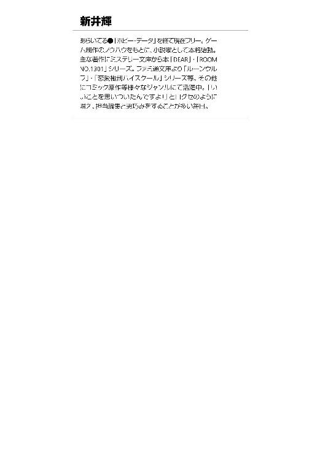
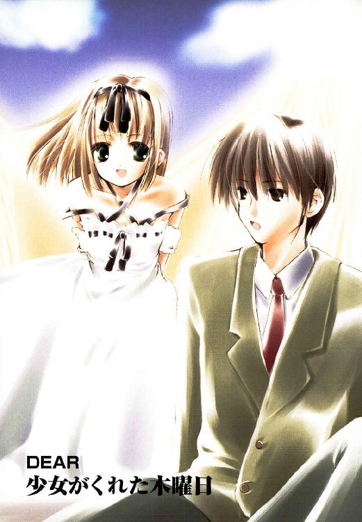
DEAR
少女がくれた木曜日
新井 輝

富士見ファンタジア文庫
本作品の全部または一部を無断で複製、転載、配信、送信したり、ホームページ上に転載することを禁止します。また、本作品の内容を無断で改変、改ざん等を行うことも禁止します。
本作品購入時にご承諾いただいた規約により、有償・無償にかかわらず本作品を第三者に譲渡することはできません。
本作品を示すサムネイルなどのイメージ画像は、再ダウンロード時に予告なく変更される場合があります。
本作品は縦書きでレイアウトされています。
また、ご覧になるリーディングシステムにより、表示の差が認められることがあります。
口絵・本文イラスト 久瀬たかし
目 次
今は事故に感謝しよう。
巻き込まれて自分が死んでしまった、あの事故に。
青山正吾
プロローグ そして俺は〈天使〉に出会った
その世界は、遥か上空から見ると灰色としか言えない。どこまでもどこまでも続く灰色。
しかし近づいてみると、ウソ臭いまでに青いペンキのような空と、そして実は灰色ではなく、白と黒のタイルの床だということがわかる。
その白と黒のタイルはまるでチェスのゲーム盤だ。だがそのマス目の数は無限と言ってよかった。なにせどっちを見渡しても端が見えない。
その上のところどころに青と赤の人型の像が載っている。その像はところどころ集団をなしており、それは像一つ一つを星とすれば、まるで星座のようだった。何か形をなしているように見えないでもない。
そんな像の集団に囲まれるように、一人の少年が立っていた。なんのことはない高校生の少年だ。黒い髪に紺のブレザーが見える。下は赤......いや、赤と緑のチェックのズボンをはいている。
顔はまあこれまた普通の作りと言ってよかった。ただその表情は少々間が抜けている。何事が起こったのか理解できず呆然としている。そんな焦点の定まらぬ視線をしていた。
その少年──青山正吾は、そんな変な所に一人で立ち尽くしていた。変化のない光景に見るべきものもなく、視界は麻痺してしまいそうだった。音が聞えないのは、すでに聴覚が麻痺しているのかもしれない。感じるのは口元に残る冷たい感触──さっきまでうつぶせに寝転がっていた時に床から受けた温度差だけだった。
「えっと......」
見回しても、そこがどこかはわからなかった。一見して不思議な場所だが、じっくり見ても、あまり意味のある場所ではなかった。考えたところで、ここがどこかはわからない。
そしてついでに言うと、彼には今が「いつ」かも、ちっともわからなかった。
彼の記憶によれば、今は十月一日の朝なのだが、そうとは思えない。うっかり寝過ごしたとしても、まだお昼を過ぎているということはないはずなのに、空は明るく晴れわたっている。
しかし空は青いのに太陽が見えない。昼間なのかと思ったが、それも怪しいものだ。
空には雲一つなく、青い色だけが見える。親にゲームばっかりしてと怒られ、視力の低下を気にしている彼ではあったが、それでも目が悪いから太陽が見つからないということなどあるはずもない。
ここは彼が十五年間生きてきた世界とは明らかに違う場所だった。
慌てて、自分の名前を呼んだ。まるで、今までの自分さえも怪しいという不安に駆られたからだ。
「名前は青山正吾」
ちゃんと思い出せた。それに安心して彼は、次々に自分のことを口にする。
「私立時輪台大学付属高校一年一組、出席番号一番。両親は健在で、兄弟はいない──」
なんのこともなく淀みなく言葉になって出てくる。とりあえず記憶はあるらしい。
正吾はそれで安心して、ゆっくりと息を吸い込んだ。すると背中の方、右脇腹の辺りにくすぐったい感覚を覚えた。
「ん？」
その違和感の正体を突き止めるためにブレザーを脱いでみる。すると、そこに何か突き刺さって破れたらしい穴を見つけた。手探りで調べたところ下のワイシャツにも穴が開いているらしい。
「なんで、こんなところに穴が開いてるんだ」
思わずその疑問を口にする。衣替えだからと新しくクリーニング屋から戻ってきたばかりの冬服に穴が開いていれば、そうも思う。しかし、それでまた一つ彼は疑問を浮かべる。
「あれ、そう言えば、俺はいつ、この制服を着たんだ？」
記憶によれば、昨日は親が結婚二十周年旅行に出かけたのをいいことに、夜遅くまでゲームをしていたはずだった。明日からの衣替えのためにと、母親が冬服の上下を出しておいてくれたのも覚えている。しかし、それを着て出かけた時の記憶はない。
出かけたどころか、まだ寝ているはずだ。そう正吾は気づいた。つまり──
「そうか、これは夢だ」
正吾はそれで合点がいった。それはもうあまりに自然な結論だ。
寝ているはずの自分が、およそあり得そうにない場所にいるのだ。他にどんな理由があると言うのだろう？
「そうなんだ、これは夢なんだ」
正吾はそう言いながら、床に触れていた唇の冷たさを思い出す。手で口に触れて感触を確かめる。
夢というのは視覚以外の感覚はあまりないと聞いたことがあるような気がする。だが、冷たさも自分の触れた感触もしっかりと感じた。
正吾は、試しに頰をつねってみた。
「つぅ」
痛みが走った。夢ならそれで目覚めるという気がしたが、正吾は相変わらず白黒の床の上にポツンと立っている。
「おかしいな」
今更、おかしいとか言うのも、なんだか間が抜けている。
「まあ、夢でも痛みを感じることもあるんだろう」
正吾はそれから鼻に空気を一杯に吸い込んだ。臭いらしい臭いはしない。床と彫像、そして自分しかない世界だから、そもそも臭いなんてしない世界なのかもしれない。でも、正吾はそれを「夢だから臭いがしないのは当然」と思うことにした。
それで、確証を得たような気持ちになった正吾は、床以外唯一存在していると言ってもいい、彫像の方に興味を覚える。
改めて見るとかなりの数の像が立っているのがわかった。像はまるで星座のようにところどころ密集して何かの形をなしているようにも見えた。
なので、とりあえず近場の像の集団を見つけて、そこまで正吾はゆっくりと歩いた。床がつるつるしてて歩きづらい。キュッキュッと靴がこすれて音がする。
十分に近づいたところで、彼は立ち止まった。目の前の像に興味を持ったからだ。
「この像、千尋に似ているな」
赤く一色に塗られている──ように見える──その像は、正吾のクラスメイトの真鶴千尋に似ていた。子供っぽい笑いを浮かべると八重歯が覗く。そんな彼女の特徴的な笑みが、その像にも現されていた。
「......本当に似ているよな」
正吾は得体のしれないこの場所で親近感のもてるものを見つけて、知らないうちに笑っていた。千尋の像の笑顔に釣られたのかもしれない。
「よし、他にも探してみるか」
それで正吾が右の方にある別の像を見ると、それにも知り合いの面影があった。
「これは貴博かな」
青く塗られた男の像は赤井貴博という正吾のクラスメイトに似ていた。伊達男を気取る彼らしいすましたポーズが、実に的を射た感じで正吾はまた笑みを浮かべてしまう。
だが問題はその隣の女性の像だった。
「......なんで、この人、下着姿なんだろう？」
どういうわけかその赤い像は下着姿の女性だった。他の像はとりあえず、みんな正吾の学校の制服姿のように見える。この像だけが下着姿というのは、なんだか逆に滑稽な印象を正吾は受けてしまった。
「で、これは誰だっけ？」
その疑問が出たのはかなり後のことになってしまった。下着姿ということに気を取られていたのだ。それに気づいて気恥ずかしいと思いながら正吾は改めて、その像の顔を見る。
ポニーテールの勝ち気な表情の少女。見覚えはあるが誰だったかすぐにはわからなかった。
クラスメイトではない。少し大人びた表情から正吾はきっと上級生だろうと思いあたる。
「ああ、貴博の彼女だ。名前は──」
市ケ谷一美。彼女は演劇部に所属してて、今度の文化祭ではヒロイン役をやることになったとか貴博から聞いたことがあった。
黙っていると可愛いが、強気で勝ち気。喋るとうるさいと貴博が悪態をついていたような気がする。でも、正吾の一美に対する認識はその程度だった。直接の知りあいではない。貴博の彼女という、知人とも言いがたいポジションにいる人間なのだからそんなものだろう。
「......しかし」
いくら像とは言え、友達の彼女の下着姿というのは目に毒だった。あまり色気のある下着とは言いがたかったが、彼女のスタイルの良さを知ることとは何の関係もない。
正吾は、これ以上見ていると悪い気がして、その隣の像に目を移す。
「これは誰だっけ？」
一美の側に位置する像はどうにも見覚えがなかった。小さくて弱々しい印象を受ける少女の像だ。長く細い髪をリボンで結んでいる。どこか一美に似ているような気もする。
で、正吾はしばらく考えてから、きっと一美の妹か親戚、いずれにせよ彼女の知りあいだろうと結論して別の像を探すことにした。
一美から距離を置くようにして、しかし彼女を睨むようにして立っている像があった。女性にしては背が高く、その周りに集まるように立っている少女たちとは明らかに違う存在感を持った像だ。
「演劇部の人だったかな。なんか美人だし、ポーズもそんな感じだしなあ」
しかしそれも正吾にははっきりとした見覚えがなかった。やはり制服を着ているので、同じ学校の生徒なのだろう。彼女を取り巻く少女たちも見たような見なかったような、そんな感じだった。比較的可愛い女の子が多い気もするが、正吾は自分がそういうことにあまり興味がないらしいと気づくだけだった。
それから思い切って、正吾は少し違う方向を探すことにした。そのまま進んでも、自分の知らない人が増えるだけのような気がしたからだ。
で、意外な像を見つける。
「これ、俺だよな......？」
奇妙な感覚だった。正吾は目の前の、どうやら自分の像らしいものをじっと見つめる。
貴博の像と同じく全身青。だがその作りは不気味なほど自分に酷似していた。
服装を見ると今の自分と同じくブレザーを着ている。思い出してみると、他の像もそうだった。あまりに自然だから意識もしてなかったが、確かにそうだった。
「......って、ことは」
正吾はふと気になって自分の像の背中の方に回った。さっき自分が確認した背中の穴を確認するためだ。
「やっぱり穴が開いているな」
改めて客観的にその穴を見ると、何かで刺された痕だという気持ちが強くなってきた。しかしいわゆる包丁とかナイフによる穴ではなさそうだ。穴が小さいし、切られたというよりは破れたような穴の開き方をしていた。ナイフの類いだとしてもかなり切れ味の悪いものだったんじゃないかと考える。
「でも、なんの穴なんだ？」
夢だと思いながらも、そういう細かいことを気にする自分が妙な気もした。でも、自分に関することだと思うとやはり気になる。
で、他に何か特徴がないかと思ってぐるぐる回る間に、ふと違う像に正吾は興味を覚えた。
「これ、乃木坂さんだよな」
自分の像の側に彼女の像は立っていた。どこか見覚えがあるなと思っていたが、彼女のトレードマークとも言うべき、メガネをその像はかけていなかったからだろう。それで気づかなかったらしい。
正吾が乃木坂さんと呼んでいるのは、彼のクラスの学級委員長の乃木坂秋葉だ。中学三年の時も一緒のクラスで、その時も彼女は学級委員長をやっていた。そう考えると随分と一緒に同じ時間を過ごしているはずだが、正吾が秋葉と話した時間は決して長いとは言えなかった。
真面目で働き者の彼女を見ると、正吾はどうにもやる気のない自分にコンプレックスを感じてしまう。だから、仲良く話しかけるようなこともなく、そして向こうもそうであった。
貴博や千尋とは高校に入ってからの知り合いだが、きっと秋葉と交わした言葉の五十倍は話しているはずだ。それぐらい、正吾と秋葉は疎遠だと言って良かった。
「にもかかわらず、ここに乃木坂さんがいるのはどうしてだ？」
しかもメガネをかけていない彼女がそこにいるのが気になった。
もしかしたらこの夢は自分の隠れた願望というヤツなのだろうか？──正吾はそう考えて、じゃあ自分はメガネをかけていない彼女に密かに憧れを抱いていたのだろうかと思い至る。
「いや、そんなわけないか」
実際問題として、正吾はメガネをかけていない秋葉を見た記憶はなかった。本当は見たことがあったかもしれないが、印象に残っていない。本当に気にしているなら、たった一度しか見たことがなくても覚えているはずだ。
「だから、気にしてないに違いない。うん、そうだ」
正吾はそう結論すると、それでも何か心にひっかかったのか乃木坂秋葉の像を見つめた。
なんとなく。なんとなくなんだが、メガネをかけていない秋葉の顔を、見たことがあったような気がした。そんな遠い昔ではなく、ついさっき──。
「でも、そんなはずはないよな......」
そう正吾の言葉が告げていた。そうであるはずがない。
「だってこれは夢なんだから」
正吾が胸の奥から込み上げる不安を押し込もうとした時だった。不意に、この場所に来てから初めて自分以外の声が聞えた。
「正吾クン。これは夢じゃないよ」
小さな女の子の、鈴の音のような笑った声だった。正吾は慌てて辺りを見回す。
最初は像がしゃべったのかとこれまた不自然なことを思ったが、それよりももっと不思議な光景が正吾の視界に入ってきた。
「......って、キミは誰？」
十歳くらいだろうか。小学生のような女の子の顔が、肩越しの正吾の視界に入った。それだけなら、まあそんなに不思議でもなかったかもしれない。だが、その女の子の目線は正吾のそれと同じだった。身長百二十センチほどの少女と、百七十近い身長の自分が同じ位置に目線があるはずはない。もちろん台に乗っているわけではなかった。
彼女は宙に浮いていたのだ。それで、にこっと正吾の方を見ている。
「私はトーカ」
彼女はそれだけ言って、さらににっこりと笑った。
なんの説明にもなっていない──が、正吾はつられて笑ってしまう。
「トーカ？」
「そうトーカ。で、私はこの精神と時の世界で、〈時間的複雑構造体〉の調整を行っている管理局の修復担当官で──」
「は？」
聞きなれない言葉が続いて思わず、途中で正吾は声をあげてしまった。
「くろのま......なんだって？」
「〈時間的複雑構造体〉の管理局の修復担当官」
「って、それは何なの？」
正吾にとっては、トーカと名乗る少女の言葉は何度繰り返されてもわかりそうにはなかった。それを理解したのか、トーカは一度腕を組んでから少し考えるそぶりを見せた。
「まあ、簡単に言うと、運命を司る神様の下で働く天使みたいな存在かな。そういう風に言った方がわかる？」
言われて見ると、トーカと名乗ったその少女の背中から羽のような光が伸びていた。頭の上にも光の輪っかのようなモノも見えるような気がする。服装は白くだぼっとしたワンピース。デザインからするとどこにでもありそうだが、材質の光沢は正吾が見たことのあるどの布よりも強く、見たこともないもののようだ。
「......まあ、なんとなくは」
正直言うと全然わからない。でも、説明を聞いたところでわかりそうもないので、そういうことにしておく。
「で、キミは天使で、ここは夢じゃないとしたら、俺はなんでここにいるわけ？」
正吾は確信に満ちたトーカの言葉に、とりあえず自分の疑問をぶつけてみた。彼女の言葉を疑うよりも前に、自分の知りたいことに答えてもらう方が先のような気がしたのだ。
「簡単に言うと──」
トーカはそんな正吾の態度に納得したのか、すっと地面におりると彼の周りをてくてくと歩き始めた。意味があるのかないのかわからないが、右手の人さし指だけ伸ばし、それをまるでメトロノームのように正確に左右に振りながら。
「正吾クンは死んだので、この精神と時の世界に召喚されたんです」
「は？」
信じがたい言葉が飛びだして、正吾は自分の耳を疑う以前に、自分の脳みそを疑った。
「正吾クンは死んだので、この精神と時の世界に召喚されたの」
自分の話を真面目に聞いてないのに腹を立てたのか、トーカは立ち止まると、口をとがらせた顔で、じっと正吾の顔を覗き込んだ。真剣な表情に正吾はひるんだが、それでも理解しがたい事実が変わるはずもなかった。
「......で、それは、どういうこと？」
「そのままの意味だよ」
さっきまでとは違って、妙に子供っぽい口調でトーカは答える。と言っても、外見からすればこの口調の方がしっくりくる。
「じゃあ、俺はすでに死んでて、ここはその......死後の世界ってこと？」
「まあ、簡単に言うと」
恐ろしい事実をトーカはあっさり肯定する。それがあまりに現実味がなく、正吾は他人の話のような冷静さで、トーカにさらなる疑問をぶつけた。
「でも、死んだ時の記憶がないんだけど、これはどういうことなんだろう？ 俺の記憶が確かなら、俺はまだ寝ているはずなんだけど」
「ああ、それはね」
トーカはにっこりと笑うと、また正吾の周りを歩き始めた。正吾はそんなトーカを追って、同じ場所でクルクル回る羽目になる。
「この世界に呼ばれた人は、本人が望まない限り、その日、一日の記憶を失うようになっているから。つまり正吾クンは死んだ日のことを覚えていたくないと思っていたから、忘れてしまったというわけ」
「それは、また、どうして？」
そういう世界だから忘れる、というのはまあいいとしても、覚えていたくないというのはどうしてだろうか？ 正吾はそのあたりが妙に気になって反射的に尋ねていた。
「自分が死んだことを覚えていると、呼ばれたのはいいんだけど、ショックで何も聞きたくなくなってしまう人が多いから、かな。いずれにせよ、あんまり色々と覚えてもらっていても困るということもあるのかもしれない」
トーカは急になんだか不確かな答え方になった。どうも誰かから与えられた知識で話しているようだ。きっと天使にも色々な階級があって、彼女はそんなに偉い方ではないのだろう、なんてことを正吾は考えたりした。それに気づいたのかトーカは急に堂々とした態度をとると、はっきりとした口調でこう続けた。
「いずれにせよ、覚えてないのは正吾クンの意志です」
「な、なるほど」
正吾はとりあえず難しい理屈はきっと聞いても無駄なんだと思うことにした。トーカも詳しくは知らなそうだし、巧く説明してくれそうもない。そもそも難しいことを考えるのは正吾は苦手だった。
「で、俺が死んでいるとして、どうしてこの世界にいるのかな？」
迷子の子供をあやすような口調で正吾はトーカに話しかけた。下手なことを言うと怒るだけでなく泣きだしそうな気がしたのかもしれない。トーカはそんな彼の態度には気づかず、待ってましたと笑みを浮かべて、正吾の周りを歩きながら説明を続けた。
「正吾クンは死んだことは死んだんだけど、実は間違いだったわけ」
「は？」
「本当は死ぬ予定じゃなかったの」
「じゃあ、なんで死んだの？」
「だから、間違いがあったの」
「ふーん」
もうなんだかどうでもよくなってきた。およそ真実味など感じない展開だ。
「で、間違いだから、この世界に呼ばれたってわけ？」
「そうそう」
トーカは何がそんなに嬉しいのかわからないが、ニコニコして続ける。
「正吾クンの世界の住人たちは運命という巨大な河に沿って流れる船のようなものなの。で、私たちはその船が無事に海まで出ていくのを助けるのが仕事なの」
「......なんとなく、わかったようなわからないような」
「で、河の流れは予想外の展開で変わったりもするわけ。本当は正吾クンは無事に川下に流れていくハズだったんだけど、ちょっとした手違いで他の人の船にぶつかって」
「一緒に沈んでしまった......ってわけ？」
要するに急に水かさが増したせいで並列していた船にぶつかってしまったとかそんな感じなのだろう。正吾はそう考えながら、でもそれが自分の人生とどう関係があるのかは、正直わかっていなかった。もっともわかれというのも無理な話だが。
「で、まあ、一緒に沈んでしまった方も、本当は沈む予定じゃなかったの。これはそう不幸な事故なの。わかる？」
「ああ、なんとなく」
「で、私たちとしては河の水量が変わるのは他の人の都合で変えられないから、正吾クンに自力で乗りきって欲しいと思っているわけ」
「はあ」
正吾は、とんでもないことを言われているんじゃないかと思うが、実感がわかないこともあって反論する気にはなれなかった。そもそも意味がわからない。
「乗りきって欲しいとかいうけど、俺はもう死んでいるんだろ？」
「そうそう、それを最初に話さないといけなかったんだよね」
なにやら一人でうなずいて納得して、トーカは正吾の目の前で立ち止まった。
真剣なまなざしでまた正吾を見つめる。
「正吾クンには、あと三回だけチャンスがあります」
またトーカの喋り方が大人っぽい口調に戻った。
「三回？」
「十月一日を正吾クンはあと三回繰り返して、その間になんとか事故を回避してください」
「そんなこと言われても、その事故ってのがどんなのかわからないし」
自分が人に恨まれてて死ぬ。そういうことなら自衛する方法はあるだろう。しかし不慮の事故で死ぬから気をつけろと言われても、どうなるものでもなさそうな気がする。
「だから三回チャンスをあげるから、なんとかして欲しいわけ」
「じゃあ聞くけど、俺はどういう風にして死んだわけ？」
「それは私の口からは言えません」
「なんで？」
「正吾クンが覚えていたくないから、今は忘れているわけ。だから、こっちの都合で無理に思い出させると大変なことになるかもしれない」
「大変なことね......」
自分が死んだとすれば、それはもう十分に大変なことだし、トーカの言葉を信じるなら、どう考えても、彼女（か、その関係者）の都合で自分はここにいるんじゃないのだろうか？
もしかしたら、自分が死んだというその日にその答えがあるのかもしれない。しかしそれは、これまたトーカの言葉を信じるなら、思い出さない方が良いわけなので考えるだけ無駄な気がする。
「ところで、その」
「なに、正吾クン？」
「三回繰り返さないと駄目なのかな？」
「途中で止めるのはアリかってこと？」
「それもそうだけど、もうこのまま死んじゃうとか」
我ながら消極的なアイデアだが、まあ死んでしまったなら、それを素直に受け止めるというのもアリのような気がしていた。現実感がないからかもしれないが、別に生き返って何かしたいというような強い気持ちもない。
「相手も了承している場合はアリ」
少し不満そうにトーカが答えたのを感じた。まあ、チャンスを与えると言われて、いらないと言われたらいい気持ちはしないだろう。何かの都合があって呼びだした以上、そのあたりの絡みもあるからかもしれない。
でも、正吾が気になったのは、そっちよりはむしろ答えの方だった。
「相手？」
「えっと、正吾クンの場合は、この事件の犯人......と言っていい人のこと。この世界には二人一組で呼ばれることになっているの」
「で、その犯人はやり直したいと思っているわけ？」
「らしいよ」
これまた子供口調の不確かな意見だった。きっと今ごろ、その犯人も他の天使と面接の最中なのだろう、と正吾は思った。
「えっと、そうすると......俺はその犯人と一緒に、もう一回か何回かわからないけど、十月一日を繰り返して、なんとか生き残れってことなの？」
「まあ、そういうこと。これは大事なルールなんで覚えておいて欲しいんだけど」
「なに？」
「正吾クンとその犯人さん以外は、最初の十月一日と同じように動きます。これは三回とも変わりません」
「ふーん。じゃあ、俺がわざとその行動を止めようとしたら？」
「その時はその人の行動は変わるの。でも、運命に従って元通りに戻ろうとするの」
「じゃあ、やり直しても変わらないような気が......」
「でも、肝心なところだけ修正すれば、結果が大きく変わることも有りえるんだよ」
やる気のない正吾を叱るように、トーカは体いっぱいで主張する。
「死に損なうのと、死んだのとでは、続きがあるのと続きがないのとで全然違うでしょ」
「それはそうだけど......それって、俺が死にはしないけど、死にかけることは避けられないってことかな？」
「べ、別にそういう意味じゃないけど、例えばの話」
「まあ、なんとなくわかった。小細工を色々してもしょうがなくて、ここぞってところでバシっと運命を変えてくれってこと？」
「そういうこと」
トーカは正吾が理解してくれたのが嬉しいのか、にこっと笑った。それに安心して正吾はさっきからずっと感じていた疑問を尋ねることにする。
「じゃあ、聞きたいんだけど」
「なに？」
「ズバリその犯人ってのは誰なの？」
そう聞かれてトーカはしばらく押し黙った。答えていいか考えているというよりは、何か電波で通信でもしているかのような印象を受けた。事実そうだったらしく、トーカは例の伝聞風の大人口調で答える。
「相手がそれを望んでいないので教えられません」
「......なるほど」
「基本的にヒントはなしだって。あんまり教えると予想外のことが起こるかもしれないから」
「ヒントはなし......か」
正吾はじゃあ、と思って違う疑問を口にした。これはヒントというわけじゃなさそうだ。
「なんで、三回なの？ うまく行くまで何回でもやり直せばいいような気がするけど」
もっともな疑問。時間をさかのぼってやり直しができるようなスゴイことができるなら、もうなんでもアリなのに、なんでわざわざそんな制限とかをつけるのだろうか。
「この世界の管理者──神様って言う方が早いかもしれないけど、その神様が三という数字が好きだから」
「なにそれ？」
「三というのは神秘学的にはすごく安定した数字なんだって。三位一体とか言うでしょ？」
「どういう意味かわからないけど、聞いたことはあるような気がする」
「まあ、これはちょっとヒントになっちゃうかもしれないけど──」
納得しかねている正吾を見て、トーカは言いよどみながら、こんなことを言った。
「その事故で死んだのが三人だからってのはどう？」
「三人だから三回？」
なんとなくわかるようなわからないような。そう正吾が思った時、トーカの指が空を指差すのが見えた。
「じゃあ、この辺でそろそろ正吾クンは十月一日に戻ってください」
「あ、はい」
特に断る理由もないので、勢いに乗せられる形で正吾は答えてしまった。その途端、トーカがまたにっこり笑って、今度は正吾の立っている床の方を指差した。
それに気づいて正吾が目で追うと、床が三角形の小さな板に分解されて舞い上がるのが見えた。見る間に足場がなくなり、正吾は何もない暗い闇の中に落ち始める。
「じゃあ頑張ってね、正吾クン」
正吾を襲っている混乱とは対照的に、何にも気にしてなさそうなトーカの声が聞えた。
落下しているのは正吾だけのようだ。トーカは最初に現れた時のように宙に浮いている。
正吾は闇の中をずっと落ちていきながら、空に向かって舞い上がる白と黒の床だった無数の三角の板を見ていた。
なんだか見覚えのある光景だなあ、と正吾はのんびりと考えているうちに、それが昨日の晩にずっと遊んでいたＲＰＧでの戦闘シーンへの切り替え画面のように見えてきた。何度となく繰り返された効果音が頭の中に響く。
で、そのせいか正吾はまたしても現実感を失い、闇の中に落ちるうちに意識も薄れていくのを覚える。それと同時に時間がゆっくりと流れ始めたように感じた。
トーカと自分がいたはずの世界はもうなかった。広大な黒い空間を正吾はただ落ちているという感覚だけを残されて放り出されているかのようだ。
どこに落ちるんだろう？ いや、そもそもまだ落ちているのか？──いろんな疑問が浮かぶが、答えはもちろん返ってきたりはしない。そこには正吾しかいない。彼がわからないことに答える言葉も心もそこにはないのだ。
闇の中、彼はもう一つ疑問を浮かべる。
「頑張れって言われても、どうすればいいんだ？」
正吾が小さく呟くと、それを最後に彼の意識は闇の中で消えてしまった。
第一章 俺はなんで死んだのか？
自分の部屋のベッドの中。そこで正吾は目を覚ました。
「ん......」
寝ぼけた視界の中に白と黒のタイル模様が見える。だが、ここは確かに彼の部屋だ。
兄弟はなく一人きりとは言え、そんなに広いと言うほどの部屋でもなかった。八畳ほどの部屋の床に漫画やらゲームの攻略本が散乱していた。薄緑色のカーペットが敷いてあるのだが、その大半は見ることができないほどだ。
壁の方に立て掛けてあるボックスの上にはテレビが載っており、その下にはゲーム機とゲームのＣＤが入っている。ゲーム機のコントローラはこれまたいい加減な形で床に投げ出されており、昨晩、本当に眠たくてどうしようもなくなるまでゲームをしていたのを思い出した。
それからふと視線を戻して、正吾はあることに気づいた。
あの変な夢の原因はベッドの上の掛け布団かもしれない。あの奇妙な世界の床と同じ白と黒のタイルパターンだ。そろそろ寒くなってきたので、押し入れから引っ張り出してきたのを彼は思い出す。だからだろうか部屋の中が少しかび臭い気もした。
「やっぱり夢だよな」
安心したような気持ちになって、正吾はまだ鳴ってない目覚ましを見る。まだ六時半。起きるには早い時間だ。彼は高校が近いこともあって、いつもなら八時に家を出る。七時半ぐらいに起きて準備を始め、朝食の六枚切りのパンを食べてから出かけるのが彼の日課だ。
だから正吾はもう一度寝ることにした。昨晩は遅くまでゲームをしていたので、まだ眠かったからだ。
「しかし変な夢だったな」
寝返りをうちながら正吾は、目の覚める前の奇妙な体験を思い出す。あの夢としか思えない体験を──。
でも、果たしてあれは本当に夢だったのだろうか？
机の横のカレンダーも、起きたらめくろうと思って残してあった。だから、まだ九月のままだ。その横にかけてあるのは、母が出しておいてくれた冬服であり、まだそれから一度も着てないらしくクリーニング屋のビニールがかけたままだった。わざわざ着た後、元に戻すほど自分が律義な人間だとは正吾には考えられない。
つまり今日は十月一日。もしあの夢が本当だったとしても、まだ自分は死んでおらず、これから死ぬとしても、まだ二回はチャンスがある。
そう考えると、とりあえず夢だろうがなんだろうがどっちでもいいような気がした。
それに事故で死ぬのだ。気をつけようがない。だから、とりあえずは普通に一回過ごせばいい。それで死ななければ、変な夢だったということで済むし、死んだらやり直せばいいだけのことだ──正吾はそう納得すると、温かい布団の中でまた眠ることにした。念のためと思って、目覚まし時計が動いているのを確認してから。
そして彼は自分でも驚くほどあっさり二度寝に入ることができた。それはもう本当にあっさりと。今までもそうであったように。
止めるまで続く拷問のような音色。黒板をツメでかきむしる音と同じで、何度聞いても慣れることのない不快な音と言うのがある。正吾にとって、目覚まし時計の出す音もそんなものの一つだった。
「......うぅ」
時計はしつこいまでに続くけたたましくも高い金属音を打ち鳴らす。もちろん、目を覚まさせるためには心地良い音であってはいけない。それはわかっているが、今ばかりはもっと気持ちのいい音であって欲しかった。
起きなくてはいけないのはもうわかっている。だから起きる。でも、止めなければこの音が鳴り続けるという事実には変わりはない。
しかも眠い、とにかく眠い。頭が痛いという気持ちさえする。正吾はフラフラと観念したように、起きることを決め、目覚ましを止めた。
窓から差し込んでくる光が、さっきよりは随分と明るくなっていた。もう十分に朝と言っていい時間らしい。布団を出ると、眠気を覚ます冷たい空気を感じた。
「かえって眠いような気が......」
詳しくは知らないが、睡眠は三時間単位でするべきだという話を聞いたのを思い出す。一時間というのはどうにも目覚めの悪い長さだと正吾は身をもって学んでしまった。
六時半に目を覚ました時より、明らかに調子が悪い。もしやり直せるなら、今度は素直に起きようと心に誓うが、そんなことに意味があるとはあまり思っていなかった。いつだって眠い朝はそんなことを思ったりするものだったからだ。
「そう言えば、今日は一人だったんだっけ？」
妙に家が静かだと気づいて、正吾は呟いた。昨日の晩遅くまで遊んでいたのは両親が出かけているからなのだ。考えれば、当たり前のことである。
正吾の両親は、結婚二十周年記念の旅行に出かけている真っ最中なのだ。昨日の水曜日の朝に出かけ、帰ってくるのは日曜の夜。つまり四泊五日。正吾が生まれてから初めての、二人だけの大旅行中だったのだ。
つまり朝ご飯も自分が作らねばない。その事実に今更気づいて、もう少し早く起きるべきだったと、正吾は早くも今朝二度目の後悔を始めた。
でも、それでも正吾は朝ご飯を食べるのをやめようとは思わない。気持ちを切り替えて、階段を下りて一階の居間へと向かう。
電気がついてない暗いままの家の中。それを正吾は初めて感じた微妙な不安として受け取った。いつも自分が起きる頃には母親が起きていた。だから電気をわざわざつけるという日課は正吾にはない。そんなことに彼は気づく。
灯がつくと改めて、この居間がクリーム色を基調にしていたことを知らされた。
それから彼は白い大きな冷蔵庫の上に置いてある自分用の六枚切りのパンの入った袋を手に取った。自分用のというのは、他の家族は六枚切りではなく、八枚切りのパンを好んで食べるからだ。正吾はなんとなく六枚切りの方が好きで、そんな彼のこだわりを母親は尊重し、いつも彼用に買ってきておいてくれているのだった。
「うしっと」
袋を留めている水色のプラスチックの留め具をはずすと、正吾はパンを取りだしトースターにつっこんだ。それが合図になってトースターの横についている赤いランプが光り、じーっと鈍い音を立ててパンを焼き始めるのがわかった。
正吾はそれから袋を閉じて、また冷蔵庫の上に戻すと今度はコーヒーをいれることにした。眠い頭を冴えさせるためにも飲んだ方がいいような気がしたからだ。
で、パンが焼けるのを待っている間、彼はテレビでも見ることにする。時間の確認の意味もあったが、家族がいない静かさから逃げたかったのかもしれない。
テレビをつけるとニュースをやっていた。しかし、総理がどうこう、与党がどうこう、そんな高校一年生で政治には興味のない彼にとってはどーでもいい報道内容だった。
「......待てよ」
にもかかわらず、正吾は何かひっかかるものを感じた。このニュースを自分は昨日も見たような気がしはじめたのだ。つまらないニュースを見てしまったなあ、と昨日も思ったような気がする。
しかし昨日は父親たちが嬉しそうに騒いでおり、テレビどころじゃなかったはずだった。となると、単なる錯覚だろうか？ そこまで考えて、正吾は「夢」のことを思い出した。
あの夢が本当なら、もしかすると自分は昨日というか、本当の『今日』にニュースを見ていたのかもしれない。
正吾はそれを感じて、本当に見たのかどうか思い出そうとした。しかしどうにも記憶がおぼろげだ。もしかしたら、ずっと昔に同じようなニュースを聞いて、同じ感想を持っただけかもしれない。
そう思いかけた時、正吾はなんとなく次のニュースの内容を思い出した。
「確か交通事故だった。そうだ、比較的、近所だったから気になったんだ」
正吾が呟く間に、ニュースは別の話題に移った。そしてそれは確かに交通事故の報道だ。正吾の住む家の近くで昨晩、事故があって三人が怪我をしたらしい。
「......当たった」
正吾は、なんだか逆に空恐ろしくなるのを覚えた。急にあの夢に現実感が増してくる。
それは要するに、自分は一度死んだということも意味していたからだ。そして何も考えずなんとなく暮らしていれば、自分はまたもう一回死ぬことになるのだ。
それを考えるとひどく恐くなって、正吾はそんな気持ちを振り払うように立ち上がると、いつの間にか焼き終わったらしいパンを手に取ってかじりついた。
せっかくの焼きたてのパンの香りも味わう余裕がないらしいと自覚して、正吾は大きくため息をついた。それから気分が滅入ってしまったので、リモコンでテレビのスイッチを切る。
「ただの偶然かもしれない」
ニュースの順番というのはいつも同じような気もする。近所で事故があるというのも、見通しの悪い場所があるこの辺ではそんなに珍しいことではない。
今日と同じように、興味の持てない政治のニュースのあとに交通事故のニュースが続いたことは何度だってあったはずだ──。
正吾はそれから、そんなつまらないことを覚えているというのに、自分が死んだ時のことは覚えてないということは有りえるだろうかと考えた。
「こんなつまらないことを覚えているなら、もっと大事なことは絶対に覚えているはずだ」
だからやっぱりあれは夢だったんだ──と正吾は感情的に結論すると、食事をさっさと終えた。それから真新しい冬服に着替えて、家を出て学校に向かう。
「やっぱり夢だよな」
途中気になって確認したが、上着に穴は開いてなかった。もっとも、それは夢が本当かどうかにかかわらず開いているはずもない。正吾はそれに気づかないくらい動揺している自分には気づいていなかった。
玄関を出ると冷たい風が吹いていた。まだ十月の初めだが、季節は確実に秋から冬へと向かい始めているのだと気づかされる。庭を見ると母親のお気に入りの植物たちも、もう紅葉していた。ここ、東京でも北の方に位置している時輪台では、もうそんな時期がやってきているらしい。
正吾はそんなわけで新しく着ることになった冬服に感謝しながら通りに出た。他にも学校や駅に向かう人の姿が見えた。学生たちは、これまた当たり前だが、冬服を着ていた。
視線を少し上げると、彼の通う時輪台大学付属高校が遠くに見える。白くて立派な校舎が、偉そうに踏んぞりかえっているかのようにも感じられる。その手前には駅ビルや、駅前のパチンコ屋などのビル。線路の向こうに学校も商店街も両方あるのだ。
時輪台大学付属高校は、彼の家から北の方、すこし小高い丘の上にある。彼がそこに通うようになったのも、そんな家から見える場所というのも理由の一つだった。中学、高校、大学とエスカレーター式。中学受験を頑張れば、後はのんびりしててもいいというのも、正吾の性に合っていたのかもしれない。
秋の朝の澄んだ雲の低い空。そこに白くて奇麗な立派な校舎が見える。いかにも私立らしい全校生徒千二百人程度の学校にしては、大きな校舎だった。
そのさらに向こうには、三河神社が見えた。学校よりもさらに上の方、丘というよりはもう山の上にあるその神社には、近所の人間でもあまり近寄らない。なにせその階段は冗談のように長く、なんでも三百二十四段もあるというのである。煩悩の数、百八の三倍。三河神社の名前にちなんでそんな風に設計したと正吾は聞いたことがあったが、正直、そんなバカなことをしなくても......と思っていた。
しかし今日の彼は、それを思い出して、ふとまた心の中で不安が広がるのを憶えた。
三──という、なんのこともない普通の数字が彼の心に引っ掛かっている。
「三。三なんだよな」
三人死んだから、三回やり直せる──そんなトーカの言葉を彼は思い出してしまう。
ただの偶然かもしれない。そもそも三河神社は彼の生まれる前からずっと存在していたのだ。いまさらそこに何か意味を感じるなんて、ナンセンスなことだろう。
たまたま、今日、それが気になっただけだ──そう彼は思うことにした。
「ん？」
ふと誰かが後ろから自分を見ているようなそんな気がした。しかし振り返ってもそれらしい人は誰もいない。誰もいないということはないのだが、自分に興味を感じているという気配の人間は見当たらなかった。
そこで、一つの考えが彼の脳裏に浮かぶ。
「もしかして犯人が......」
言いかけて、そんなはずはないと即座に理解した。
あの自称天使のトーカが言っていたのが本当だとしても、いや本当であるなら、自分は犯人に追われる理由など何もないはずなのだ。
あくまで正吾が死んだのは「事故」なのだ。もし犯人に恨まれており、殺されるべくして殺されたなら、それは「事故」なのでは決してない。
正吾は恨まれる憶えはないし、恨まれて殺される筋合いなどまったくないのだ。
もし今日、あの夢の中で聞いた通り死ぬとしても、それは正吾の理由ではなく、他の人の理由に巻き込まれる形になるはずだ。
だから必要以上に不安になることは何もない。ましてや自分が憎まれつけ回されているなんて、考える方がおかしい。
「そういうことにしておこう」
冷静に考えると穴があるかもしれないが、正吾はそう呟いて考えるのを止めた。それから楽しくもないが、無理に笑いを浮かべる。空元気でも出しておいた方がいいと思ったからだ。
しばらく歩いて駅前の辺りまで来ると、正吾は次第に心が落ち着くのを感じた。それは登校中の生徒たちの姿を見るにつけ、冬服の色合いの昨日までとの違和感を彼は強く憶えたからだ。
「この今日が二度目なはずはやっぱりないよな」
わざわざ確認するまでもないことを、正吾はあえて口にする。しかしそれは駅から降りてきた生徒たちの会話に比べればずっとずっと小さな声だった。
電車で通学している生徒たちがバス停の方に向かっている。しかし正吾はバスに乗るのがあまり好きではなく、歩いて通学するのが常だった。
待っているより歩く方が早い。歩いて十分程度の距離なら、実はけっこう微妙なところなのだが、それでも混んでいるバスに乗ることを考えると、彼は歩いた方がいいと思っていた。だから彼は駅前のロータリーを過ぎて、そのまま徒歩で学校へと向かう。
そして彼はそんな自分と考えを同じにする徒歩組の生徒たちの後ろ姿を追いかける。
もちろん冬服に変わっている。紺のブレザーに、赤と緑のタータンチェックのズボンやスカート。ブレザーと同じ色の肩掛けカバン。この辺まで来ると、同じ学校の人間ばかりが目につく。違う学校の生徒たちは、駅で電車にでも乗ったのだろう。
「今日が二度目の十月一日だなんてあるわけがない」
記憶にないこの登校風景を見れば見るほど、正吾のそんな思いは確かなものになっていく感じがした。
しかし──。
「そう言えば、もし俺が死んだらどうなるんだろう？」
心に余裕ができたせいか、正吾はふとそんなことを考えた。バカげた発想だが、気になり始めると考えてしまう。
両親はきっと驚くだろう。めでたい二十周年記念の旅行の途中で一人息子が死ぬのだから当然だ......と思ったが、そうでもないかもしれないと不安がよぎる。
「お前もやっと手がかからなくなってきたしな、俺たちがいなくなっても大丈夫だろ？」
旅行に出かける前の父親の笑顔と言葉を思い出す。
父親も母親も、正吾を育てるためにじっと頑張ってきたらしい。旅行や遊びらしい遊びもせず真面目に。それから解放されて旅行に出かけた二人の嬉しそうな顔は、正吾が見たこともない健やかなものだった。
正吾が死んでも、二人はけっこう冷静にそれを受け止めるかもしれない。
「マジで嬉しそうだったもんなあ。俺って実はお荷物なのかもしれない」
そんな風に不安を肯定する材料をみつけて、正吾は鬱に入った。
家庭に救いを求められないならと、正吾は学校の友達のことを思い出す。でも、あまり親しい友人と言えるほどの人間が浮かんでこなかった。
仲の良いクラスメイトと言えるのは、赤井貴博と真鶴千尋の二人くらいだった。それでも学校で話すくらいで、一緒に帰ったり、どこか遊びに行ったりするような関係ではない。
「......俺って彼女どころか友達すらいない寂しいヤツだったのか」
そう呟くと、気分はさらに滅入った。空もどんよりと曇ってきた気がする。ここで雨でも降ってこようものなら、泣きながらバラードでも歌ってしまうかもしれない。
そんな気持ちに支配され、正吾は肩を落とし、大きくため息をもらした。それだけで全身から力が抜ける。まるで息と一緒に元気まで吐き出してしまったかのようだった。
ちょっと泣きそうになる。このまま引き返して家でじっとしていたいとさえ思った。
家には家族はいないし、そうすれば事故に巻き込まれずに済むに違いないとも考えた。
しかし、同時にもっと悲しい気持ちに彼は支配された。
──そんなの死んだのと同じじゃないか
人生に何も希望を見いだせず、死から逃げるだけ。それなら生きていても死んでいても同じだ。
「そうか、俺は死のうが死ぬまいが一緒なんだな」
口にするとまた鬱度がました。否定したいのに否定する言葉が出てこない。坂道を転げ落ちるように、正吾の気持ちはどんどん暗くなっていく。
また、ため息をついたその時、後ろから彼を呼ぶ声が聞えた。
「青山クン？」
正吾は自分が呼ばれたらしいと気づいて、ゆっくりと足を止めた。しかし振り返って声の主を確認するような気分ではなかった。なので、その声の主がやってくるまでそこで止まっていた。
「大丈夫？」
声の主は乃木坂秋葉だった。正吾のクラスの学級委員長だ。去年も同じクラスで、しかも委員長をやっていたことからわかる通り、生真面目な性格の少女だった。
背は正吾より十センチは低かった。肩を落として背を丸めている正吾から見ても、まだ顔が下に見える。癖の強い少し色の抜けたような長い黒髪を、編み込んで前にたらしていた。それだけ見るとおしゃれなのかもしれないが、どうも彼女がしていると、単なる実用本位のような気がしてならなかった。それはきっと、おしゃれとはほど遠い、分厚い丸い縁のメガネをかけているせいだろう。
──メガネ？
正吾はそう言えば、と気づいた。
今日の秋葉は、夢の中とは違って、ちゃんと丸い縁のメガネをかけている。いつもの通りと言えばいつもの通りだが、それが正吾には不思議な気がした。
「どうしたんです？」
自分の問い掛けに一向に答えようとしない正吾に秋葉は疑問を感じたようだった。いつもは表情を見せない彼女が不安そうに見ているのに正吾は気づいて、急に驚いたように我に返る。
「あ、いや......ちょっとね」
正吾は何を言っていいのかわからなかった。彼女と話したことは、本当に少ない。ましてや向こうから心配して話しかけられたことなど一度もなかった、と思う。
正吾にとって秋葉は近寄り難い真面目で恰好いい人だった。自分は不まじめで恰好悪い。そんな劣等感を感じることもある。
「調子悪いなら家に帰った方がいいんじゃないですか？」
正吾の顔色が悪かったせいか、秋葉は正吾にそんな提案をした。正吾は家に帰ろうとしていたこともあって、彼女の言葉にぎょっとして、慌ててそれを否定する。
「いや、別に調子が悪いわけじゃないんだ。ちょっと悩んでいることがあって」
「悩んでいること？」
尋ね返されて、言葉につまる。正吾はなんとなくそれを誤魔化したくなって歩き始めた。秋葉はそれに気づいて追いかけるように歩き始める。
秋葉の歩みは、落ち込んでいる正吾のそれとは違って実にキビキビとしたものだった。会話らしい会話もないこともあって、気づくと秋葉の方が前に出る形になっていた。一歩ほど離れたところを正吾が追いかけてるようにも見える。
「私にはやっぱり言えないことなんですか？」
秋葉は振り返らずに、その疑問で沈黙を破った。顔が見えないのでどういうつもりなのか正吾にはわかりかねた。正吾はきっと秋葉はいつもの真面目さで困っていそうなクラスメイトの相談に乗ってあげたいと思ったのだろうと考えた。他に自分の悩みなどに興味を持つ理由なんか思いつかなかったというのが正直なところだった。
「変なことを聞いてもいいかな？」
顔が見えないこともあって、正吾は思いきって尋ねてみることにした。
「変なこと......ですか？」
「別に乃木坂さんのプライベートなことじゃなくて......」
「なら、どうぞ」
秋葉は正吾が言いよどんだところで、催促するように事務的な口調で割って入った。正吾はそれでかえって心が軽くなって、言葉を続ける。
「もし仮に、あくまで仮定の話だけど、俺が死んだら乃木坂さんは泣く？」
返答が返ってくるまで、しばらく沈黙があった。それで正吾はバカなことを聞いてしまったと後悔を始める。
「逆に聞きたいんですけど、青山クンはどうなんですか？」
秋葉は答えず、そう言って質問を返してきた。その口調は相変わらず平坦。振り返ってこないので顔も見えず、彼女の意図はわからない。
「......もし乃木坂さんが死んだらってこと？」
「そうですね」
「俺は泣くと思うな。でも、きっと葬式にはいかない」
「どうして？」
秋葉はその質問には立ち止まって振り返った。しかし顔は見えても表情は見えなかった。
正吾は考えなしになんとなく言った言葉に関して追及されて、自分でもどうしてだろうと考えてしまった。しかし程なくして答えが口から出る。
「葬式なんて言ったら、乃木坂さんが死んだって認めるみたいで怖い......と思う」
「仮の話なのに、随分と感傷的ですね」
秋葉がちょっと口元に笑みを浮かべたように見えた。が、気のせいなのかもしれない。気づくといつもの顔に戻っていたからだ。
「私、きっと青山クンが死んだら泣くと思いますよ。私が死んだら泣いてくれると、青山クンが言ったのを憶えていれば、ですけど」
微妙な返答だな、と正吾は思った。今、この話をしなかったら、秋葉は正吾が死んでも泣いたりしなかったということなのだろうか？
「それは、忘れたら泣かないってこと？」
「そうですね。だって、私たちろくに話したことないじゃないですか」
「思い出らしい思い出もないなら、悲しかったりしないか。それはそうだね」
自分で言ってて悲しくなった。確かに正吾と秋葉の関係などなんのこともない。去年も今年もクラスメイトだったというだけだ。特にこれと言った思い出もない。そんな相手に自分が死んだら泣いてくれるのかなんて聞くのは、確かに変だ──そんなことを考えている間に、秋葉はまた歩き始めた。正吾がそれを慌てて追いかける。やっぱり会話はない。
そうこうしているうちに、歩道橋が見えてきた。交通量の多い大通りがぶつかり合っている場所をまたぐ歩道橋だ。正吾は階段を昇るうちに、交通事故のニュースのことを思い出した。
昇りきったところで左を見ると緩いカーブの長い道が続いていた。明るい時はいいが暗い時間帯になると、逆にそのカーブの緩さが事故の原因になるらしい。そんな場所だった。
風の通りがいいのか、歩道橋の上は少し寒い。
「......もう一つ聞いてもいいかな？」
「どうぞ」
事務的な口調で即答された。なんとなく気持ちがめげたが、正吾はついでだからと思って尋ねることにした。かなり不自然な疑問を。
「ここで昨日事故があったのは知ってる？」
「ええ。朝のニュースでやってましたから」
言われて、正吾は秋葉がちゃんと真面目にニュースを見るタイプなのだと再確認する。
「そう、そのニュースのことなんだけど、最近、似たようなニュースをやっていたことはあったかな。しかも政治のニュースのすぐ後、総理と与党がどうこうって話の後」
口にしながら我ながら変な質問だなと正吾は思っていた。途中でやめるのも変だからだと思いながら、続けてどうするという考えにも取り憑かれる。
でも、秋葉は真面目に聞いてくれていたようだった。
「今週の月曜もそういうニュースがありましたよ。ちょうど、この辺りの事故でしたけど」
どこか記憶を探りながらの遠い言葉だった。しかし正吾にとってはその辺りはさほど気にならなかった。
「それが、青山クンとどんな関係があるんです？」
また秋葉は振り返った。当惑の表情が浮かんでいた。純粋に理解できずに苦しんでいるのだろうと正吾は感じた。
「悩みの解決に関係があるなら、ちゃんと思い出しますけど......。でも良ければ、理由を聞かせてくれませんか？」
秋葉がそう言って右手で自分の右のみみたぶに触れた。彼女の考えごとをする時の癖らしい。
「そんなに正確に思い出す必要はないんだ」
「そう......なんですか」
なんとなく寂しそうな声で秋葉はそう言うと、また振り返って学校へと歩き始めようとした。と、その時、強い風が突然吹いた。
「きゃっ」
巻き上がった土が目に入ったらしく秋葉は短く悲鳴をあげた。しかし正吾はそれよりも衝撃的な映像に目が釘づけになる。
風が秋葉のスカートをめくっていた。後ろから追いかける形になっていた正吾はバッチリと彼女の後ろからそれを見ることになった。
白だった。
詳細まではさすがにわからなかったが、全体の印象を言えばその一言につきた。
「乃木坂さん......あの......ごめんなさい」
「え？」
秋葉は目が開くようになったのに安心していて、正吾の言葉の意味がわからないらしい。ただ何となく雰囲気で察したらしい。
「見えました？」
「......はい」
怒られる──と思ったが、意外にも秋葉は大した反応もみせず、また歩き始めた。ツカツカと階段を下りて行く。
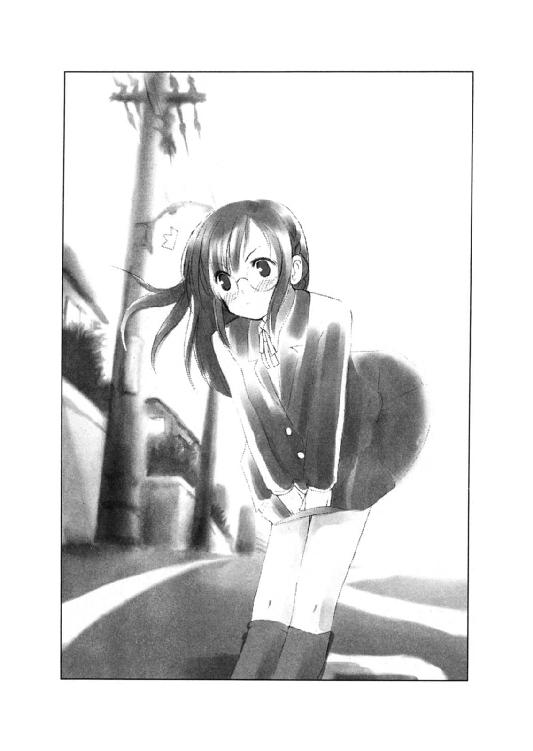
「事故だから仕方ないですよね」
自分を納得させるための言葉だろうか。質問というよりは独り言のように聞えた。
心なしか秋葉の歩く速さがましているような気がした。それに気づくと正吾はなんとなく、秋葉に親近感を覚えた。
──彼女は恥ずかしくて逃げるように足を速めたんじゃないだろうか？
不謹慎な考え方だったが、そう思うと正吾は自分が悩んでいることがバカバカしい感じがしてきた。
この一年半ほどの間でこんなに秋葉と話したことも、親近感を覚えたこともなかった。それを考えれば、たとえ今は自分のために誰も泣いてくれなくても、きっと大丈夫なんだろうと思えてきた。
白い下着のおかげだ、とだけ思うと、なんだかみっともない話のようだが、それはそれでそうなんだから仕方がない。そんな考えも正吾の心を軽くするのに、不思議と貢献したようだった。
「なに、にやにやしてんの、ショーゴ？」
背中をバチンッと叩かれた。この容赦のない挨拶をする人間を、正吾は一人しか知らず、それはつまり新たに現れたのがその人物に違いないということであった。
真鶴千尋。短い黒髪のボーイッシュな雰囲気の少女だった。走って追いかけてきたのか少し息が上がっているようだった。
千尋は、小学校の頃は遊び仲間の中に必ず一人はいそうな、あまり女を意識させないタイプの少女だった。そういう意味ではどこにでもいるタイプなのだが、彼女の場合、そのまま高校生になっているという辺りが少し変わっていた。決してスタイルが悪かったり、発育不良ということもないのだが、色気というのをまるで感じさせない。そんなところが正吾としては気がおけないで助かってはいるのだが、本人はどう考えているのか正吾としてはちょっと心配せずにはおれなかった。
「朝から勘弁してくれよ。背中にアザができるだろ？」
正吾は言葉のわりには、あんまり悪い気はしていなかった。痛みと彼女の挨拶のおかげで、よどんだ自分の気持ちが吹き飛んだように思えたからだ。
しかし当の千尋の方はそんなこと何にも気にしてはいなさそうだ。正吾の言い分など無視して、秋葉の方を見ている。
「なんか、意外なツーショットかも」
千尋に言われるまでもなく、意外なツーショットである。正吾はもちろん、そして秋葉の方もきっとそう思っているに違いなかった。
「ねえ、写真撮っていい？」
千尋は返答など待つ気がないらしく、左肩にいつもかけているバッグの中からカメラをとりだした。黒と銀色のパーツで構成されている少し、いやかなり古い型のカメラだ。ＯＭ─10と呼ばれるもう二十年以上も前のモデル。デジカメ全盛の時代に、一眼レフのマニュアル操作のカメラを持ち歩いているのは、千尋が新聞部なんて部活動をしているからだ。学園新聞を発行することに熱心なその部活の構成員は何かと写真を撮るのが好きらしく、新入生には型は古いが基本をマスターするには大変向いているというそのカメラを貸しだしているらしい。
「ね、撮っていいよね？」
「あのなあ......」
呆れて正吾は突っ込もうとするが、千尋はもう撮る気満々らしい。少なくとも今更、正吾の反論など聞く耳を持っていなそうな態度をアリアリと見せていた。
「もう少し近づいてくれるかな。仲良く歩いてるところを撮りたいんだけど」
「......どうして？」
「いや、意外なツーショットなんでせっかくだから」
千尋はあいも変わらずマイペースで二人に注文をつけている。しかし正吾も秋葉もそれに応えようとはしてくれないのに気づいたらしい。
「しょうがないなあ。このことは私の胸にしまっておいてあげる」
そう言うと、千尋はカメラをしまった。
「別に秘密にするようなことじゃないですから」
秋葉が千尋に話しかけると、千尋は急に目を輝かせた。
「ということは、二人がつきあっていることはもう世間に公表していい──つまり、学校新聞で発表してもいいってこと？」
「それ以前につきあってもないんだって......」
千尋の無駄な盛り上がりに水を差すように正吾は呟いた。
なんだかもう本格的にさっきまで落ち込んでいたことなど忘れてしまった。そういう意味では千尋の登場は彼にとっての幸運だったのかもしれない。
しかし──。
「ふーん。そうなの乃木坂さん？」
千尋は正吾の言い分など興味なさそうに、秋葉に話題を振る。
正吾はそれを見ていて、ふと一年くらい前のことを思い出した。
中三の文化祭の時。正吾と秋葉のいたクラスは全体的にその準備をやる気がなかった。それでも委員長で責任感もある秋葉は一人真面目に残って準備をしていた。それが本当に連日続いたので、正吾はそれに気づき彼女の手伝いを始めたのだ。
と言っても、黙々と作業をするだけ。会話らしい会話もなかった。でもクラスメイトはそうは思うはずもなく、二人ができているんだとかなんだとか言ってきた。
正吾は手伝わないだけならともかく、そんなことを言うクラスメイトに反感を覚えて暴れそうになった。でも、秋葉はそれを止めて、また作業に戻った。
言っても言わなくても、どうせ何か言うなら、作業をした方がいいと思ったらしい。正吾はそれにならって沈黙を守った。秋葉が真面目に頑張っているのに、自分だけ暴れるのは恰好悪いと思ったのだ。
（......乃木坂さんはあの時のこと、どう思ってたんだろうな。もう忘れてんのかな？）
今の千尋の無責任な言葉や態度が当時のクラスメイトに重なって見えた。それはきっと秋葉にとってもそうなんじゃないかと、正吾はなんとなく思う。
それでちょっと気に病んだ。千尋に悪気は全然ない。正吾にはそれがわかっているから、自分が言われるのは気にならない。
でも、秋葉はどうなのだろう？──そう思って彼女を見ても、その顔には何も表情は浮かんで見えなかった。
「たまたま今日は登校が一緒になっただけです」
事務的な態度で秋葉が答えるのが聞えた。
「そうか......つまんないの」
本当にがっかりしたという表情で千尋は呟くと、そのまま三人はゆっくりと歩き始めた。だが、黙っていられないのか、すぐに千尋が口を開く。
「そうだ、そうだ。今週の日曜日、ショーゴは暇？」
急に自分の方に話題が戻ってきて正吾は驚く。
「日曜日？ 特に予定はないけど」
「そりゃそうだよね。ショーゴが日曜日に一緒に遊びに行く相手なんかいないよね」
「あのなあ......」
「で、まあ恥ずかしながら、私も相手がいないのでつきあって欲しい場所があるんだ」
「まさかデートの誘いか？」
冗談めかして正吾が尋ねる。仲がいいと言っても正吾と千尋の関係はそんな色っぽいものではない。デートの誘いであるわけがないことは重々承知していた。
「全然違うよ。ちょっと取材に行きたい場所があってさ」
「取材ねえ。だったら行かない」
「......なんだよ、それ。ぶー！ ぶー！」
千尋は不満そうに口をとがらせると、じたばたと暴れるという形容が似合う動きを始めた。両腕をぶんぶんと振り回してドタドタとその場で足を踏みならす。
「千尋の言う取材ってなんかろくでもないところなんだろ？」
「......そんなことない。ちゃんとしたデートスポットだよ」
「だったら、彼氏とでも行けばいいだろ？」
「いたらショーゴになんか頼むわけないじゃん」
千尋はさらに不機嫌そうに目を釣り上げる。
「じゃあ、貴博を誘えば？」
「そんなことしたら、市ケ谷先輩にナニ言われるかわからないじゃん」
「......そうなのかな？ だってデートじゃないんだろ？」
「そりゃ、そうだけど」
「それに取材なら新聞部の連中で行けばいいじゃないの？」
「新聞部の人たちは他の取材にいくの。みんな、ショーゴと違って忙しいんだよ」
「なんだと？」
暇なのは事実なのだが、というか事実だからこそ、正吾はカチンと来た。思わず千尋をにらみつける。
「あの......喧嘩しないでくれませんか？」
そんな状況に割って入ったのは秋葉だった。いつもの冷静な表情のまま、二人を止めるために発した言葉は逆に迫力があった。
「別に、こんなのいつものことだから。喧嘩なんてもんじゃないんだ、ね、ショーゴ？」
底知れぬ恐怖を感じたのか千尋は急に弱腰になってそんなことを言った。千尋はそれから正吾と肩を組む。なにやら友情を示そうと考えたらしい。
「あ、うん。そうそう」
正吾も千尋にならって、同意するように肩を組みあった。
「俺たち、ほら、喧嘩友達だから」
「うん、そうなんだ。さっきのも実は言ってみれば前座。本当はこの後、『しゃあねえなあ、そこまで言うならつきあってやるよ』ってショーゴが言って終わるっていう予定だったんだ。これ、本当」
正吾はちゃっかり自分の提案を受けさせている千尋にツッコミたい気持ちもあったが、ここで仲たがいをするとまた怒られそうなので、この場は賛同することにする。
「そうなんだ。ちょっと傍目には喧嘩しているみたいに見えたかもしれないけど......」
「ならいいんですけど」
秋葉は正吾の必死の言い訳に割り込む形でそう呟くと、また学校へと歩き始めた。もう校舎が柵ごしに見える場所まで来ていた。校門はまだ遠いので入れないのだが。
（ねえ、ショーゴ──）
千尋は秋葉が何を考えているのかわからず、不安げに正吾の方を見て小声で尋ねた。
（乃木坂さん、まだ怒ってるのかな？）
（......よくわかんないけど、そんな気がする）
（なんで？）
（俺が知るかよ。お前がなんか写真とか撮ろうとしたからじゃないのか？）
（もしかして、実は乃木坂さん、ショーゴのこと好きなんじゃないの？）
（どこをどうしたら、そうなるんだよ）
（いや、私たちの関係を誤解して嫉妬しているとか）
（......ありえない）
（そうか。そりゃ、そうだよね。ショーゴみたいな頭悪そうなヤツを乃木坂さんみたいな人が好きになるわけないか）
（......あのなあ）
二人が肩を組んだままボソボソと自分の話をしているのが気になったらしい。秋葉は振り向いて、二人の顔をじっと見つめて呟いた。
「本当に仲がいいんですね」
怒っていると顔にも声にも出していないが、間違いなく怒っているに違いない。正吾と千尋は戦慄を憶えて、お互いに顔を見合った。気づくと、肩を組んでいるくらいだから当たり前だが、随分と近い距離にいた。
二人はそれに気づいて慌てて離れる。
で、千尋は秋葉の機嫌をとろうと話しかけた。
「乃木坂さんは、日曜日は暇？」
「......私は取材には付き合いませんよ」
秋葉は歩いたまま振り返りもせずにそう答えた。
──きっと怒っている
千尋と秋葉のやりとりを見るにつけ、正吾はその確信を深めた。
「じゃあデートならどうかな？」
嫌な雰囲気を壊そうと思って正吾がそんなことを口にした。しかし言う端から後悔することになる。千尋と秋葉の怒りの視線が突き刺さるのを感じた。
「じょ、冗談だって」
慌ててフォローしようとするが、これを期にと思ったのか千尋が向こう側についた。
「冗談でも言っていいことと悪いことがあるでしょ！ ね、乃木坂さん」
「え、ええ」
「まったくショーゴはデリカシーがないんだから。ね、乃木坂さん」
「そ、そうね」
そんな調子で、千尋は秋葉を味方につける形で正吾を攻めまくる。
「だいたい、デートの誘いじゃないから断るってことからして間違ってるのよ。数少ないショーゴの友達が頼んでるんだから、素直に受けるべきじゃない？ ね、乃木坂さんもそう思うでしょ？」
「え、えっと......確かに友達は大事にした方がいいと思います」
「ほら、乃木坂さんもこう言ってることだし、日曜日は私と一緒に取材ってことでいいよね？ どうせ出かけなければ家でゲームやっているだけなんでしょ」
調子づいて千尋がそんなことを言う。正吾は困ったなと思って視界の端に見つけた影を無意識に追いかけた。
もう学校はすぐそばだった。彼が追いかけた影は学校の敷地と自分を仕切る緑の色の網の向こうにいた男女二人だ。
背の高い美男美女のカップル。それはよく見ると赤井貴博と、そしてその彼女の市ケ谷一美だった。
金色に抜いた少し長い髪と高校一年生にしてはかなり背が高くて細身だががっしりとした体格の貴博が、ポニーテールの一美の後ろを少し苛立った顔をして歩いていた。二人はなにやらただならぬ雰囲気を感じさせ、そのまま西の方にある体育館の裏の方に歩いていく。
「......なんだろ？」
正吾はふと夢の中で二人の像を見つけたことを思い出して、もしかして関係あるんじゃないかと思って不安を憶えた。
あの夢の中で、見た一美がなぜか下着姿だったのを正吾は思い出した。
──何か事件が起こるのかもしれない
そしてそれをはっきりと意識した瞬間、走り始めていた。方向的にはまったく逆だったが、校門はそっちにしかないので仕方がなかった。体育館は校門から入ると、校舎の裏側に位置しているからだ。
「ショーゴ、どうしたの？」
彼の行動に驚いて千尋が尋ねた。
「ちょっと貴博が事件に巻き込まれるような気がするんだ」
振り返りながらそのまま走って正吾は答える。千尋がそれを聞いて、一言呟く声が聞えた。
「人の事情に首をツッコむのはショーゴの悪い癖だと思うぞ」
その言葉に正吾は、ちょっと意外な気持ちがした。自分がそんな人間だと思われていたとは、その時まで知らなかったからだ。
○
学校の横。緑色のネットが張られたところを走りながら、正吾は貴博と一美のことを考えていた。
夢の中で聞かされた事故の話が本当なら、一美がその中心人物である可能性は決して否定できなかった。彼女が一人だけ、下着姿だったのは決して偶然だったとは思えない。
正吾はすでに登校を始めている生徒たちを追い抜きながら、校門を通り過ぎ、それでも彼らとは違う方へと走った。グランドの左手に見える校舎、昇降口の方ではなく、そのまま直進して体育館の方へ。
グランドでは陸上部が朝練の最中だった。体育館からも何か気合いを入れた号令が聞えてくる。バレー部か何かだろうか？ 正吾はそれを聞きながら、それでも貴博たちが歩いていた場所を探すように走った。
二人はやはり体育館の裏にいるようだった。
「別れる？ なんで？」
それを確認する前に、正吾はそんな言葉を聞いた。走って来たのに、突然、それを聞いて足が止まってしまう。なんとなくこれ以上進めない雰囲気を感じたからかもしれない。
「なんで、別れないといけないわけ？」
貴博の声だ。明らかな怒りと当惑が感じとれる。声からして、どうやら目の前の角を曲がった辺り、ここからは体育館のせいで死角になっている場所で二人は話しているらしい。
（別れ話だったのか......）
正吾は貴博の一言で、わざわざ人のいなさそうなところに移動しようとしていた理由がわかってしまう。そうと知っていれば追いかけない方が良かったとしか言い様がない状況だ。このまま追いかけたことに気づかれないように去った方がいいだろう──そう考えている間に、次の言葉が聞えてくる。
「なんでも何もないでしょ──」
一美の声らしい。正吾は一美と話したことはないので、確信はないが、二人だけだったと思うし内容からして間違いない。
「あなたのこと好きじゃなくなった。それだけ」
感情を押し殺したような声だった。もう少し別れ話というのは感情的なものかと思っていたので、正吾は少し意外な気がした。
「へえ、そうですか。じゃあ、別れようぜ」
貴博の方がよっぽど感情的な印象を受けた。
「そうしましょう」
一美の声はかなり冷静だ。
「なんなんだよ。お前の方から付き合ってくれっていったくせに」
小さな声が聞えた瞬間、角から貴博が歩いてくるのが見えた。茶色を通り越して、金色にも見える色を抜いた少し長い髪。細身ですらっとしたシルエットがそれが貴博だと語っていた。
「ん？」
正吾が固まっているのに貴博が気づいたらしい。貴博もそれでどうしたものかと思って一瞬固まった。
「なんだよ、立ち聞きかよ。趣味が悪いぜ」
それでも貴博はへらへらした笑みを浮かべて、通りすがる時に彼の肩をたたいて去ろうとする。そんな態度に正吾は、ふと安心する自分に気づいた。
──いつもの通りの貴博だ
そう思えた。
で、正吾は去ろうとする貴博に振り返って話しかけた。
「さっき登校中に、ただならぬ気配で貴博がこっちに歩いてくるのが見えたから」
とるに足らない言い訳というか状況説明のつもりだった。しかし意外にも貴博はその言葉に過剰な反応を示した。
「見えたから、不安になって助けに来た？」
「......まあ」
「へえ。お前が俺のことをそんなに真面目に心配してくれているとは知らなかったよ」
貴博の言葉は内容に比して刺々しい印象を受けた。さっきの別れ話の時の口調に戻っている、そんな気がした。
「悪いけどさ、俺はお前のことを友達とか思ってないからさ、そんなに真剣に心配してくれなくていいんだぜ」
「......そっか。それは、ごめん」
正吾は正直、その時の貴博が怖いと思った。だから思わず謝っていた。
心配して駆けつけたのに、それを責められ、自分が謝ることになるなんて想像すらしてなかった。
「ま、これに懲りたら、あんまり他人の事情に首をつっこむのはやめるんだな」
貴博は最後にそう言って釘をさすと、スタスタと歩き去る。それで正吾は取り残される形になってしまう。急いで追いかけるわけにもいかない。
正吾はどうしたらいいかわからず黙って立っていた。
確かにそんなに仲のいい友達だとは思ってはいなかったが、そこまで言われなければいけない理由が思いつかない。
貴博の意外な一面を見たような気がした。
「お互いに黙っておくってことで了解してくれる？」
正吾に後ろから声をかけてきたのは一美だった。正吾は反射的に振りむいて、彼女の顔を見てしまう。
やはり改めてみると一美は美人だった。整った顔立ちだけでなく、立ち振舞いにもそれを感じさせていた。髪は真っ黒で長く、それを後ろでポニーテールに結んでおり、活発な印象を受ける。顔立ちだけでなく、その体も女性的な雰囲気を多分に感じさせる。一美は二年生のはずなので、千尋とは一歳しか変わらない。だが、その違いはあきらかだった。そして背もかなり高かった。演劇部でヒロインをつとめるだけあって堂々としており背筋を伸ばしているので、なおのこと大きく見えるのかもしれない。
「あ、えっと」
思わず見とれてしまい、彼女が何を言ったのか忘れてしまうところだった。
「お互い別れ話を聞かれたから黙ってましょうってことでいい？」
一美は改めて正吾に確認をとった。
「はい。別に人に話すようなことじゃないですから」
意志の強さを感じさせる視線に射ぬかれて、正吾はそんなことを答えていた。
友達の別れ話を話して楽しむような趣味はない。わざわざ確認されるまでもなく、他人に言うつもりなどなかった。
一美はそれで納得したのか、そのままその場を去ろうとする。それに気づいて慌てて、正吾は彼女に話しかけた。
「先輩！」
「なに？」
一美は呼び止められても不満そうな顔はしなかった。静かに振り返るとショックを受けてしょげている正吾の方を優しい視線で見ていた。
「先輩は随分大人ですね。俺と一歳しか違わないとはとても思えないです」
一美の視線の意味に気づいて、正吾は自然とそんなことを口にした。
「どういう意味？」
一美が少し笑みを浮かべたように見えた。自分が子供だと思われたんだろうと正吾は思う。
「......別れ話の後なのに随分、冷静じゃないですか」
「ああ、そういう意味ね」
また一美が笑った。今度は正吾の方を見て笑ったわけではないらしい。
「てっきり新手のセクハラかと思ったわ」
冗談か本気かわからないが、一美がそんなことを呟いた。そしてそれに正吾が何か言う前に彼女はそのまま言葉を続けた。
「そうね。でも、自分ではもっと大人かと思っていたの。笑っちゃうわね」
どういう意味なのかはわからなかった。ただ、今度は寂しそうに彼女が笑ったので、正吾はドキリとしてしまった。
「......すみません」
「別に気にしないでいいのよ。バカなのは私の方だから」
一美はそう言うともう話すことはないと思ったのか話題を切り上げた。
そしてそれを追いかけるのもどうかと思ったので、彼女がいなくなるのを待って正吾は教室に戻ることにした。
途中、校舎の時計を見たら八時二十分。始業時間まであと十分という時間だった。
○
どうも今日はかなり情緒不安定だ。躁鬱の間で激しく自分の感情が揺れ動いているのがはっきりと自覚できた。
「まいったな......」
のんびり歩いてきたせいか、昇降口には遅刻しそうで慌てている生徒でいっぱいだった。もちろん正吾もその一人のはずだが、彼は遅刻するかどうかということは気にしてはいなかった。そんな余裕などなかったのかもしれない。
それでも周りに急かされるように、彼は昇降口を離れると階段を昇った。この学校の校舎は四階建てで、一年生は三階に教室がある。ちなみに二階が二年生、一階が三年生の教室になっている。四階は視聴覚室や書道室と言った特別教室があり、そこに部室を持っている部活もある。
三階に昇り終えると廊下の白い壁が妙に綺麗なのが、いまさらのように気になった。綺麗好きな理事長が夏休みの間に塗り直させたという話を思い出す。それを確認するように遠近法の見本にでもなりそうな長く続く廊下をじっと見る。廊下の途中にある階段から次々に生徒たちが昇ってきては教室へと歩く姿が見えた。知り合いの顔は見えない。正吾の知り合いはもう教室で待っているのかもしれない。
と、そんなことを考えている間に予鈴がなったので、正吾は一番西側に位置する一年一組の教室へと入った。自分の椅子に座って、机に肩ひじをついてぼんやりとする。
教室にはもうかなりの数の生徒が集まっていた。始業時間の五分前。その予鈴がなったのだから、まあ当然だ。しかしそれでも、すでに一時間目の授業の準備をしている人間がいるかと言えば皆無だった。入学したばかりの春頃ならともかく、もう夏休みが明けて一か月。生徒たちはみんなもう学校の生活に安心してしまっているかのようだった。
教室の前の方で、いつもの通りにヘラヘラと笑っている貴博の姿が見えた。千尋と元気に暴れている。
さっき自分を非難した貴博の姿はそこにはない。あの場面に遭遇した自分の記憶は噓だったのだろうか？──そんな考えすら浮かんだ。
夢といい、朝のニュースの一件以来、自分の頭が少しおかしくなっているのではないかと疑いたくなった。落ち込んでいる気持ちがその背中を押しているようにも感じる。
「本当に大丈夫なんですか？」
正吾はそれが秋葉の声だとすぐに理解した。どうやら傍から見てもわかるほど、自分は弱っているらしい、と正吾は気づく。
「いや、そんなに心配されるようなことじゃないんだけど」
弱々しく答えながら、素直に彼女の言う通りにした方がいいと思ってしまう。
「でも、朝から調子が悪いみたいですし」
「......実は両親が今留守でさ」
その言葉には秋葉は驚いた様子を見せた。
「どうして？」
「旅行中なんだ。結婚二十周年旅行。だから家に帰っても一人で寝るだけだから、かえって調子を崩すかもしれない」
「そうなんですか。ごめんなさい、変なこと言ってしまって......」
なんだか妙に秋葉は落ち込んだ様子を見せた。
「ごめんなさい。そうとは知らずに」
「いや、別に、そんな気にすることじゃ」
正吾はあまりに秋葉が沈んだ様子を見せるので、勝手に自分の家庭が本当はもっと複雑な状況なんだと思われたんじゃないかと考えてしまった。
あまり言いたくないその複雑な状況を誤魔化すために、両親が旅行中なんて噓をついたのじゃないかと──そう考えると、確かにかなり説得力のない説明だった。
「あれ......？」
どう言えばいいかと思って、また視線を外した時、ふと正吾は教壇の端の方に置いてある小さな花瓶に目がいった。
白くて少し小さい陶器の花瓶。少し枯れかかった白い花がさしてある。別に珍しいものではない。昨日もその前もそこにあったはずだった。しかし正吾はそれが気になって目が離せなくなる。
──あの花瓶、割れたんじゃなかったっけ？
そんな疑問が浮かんだ。その瞬間、貴博の肘があたって花瓶が傾いた。
「あ......」
貴博が自分の行動に気づいて声を上げるのが聞え、続いて千尋も同じく声を上げた。しかし正吾の意識は花瓶の方に集中していた。
花瓶がぐらりと揺れて、それが止まろうとする。しかし花は止まらなかった。花瓶の傾きを追い抜くように花が花瓶の縁にあたる。それで花瓶はまたその傾く速度をあげた。それからは、もう止まる気配を見せず、花瓶は机のへりから転がるように落ちる。花が今度は空気抵抗を受けて落ちるのを拒んでいるように抵抗する。しかし花瓶は横になったまま、床に落ちて砕ける。その破片が飛び散って、後からゆっくりと柔らかい曲線を描いた水も飛びあがった。
それがゆっくりと目の前で展開したと思ったところで、急に割れる音が聞えて時間が元の通りに戻る。
「......青山クン？」
驚いている自分に話しかける声が聞えた。もちろんさっきまで話していた秋葉の声だ。気づいて彼女の顔を見ると、当惑した表情を浮かべている。よそ見をしてる正吾をいぶかしんでいるというよりは、正吾が見ている前で花瓶が割れた事実に驚いた。そんな風にも見えた。
「あ、ごめん」
しかし正吾はそれに気づかないふりをして、よそ見をしていたことを詫びる。
「いえ、別に謝ることじゃないですから」
秋葉はそんな正吾の態度に特に言及せず、そう言ってその場を離れて、教室の後ろの角にある掃除用具入れへと向かった。
「ごめんなさい。私、割れた花瓶を片づけるから」
秋葉は何も謝ることなどないのに正吾にそう言うと、そのまままた教室の前の方へと移動する。ぼーっとしていた正吾はその意味を理解して、慌てて彼女を追いかけた。
「あ、手伝うよ」
しかし秋葉はちょっと立ち止まって振り返ってこんなことを言うだけだった。
「これは私の仕事ですから気にしないでください」
正吾は確かにその通りだろうと思ったが、少し落ち込んだ。
今の集中力を欠いた自分では確かにケガでもしてかえって彼女を心配させる結果にもなりかねないとは思った。しかしそれにしたって──そう思った時だった。
「だってさ、正吾」
笑いながら貴博が正吾の方を見て言った。
「ここは委員長に任せておけばいいんだよ」
「......お前が割ったんだから、お前が片づけろよ」
ムッとした気持ちで正吾は貴博に反論する。しかし貴博は笑ったままだ。
「俺は不器用だから邪魔になるだけだよ。でしょ、委員長さん？」
「私が片づけますから気にしないでください」
秋葉はそれだけ言うと、黙々と片づけを続ける。貴博はそんな秋葉の言葉に眉を寄せて彼女をじっとみると、それからわざとらしくお手上げだというポーズをとって見せた。
正吾もそんな秋葉を見ていて、昔から彼女はそうだったと理解しながらも、貴博の気持ちもわかるような気がしてしまう。
「乃木坂さんは何を考えてるんだろう？」
調子の悪い自分を心配してくれる彼女と、黙々と片づけをする彼女がどうしても同じ人間に思えず、正吾は今日もう何度目かわからないため息をついてしまった。
○
午前中の授業のことは正吾の記憶には何も残らなかった。色々と悩むことがあって授業どころではなかったせいだ。しかし気分が滅入っている時は、暇な時間ほど危険なものはない。昼休みになる頃にはもう十分以上に彼は落ち込んでいた。
このまま教室にいると、また秋葉に心配されると思った正吾は、のそのそと教室を出て校舎の中を歩き回ることにした。
三階はなんとなく騒がしくて、正吾は階段を昇る。四階は教室がない。基本的に昼食の時間は誰もいないはずの場所だった。
「こういう時は屋上に行くのかな」
気分転換をしようと思ってそんなことを口にしたが、考えてみるまでもなく、屋上には出られないようにカギがかかっているはずである。この学校では以前、自殺者が出てから封鎖されているのだ。
「......まいったな」
高校に入ったばかりの時、なんでそんなことをするんだろうと感じていたのを思い出す。でも今はあんまり笑えない気持ちだった。
「どういうつもりなわけ？ 私が気に入らないなら、そうはっきり言いなさいよ」
聞き覚えのある声が彼の耳に届いた。一美の声だ。正吾が階段を昇ったところで、彼女の顔が見えた。一美は階段に一番近いところにある特別教室、美術室の前で、正吾から見て手前にいる他の女生徒と言い争っている。美術室は演劇部の部室でもあるから、二人は演劇部の人間であろうと正吾は何となく思う。
（見たことあるような気がするな......）
言い争っている相手は正吾の知らない人間だった。顔はよく見えないが、その雰囲気には見覚えはあった。夢の中で女の子に囲まれていた背の高い女生徒だ。腰まである長い髪。そして悠然とした身のこなし。おそらく演劇部の先輩か何かなのだろうと考えたのを思い出す。
「なぜ、私があなたにそんな剣幕で怒られないといけないのかしら？」
とぼけているというよりは本気でそういうことを言われるのが不満だと彼女の言葉が語っていた。
（なんかあの人、言い争ってばかりいるような......）
正吾はなんとなく気になって、一美たちから見えない位置で様子を窺うことにする。ちょうど階段を昇ったところに踊り場があって、防犯シャッターが閉まった時のための扉がある。その後ろに彼は隠れた。それで扉を少しだけ開けて、二人の様子を窺う。
冷静に観察すると、一美がドレスを持っているのがわかった。ところどころハサミで切り刻まれており、それがこの喧嘩の原因だろうとすぐに察しがついた。
「お姉ちゃん」
か細い声が聞えてきて、正吾は一美の後ろで彼女の剣幕に脅える少女の存在に気づいた。あの夢の中でも一美の側にいた女の子だ。長い髪をリボンで巻いていて内気そうな雰囲気を感じさせる少女だった。
「あなたじゃなかったら、この双海が作ったドレスを誰がこんな風にするのよ！」
一美の怒りの言葉が、正吾の考えを肯定した。一美の側にいる少女は双海という名前らしい。一美と双海。姉妹らしい名前のような気がした。
「少なくとも私じゃないわ。そんなことする理由がないもの。そもそもそれを管理しているのは衣装係のあなたの妹さんでしょう？」
一美が激しているのに比して、怒りを向けられている彼女は態度は少なくとも冷静だった。朝は一美が大人に見えたが、今は怒られている先輩の方がずっと大人に見える。
「それはそうだけど」
「管理しているはずのものなんだから、ズタズタにされたのは妹さんの責任でしょう？ それにちゃんと管理していたなら、ズタズタにできたのは一人......でしょ？」
そう言いながら彼女の視線が双海を捕らえたらしい。それに気づいて双海はびくりとして一美の後ろに隠れる。
「景子先輩、それはどういう意味ですか？」
一美はそのことにさらに怒りを募らせたようだった。しかし景子は悪びれることもなく一美を睨み返す。
「いずれにせよ、あなたの大事な妹さんが悪いってことよ」
「あなたって人はっ！」
一美は思わず景子を打とうとしたようだった。しかし後ろで双海がそれを止めたらしいことが、正吾にはわかった。
「妹さんは、ちゃんとわかっているみたいね。あなたもすぐカッとなるのはやめて、妹さんのように落ち着いた方がいいんじゃなくって？」
「......どこまでトボけるつもりよ」
一美は双海のおかげで少し冷静さを取り戻した様子を見せる。それでも景子に対する怒りの視線は少しも和らぐことはなく、むしろ強くなっていた。
「トボけてなんかないわ。私はドレスを刻んだりしない。私はあなたよりもずっと演劇に真剣なつもりよ。どんな理由があったって、演劇に必要な衣装をボロボロにしたりするはずはないでしょ？」
「......どうだか」
一美はどんなに言われても疑いのまなざしで景子を睨みつけた。景子はそんな一美がバカみたいだと思っているのか、口元に笑みさえ浮かべる余裕を見せていた。
そんな様子を窺っている正吾にいきなり誰かが話しかけてきた。
「なにやってんの、ショーゴ」
「うわっ」
思わずうろたえるが相手が自分に対する呼び方から千尋とわかるとすぐに落ち着いた。
「いや、その......」
「ふーん。あの人たちが言い争っているのを見ていたわけだ」
千尋は興味深そうに正吾が見ていた方を確認すると、自分も正吾にならって彼女たちから見えない場所に隠れて様子を窺い始めた。
「人の事情に首をツッコむのはショーゴの悪い癖だと思うぞ」
千尋は自分のことは棚にあげてそんなことを呟く。正吾は反論する言葉もなく、それでも千尋と一緒に一美たちの方を覗く。
「ショーゴは知らないと思うけど、あの人たちは演劇部の人たちだよ」
「......それくらいは予想がついてる」
「ふーん。じゃあ、手前のおっきな人が演劇部の女帝と言われる広尾景子ってのは？」
「それは初耳」
「奥のが市ケ谷姉妹。怒っているのが姉の一美で、後ろに隠れているのが双海」
「それは知っている」
「ふーん。で、なんで喧嘩してるの？」
「どうも、演劇部で使う衣装がハサミでズタズタに切り裂かれてたらしい」
「で、市ケ谷先輩は広尾先輩が犯人だと思って責めていると」
「そういうことらしい」
千尋はそれから不意に何かを思い出そうとしているらしく、急に黙り込んだ。
「そう言えば、広尾先輩と市ケ谷先輩の間で、今度の文化祭の時のヒロインをどっちにするのか争ってたんだ」
「でも、結局は市ケ谷先輩になった？」
「うん。だって広尾先輩もう三年だし。受験生は勉強しないと」
「それはそうだ」
そうは言っても、状況はそんなに簡単ではないという気がする。どうも様子を窺うかぎり、景子は演劇に出る気満々だ。演劇部の女帝とか言われる彼女のことだから、ヒロイン役をやるつもりだったに違いない。そうでなければ、良い先輩として部から離れててもいい時期だ。
「市ケ谷先輩は、ヒロイン役を取られて広尾先輩が自分を恨んでいると思ってるのかな。だからあの服をズタズタにしたのは、広尾先輩だと思った」
「ま、そんなとこだろうね」
千尋はもう正吾から聞けることは聞いたと思ったのか、一美たちの方に興味を移したらしい。相変わらずマイペースな態度だ。
しかし言い争いは終わったようだった。
「いずれにせよ、なんの証拠もないのに私を攻撃するのはやめてくれる？」
景子はそう言ってのけると、そのまま一美の横を抜けて廊下の奥の方に歩いていってしまった。それを見ると千尋は短く舌打ちをして、正吾の方に向き直る。
「けっこう、あっさり片づいちゃったな」
「......殴り合いにでもなった方がよかったとか言いたげだな」
「わかってらっしゃる」
千尋はそう言ってニコニコ笑うと、市ケ谷姉妹が話し始めたのに気づいて、またそっちに興味を戻した。
「ごめんなさい、お姉ちゃん」
やっと聞えるような小さな声は双海のものだった。外見同様、その話し方も弱々しい。
「双海が謝ることじゃないよ。お姉ちゃんこそ、ゴメンね」
一美が双海の頭をなでた。姉妹だが身長差はかなりあった。二十センチくらいだろうか？
「怖い目にあわせちゃったね」
一美はそう言いながら少しかがんで双海の目の高さに合わせた。
「お姉ちゃんは大丈夫。応援してくれる双海のためにも、こんなつまらない妨害には負けないから」
「......うん」
双海はちょっと間を置いてうなずいた。そしてそれからゆっくりと口を開いた。
「でも、お姉ちゃん」
「何？」
「お姉ちゃんが頑張るのは双海も嬉しいけど、それでケガをしたりするなら、そんなの双海は嫌だよ」
自分で言いながら恥ずかしいのか双海の視線が泳いだ。一美はそんな双海をじっと見つめてそれに答える。
「大丈夫。私はケガなんかしない。だって双海が応援してくれてるんだから」
「そうだね」
少し不安そうな顔を双海が見せていたが、一美は彼女の髪をくしゃくしゃにするほどに強く頭をなでて、それを吹き飛ばしてみせた。
「このドレスは二人で一緒に直そうね。今度はこんなことにならないように、ちゃんと隠しておこう」
一美がそう言ってにっこり笑うと、双海もそれにつられるように笑った。そして見ていた正吾も自然と笑っていた。
「......なに笑ってるの？」
そんな正吾に千尋は疑念の目を向けていた。
「いい姉妹だなあ、と思って」
「ふーん。なんか落ち込んでるのかと思ってたけど、大した余裕だね」
千尋の言葉に正吾はぐっと言葉につまった。なんとも反論しづらい言葉だった。
「ま、いっか。元気になったなら、それでいいよ」
千尋はそう言うとにっこりと笑って一美たちに見つからないうちに逃げ出すつもりになったらしい。
「心配してくれてたのかよ」
「そりゃ、ショーゴは私の数少ない友達だしね」
「ありがと」
正吾の口から素直に感謝の言葉が出た。しかし千尋はあんまり嬉しくなさそうな態度を見せる。
「な、なに言ってんの。ショーゴにお礼なんか言われたら気持ち悪くなるから止めて」
「なんだよ......」
「と・に・か・く・！」
千尋はしきり直そうとしたのか強い語調で正吾に告げる。
「私や貴博はともかく、乃木坂さんにまで心配されると困るんだ」
「......なんで？」
「そりゃ、あの人は委員長だから」
「なんだ、そりゃ」
正吾は千尋がどう説明していいかわからず言葉を選んでいるのを見て笑ってしまう。
「笑わないでよ。真剣に考えてるんだから。だから、なんていうか、要するに、私たちは友達なんだからさ、相談するなら私たちにしてくれってこと」
「了解」
正吾はそう言うと千尋の肩をポンと叩いて、階段を下りて教室に戻ろうとする。そんな彼の耳に千尋の言葉が届く。
「でも、本当、元気になってよかったな」
思わず正吾が振り返る。
「そんなに心配してたのかよ？」
「まあね」
千尋はそう言ってスカートの裾の両端を手で摑んだ。
「最悪、女の武器も使おうと思ってたんだけど、必要なかったのはちょっと残念」
「......どうも本当は心配してなかったんじゃないかって気がする」
「あ、そういうこと言うと、ちょっと傷ついちゃうぞ」
千尋はわざとらしく口をとがらせると、これまたわざとらしく指を差して正吾に抗議する。
「だって今朝、正吾、乃木坂さんのパンツ見て元気になってたじゃない」
「見てたのか!?」
「二人が歩いてるのを見て追いかけてる時に偶然」
「偶然ねえ......」
なんとなく千尋の言う偶然は信じがたい気がした。
「だから、パンツ見せたら元気になるかな～って」
千尋はそう言ってつかんでいた裾を上に少しだけ引っ張る。彼女のあまりメリハリのない細い足がさっきより上まで見えた。普段からそんなにスカートが長い方でもないこともあって、彼女の腿のかなりの部分が見える形になる。
「勘弁してくれよ」
「純白じゃないとダメ？」
「......そういうことじゃなくて。俺たちは友達なんだろう？」
「ん、そうだね──」
千尋はそう言いながらスカートの裾を離すそぶりは見せない。
「でも、彼氏彼女の関係になるってのアリかもよ」
千尋が意地悪な笑みを浮かべて上目遣いに正吾を見た。
どういうつもりなのか、普段からわからない千尋の目が、今は本当に怪しい光を放って見えた。
二人の間にしばしの沈黙が流れる。
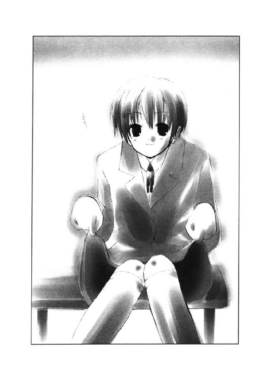
で、その沈黙を破ったのは、正吾の方だった。
「......想像しがたい」
失礼な物言いかもしれないが、正吾の正直な気持ちだった。
千尋のことが嫌いなわけではないし、貴博と違って彼女がいるわけでもない。しかしだからと言って、千尋と付き合うという気は正吾にはなかった。
「実は私も」
千尋はそう言ってにぱっと笑うとスカートの裾を離した。
「私のパンツは、まだ見ぬ彼氏様のためにとっておくか──」
千尋はそう言うと、正吾を追い抜くように階段を下り始めた。すれ違い様、千尋は耳元で呟いた。
「ちなみに今日のパンツは白と青のストライプだよ」
で、正吾はちょっと不覚にも想像してしまい、鼻の穴を大きくしてしまう。
「あはは。想像してやんの、だっさー！」
それが面白かったらしく千尋は笑いながら、教室へと走っていった。
「......変なヤツ」
そうは言いながら正吾は自分が笑っているのに気づいた。その笑い方が、いつもの自分のような気がして正吾はちょっと安心した自分に気づいた。
○
午後の授業中、正吾は走っていた。不本意ながら猛烈に、である。
体育の授業は十月に入り、サッカーの試合をやることになっていた。女子はと言えば、体育館でバレーをやっているらしい。男子生徒たちは寒い空の下でグランドを駆け回させられることに多少の不満を持ちながら、それでも対抗戦の方を消化している。
正吾はＦＷとしての役割を与えられていた。と言っても、チーム編成上、さほどおいしい位置づけでもなかった。彼が組まされたチームは、貴博がＭＦとなり、彼が事実上、ゲームを支配していたからだ。
「また来るぞ！」
いまいましそうに相手チームのディフェンダーが声をあげた。
開始十五分。一人ですでに二点を取った貴博を止めようと、二人のディフェンダーが彼を囲む。しかし貴博は速度を変えず、そのままあっさりと抜き去った。
「きゃああ！」
体育館から校庭側の扉を開け外を見ていた女子の歓声が聞こえる。貴博はその容姿だけでなく、女生徒の注目の的だった。頭も良く成績もいい方だし、今の活躍からもわかるように運動神経も優れていた。もっとも体育会系のノリが嫌いなので、部活には入っておらず、スタミナがないという欠点は抱えてはいたが。
「そのまま、シュートしてぇ！」
貴博の活躍を期待する声がまた聞えた。チーム編成上、試合ができない女の子たちのようだ。貴博の活躍に気づいて、こっちをずっと観察している。どうやら同じチームらしく千尋と秋葉の姿もあった。千尋はワクワクしてこっちを見ていて、秋葉はそれにさほど興味もなく付き合わされているかのように見えた。
「正吾！」
貴博が自分の名前を呼ぶ声が聞えて、正吾は試合中であることを思い出す。貴博に集中したマークの隙間のスペースに正吾は、ちょうど駆け込むところだった。
──待った方がいい
不意にそんなことを彼の心が告げた。
そのままゴールまで駆けようとしたが、正吾がふと少しだけスピードを落とす。そこに貴博のパスが飛ぶ──が、少しコースが逸れた。ミスキックだ。十分にならされてない校庭の凹凸のせいで、貴博のパスは狙ったところより手前に曲がって飛んだ。
「うし」
しかし正吾はそれを柔らかく左足で受け止めると、そのまま前に転がした。そしてワンバウンドさせると、そのまま逆の右でゴールに蹴りこむ。
キーパーが予想外の短いパスに戸惑っているその横を、ボールが飛ぶ。そしてそのままゴールのネットを揺らした。
「ナイスシュート！」
正吾がシュートの行く末を見守っていた後ろから、貴博が声をかけてきた。
「......自分でも驚くくらいバッチリ決まったかな」
「俺も驚きだね。まるで俺がパスをミスるのわかってたみたいな動きだった」
貴博が正吾の肩に手を置きながら笑った。いつものヘラヘラした風な笑顔だ。
正吾はと言えば、貴博の言葉に少し驚いていた。
ミスるのをわかっていたみたいな動き──それをまさに自分がしたのだという事実に正吾は気づいたのだ。
「もしかしたら、知ってたのかもしれない」
正吾はそう呟く。貴博がそれを聞いて、おかしそうに笑う。そんな貴博の顔には今朝、ケンカした時にさした影のようなものはどこにもなかった。
「何言ってんだよ。お前って変なヤツだな」
正吾は自分を笑う貴博を見ながら、それでも気分は悪くなかった。
「そういえば、なんでパスなんか出したんだよ。あのまま入れられただろ？」
正吾はハットトリックを狙って来るかと思ってもいたので、そんなことを尋ねる。だが貴博はそんなことにはさほど興味がないと言った印象だった。
「まあ、な。でももう走るのしんどかったし......」
「たし？」
「今朝の件でね。ちょっとお前にも花を持たせた方がいいと思ってたんだよ」
貴博はそれだけ言うと、正吾の方からプイと視線を外して、試合に集中する気配を見せた。
「それって、どういう意味？」
正吾はイマイチ貴博の意図がわからず尋ねる。
「そんなの自分で考えろよ」
だが貴博は頭をかいて、そう言うだけで教えてはくれなかった。ただ彼の苦笑いには悪意は感じられない。今朝の腹だたしげな、そして冷たい雰囲気はなく、なんとなく正吾は、いつもの貴博に戻ったように感じて、少しホッとした気分になった。
それから二人は試合に意識を戻し、あと二点ほど協力してとった。
○
「しっかし、本当に遠慮ってもんがないよな......」
放課後、正吾は珍しく新聞部に顔を出していた。自分を励まそうとしてくれた千尋への感謝の意味をこめて、彼女の手伝いを買って出たからだ。
ちょうど部屋の掃除をするというような話になったので、正吾の登場に部員たちは感謝しながらも、あっさりとこき使うことに決めたらしい。次から次に荷物を正吾に運ばせる。
千尋のマイペースな性格はこの部活のせいで鍛えられたものかもしれない──と正吾は密かに思ったりもしてみた。
「もうあんなチャンス絶対ないと思うんだよね」
で、千尋はと言えば棚を整理しながら、近づいてきた正吾にサッカーの試合の話をしてくる。
千尋は正吾がシュートを決めた瞬間を写真に撮れなかったことに不満たらたららしい。口をとがらせて、正吾に話しかけている。
「やっぱり体育の授業中だからってカメラ持ってちゃいけないって変だと思わない？」
「いや、普通は持ってないと思うけど......」
千尋はなんだか自分のことのように、正吾のシュートを喜んでくれているようだ。それだけにそれを写真に撮れなかったことが悔しくて仕方がないらしい。
「あ、ショーゴも私の敵？ せっかく正吾の恰好いいシュートを撮りそこねて悔しがってあげてるのに」
「敵とか味方とか、そういうわけじゃないけどさ」
正吾は千尋の真剣さにたじろぎながら、荷物を持ってその場を離れようとする。しかし千尋の言葉がそんな彼を引き止める。
「そうそう。やっぱり乃木坂さん、ショーゴのこと好きかも」
「だから、どうしてそうなるんだよ？」
もちろん自分のことを女の子が好きだったら、そう考えると正吾だって悪い気持ちはしない。だがどうも千尋の話は自分をからかっているだけのように聞えた。
「ショーゴがシュートした後、乃木坂さんしばらくぼーっとしてたんだもん。あれは絶対に恋する女の目だった」
千尋が嬉しそうにちょっと視線を上げて、その時のことを思い出す。正吾はそんな彼女の顔を見て、少し眉を寄せる。
「......どこまで本当なんだか」
「ウソついてどうするわけ？ そんなウソをついて、私になんの得がある？」
千尋は自分の話をマジメに聞かないのに、少し不満な態度を見せる。
「千尋って自分はジャーナリストだとか言ってるけど、真実を追い求めているというよりは、面白い方がいいとか思っている気がする」
「それはそうかもしれないけど......でも、今度のは本当」
「全然信用できない。第一、俺と乃木坂さんは去年もクラス一緒だったけど、そんな雰囲気じゃなかった。これは絶対に言いきれる」
「じゃあ、あの瞬間に惚れたってことでどう？ 貴博からパスを受けて、バシッとシュート！ 乃木坂さん以外の娘も惚れたね、あれは絶対に」
「じゃあ、千尋はどうなんだよ。お前も見てたから、俺に惚れたのか？」
正吾はもちろんそんなことはないだろうと思って、千尋の方を睨むように尋ねる。そして千尋はそれにあっさりとこう答えた。
「私がショーゴに惚れるわけないじゃん」
「じゃあ、乃木坂さんも惚れるわけない。俺はそう思う」
正吾はそれで話題を切り上げると、そのまま掃除に戻る。千尋はそれでもまだ言いたいことがあるらしく食い下がろうとしたが、先輩に捕まり正吾を追いかけることはできなかった。
掃除が終わったところで、千尋は彼を五時半頃には解放してくれた。それでも二時間は軽くこき使われていたわけではあるが。
「私はまだやることあるから」
千尋は爽やかにそう答えて、部室から正吾を追いだした。
正吾はそれでもなんか嫌な気分ではなく、むしろ晴れ晴れしい気持ちだった。
今は暇な時間の方が怖い。こき使われて目が回りそうだったおかげで、余計な心配をせずにすんで随分と自分が助けられた気がする。
そう考えると一人でこれから家まで帰ることの方が不安を感じる。
「......誰か残ってないかな」
寂しいから一緒に帰ろうなんて言うのも恥ずかしい。しかし、今の正吾はそういう気持ちなのだから素直にそう言うのも悪くないと思っていた。
だが、あいにく、教室には誰も残っていなかった。
「仕方ない、一人で帰るか」
薄暗い教室がこんなに不気味なものだと正吾は初めて知った気がする。考えてみれば、正吾は帰宅部で、こんな時間まで学校に残っていたことはなかった。たとえあったとしても、それは他の皆も残っている理由があった時だけだろう。だから、誰もいない夜の教室を見た憶えがなかったのだ。
教室を出ると正面に開いている窓に気づいた。他は全部閉まっており、そこだけ開いている。帰り際、外の空気でも吸おうとして開けたまま、誰かが帰ってしまったのだろうか？ 正吾はあまり考えもなしに、そこに近づくとそこを閉めようと手を伸ばした。
「おや？」
外は薄暗い天気の悪い空模様だ。空以外に、ここから見えるのは裏山ぐらいだ。学校の北側はあまり何もないし、山のせいで視界も悪い。建物らしい建物は、学校の裏手にある三河神社。それもここから直接は見えず、そこへと続く道と階段が見えるぐらいだった。
その三河神社ぐらいしか行けそうにない道を一人の少女が歩いていた。走っているというほどのことはないが、急いでいるようにも見える。
遠くて良くわからない。しかし服装はこの学校の制服だった。スカートをはいているから女性に間違いなかった。背は高く、髪は跳ねるようなポニーテールのようだ。
「市ケ谷先輩？」
それはおそらく市ケ谷一美だった。千尋がまだ残って部活動に勤しんでいることからわかるが、まだ熱心な人間なら部活をしている時間帯だ。
ヒロイン役に抜擢され、妹のために頑張ると言っていた彼女がさっさと部活を切り上げるなんてことがあるだろうか？
ざわざわと妙な胸騒ぎがする。しかも一美は普段なら誰も近寄らない三河神社の方に向かっている。
「......なんで、あんな方に行くんだ？」
正吾は急いで窓を閉めると、彼女を追いかけることにした。そんな彼の脳裏に千尋の言葉が蘇る。
──人の事情に首をツッコむのはショーゴの悪い癖だと思うぞ
そうなのかもしれない。朝もそのせいで貴博に睨まれる結果になっている。
正吾はそれでも、結局、首をつっこんでしまうのが自分だと納得した。
それで自分が死ぬ結果になるということももちろん考えた。でも、それでも自分は一美を追いかけるべきだと彼は思う。
一美が殺されるのに巻き込まれるのから逃げたら、それは一美を見殺しにするってことだ──それが正吾にはわかっていた。
だから、彼は一美を追いかけた。それが危険だとわかっているはずだったにもかかわらず。
追いかけている間に、空はすっかり暗くなっていた。
神社へと向かうこの通りは本当に人が少ない。学校の陰になってしまったせいで、前より誰も通らなくなったとかそんな話も思い出される。
誰も近寄らないから逆に物騒な話も聞かないのだが、それでもあまり一人で歩くのに気分のいい場所ではなかった。
「あれ？」
一美の姿は見つからなかった。教室を出て、すぐに彼女の姿を見かけたが、階段を下りたり、校門から出たりして随分と時間が経っていたせいだ。
神社しかこっちにはないと思っていたが、それでもそこへ続く長い階段以外にも細い通りが続いているのが見えた。その通りは静かに緩く下っていて、この先に何があるのか正吾もよく知らなかった。
これが夏服のままだったら、少し暗くてももう少し見やすかったかもしれない。しかし今は光に反射しにくい紺色のブレザーを自分も一美も着ていた。
「この先って何があったっけ？」
確かにこのままこの通りを歩いて行ったという可能性はあるが、この辺りにくるなら、神社以外に目印のようなものはないだろうと正吾は考えた。
「やっぱり、この上だろうな」
しかしとにかくここの階段の長さは半端ではない。昇るからには覚悟を決めなければならなかった。全部で三百段以上ある由緒のある石段なのだ。もしここじゃなかったら、かなり一美から遠ざかってしまうことになるし、体力もかなり消耗してしまう。
ふと目に何かが飛び込んできた。雨だ。不意にポツリポツリと雨が降りだし始めた。まだ大降りにはなりそうにないが、それでも不愉快──というか不安な気持ちに正吾はなる。
「まいったな」
傘は持っていない。このまま降り続けたらと思うとまた不安材料が増えたのを感じる。
「青山クン？」
空を見て様子を窺っていた正吾。その背後に誰かが近づいてきていた。
聞き覚えのある声だった。悪意は感じられない。むしろ自分を心配しているような優しさが感じられた。
「乃木坂さん？」
声の主は秋葉だった。意外なところで意外な人物に出会った。そんな感じもしたが、なんとなく正吾はそれを普通に受け止めていた。まるでこうなることがわかっていたかのように。
「どうして、ここに？」
二人は一緒に同じ疑問を口にした。
「俺は、ちょっと気になることがあって......。乃木坂さんは？」
「わ、私は......家がこの近所で。その帰る途中、さっき青山クンが真剣な顔で走っているのが見えたから、心配になって」
「そんなに信用ないかな」
正吾はそう言って苦笑すると、もう迷うのは止めて階段を昇ることに決める。雨が強くなる前に片づけたいと言う気もしていた。
「実は俺もさっき市ケ谷先輩がこっちに歩いてるのを見て心配になって追いかけてきたんだけどね」
「市ケ谷先輩？」
「演劇部の人で、貴博の元彼女だった人。市ケ谷一美って名前」
「聞いたことはありますけど......」
秋葉はそれをなんで正吾が追いかけているのかはわかりかねるという感じだった。
「きっと、この上の神社に行ったんだと思うんで様子を見てくる」
質問に答える時間をなくすためにもさっそく行動を開始することにする。あまり詳しい説明をする時間も意味もないように思えたからだ。
「私も一緒に行きます」
だが、秋葉はそうは思ってはくれなかったようだ。正吾は秋葉のそんな言葉に驚かされて、思わず立ち止まってしまう。
「乃木坂さんが？」
「ダメですか？」
言われて正吾はどう答えるべきか迷った。はっきりとした理由がない以上、彼女を説得するのは難しそうだった。
危険だから置いていく──なんて言っても、彼女は持ち前の責任感でそれを突っぱねるかもしれない。口論になれば、秋葉に勝てそうもない。
それに置いていっても、なんとなく秋葉は勝手に追いかけてくるかもしれないという不安もあった。こんな薄暗い場所に自分を追いかけてくるのだから。
それに一人だと心細いというのも事実だった。正吾は彼女の申し出を受けることにする。
「ダメ......と言いたいところだけど、一緒の方が安全かもしれないし」
正吾はそう言うと階段を昇り始めた。秋葉も黙ってそれについてくる。
「乃木坂さん、カバン持とうか？」
途中で秋葉が重たそうなカバンを持っているのに気づいて、正吾がそんな提案をした。秋葉はしばらく悩んだ後、体力のなさに自覚があるのか素直に正吾にカバンを渡した。
「でも開けて中を見たりしないでください」
「......そんなヤツに見える？」
「見えませんけど。念のためです」
秋葉は正吾が気分を害したのかとちょっと不安になったらしい。珍しく弱々しい口調でそんな風に呟いていた。
そしておそらく半分くらい昇った時だった。雨もかなり強くなってきていた。辺りの音も雨のせいで遮断され、雨音くらいしか聞えなかったせいかもしれない。
「キャアアアアアア！」
長い悲鳴のような声が正吾の耳に届いた。
「青山クン、聞えました？」
秋葉も空耳かと思ったらしい。しかし正吾が神妙な顔でうなずくのを見て、自分が聞いた悲鳴が本物だと理解した様子を見せた。
「市ケ谷先輩の声だったかもしれない」
口に出してから、言ってはいけないことを言ってしまったと正吾は気づく。本当にそうなんだろうと言う気がしてきて不安になったからだ。
「かもしれませんね」
それは聞いていただけの秋葉も同じだったらしい。それで不安なのか、彼女は先に昇っている正吾の手首を摑んだ。
「どうしたらいいだろう」
正吾は一度立ち止まって、そう呟いた。秋葉への質問ともとれたが単なる独り言だった。もし本当にこの階段の上で、一美が危機に陥っているなら、急いで助けに行った方がいい。しかしそれは同時に危機に首を突っ込むことである。
正吾一人なら迷わずそれをしたかもしれない。しかし今は秋葉がいる。彼女をおいていくというのも考えたが、それはそれで危険な気がした。
「急いだ方がいいと思う」
秋葉がはっきりとそう言うのが聞えた。不安や迷いはそこにはなかった。いつもの冷静な口調が今は心強く感じられる。
「そうしよう」
正吾は秋葉がついてこれるくらいの速さで階段を駆け昇り始めた。
辺りはかなり暗い。神社の境内は、祭りの時でもなければ灯がつかない。
まだ六時過ぎくらいのはずだが、もうすっかり夜になっていた。
「大丈夫？」
途中でペースが速すぎたのに気づいて正吾が秋葉に尋ねた。
「大丈夫です」
秋葉は気丈にそう答えるとそのままペースを上げた。それでも息が上がっている。足がもつれているというほどのことはなかったが、疲れているのは明らかだった。
「カバン持ってもらっているし、足でまといにはなりませんから」
「了解」
そんな秋葉の態度に、正吾はそれでも少しだけペースを抑えると、そのまま階段を昇り続けることにする。
（急ぎすぎるのは考えものだしな）
あまり息が上がるのも何かあった時に対処できなくなる危険があった。正吾はそれくらいの考えができるくらいは冷静だった。
だが、それでも彼はしっかりと忘れていた。
自分が三回同じ日を繰り返せるのは、三人の人間が死んだからだということを......。
階段を昇りきると、すぐに一美がどこに行ったかは、おおよそわかった。
木に囲まれている数戸の建物の中に、一つだけ灯がついている。町内会の打ち合わせにでも使う小さな──と言っても十畳くらいはある──会議室のようなものだった。正吾も小さな時、夏祭りの前に、そこですいかを食べさせてもらった記憶がある。
「あそこだな」
普段なら灯がついている時期ではない。この神社自体、祭りの季節以外はあまり人は近寄らない。この灯は、誰かが勝手に入って利用しているのだろうと正吾は思った。
なんのために？──正吾はさっきの悲鳴を思い出して、また不安になる。
あれから悲鳴は聞えない。悲鳴は一度きりだ。最初は遠かったので、はっきりとは聞えなかったけど、あれからこの場所に近づいてきた。雨が強くなってはいるが、悲鳴が上がったのなら、よりはっきりと聞えてもおかしくない。
だが、聞えなかった。つまり悲鳴をあげたその人物は、一度しかあげる必要がなかったか、もしくはもうあげようがなくなっているということだ。
不穏な気配を感じるにつれ、正吾の考えは後者の方に支配される。
もうあの悲鳴の主は死んでいるか、それに限りなく近い状況なのだろう──正吾はそれ以外に考えることはできなかった。
「ねえ、青山クン」
正吾の手首をつかむ秋葉の手が震えていた。秋葉も正吾と似たようなことを考えているのだろう。もしくはもっと冷静にリアルに考えているかもしれない。
「何？」
「あまり言いたくはないんですけど、その......」
「市ケ谷先輩はもう死んでいるから、逃げた方がいい？」
秋葉の言葉を読んで、正吾はそう尋ね返す。正吾はそう言いながら意外に冷静な自分に気づいた。むしろ普段は冷静な秋葉の方がその言葉に動揺しているのが見て取れた。
「逃げた方がいいかもしれない。でも逃げなければ助けられるかもしれない」
正吾は秋葉の答えを待たず、そう告げると秋葉の手を上から握った。
「死にかけているだけなら、今しか助けるチャンスはないと思う」
「そうですけど」
「乃木坂さんを危ない目にあわせたくないけど、その辺りに犯人が潜んでいる危険もあるから、一緒に来て欲しい」
秋葉はその言葉にびくりと震えた。確かに危険性は十分にあった。それに気づいていたはずだが考えないようにしていたらしい。
「やっぱり青山クンは男の子なんですね」
秋葉はそれからゆっくりした口調でそんなことを言った。少し落ち着きを取り戻したらしい。
「え？」
「普段は頼りなげに見えても、こういう時は私なんかよりずっとしっかりしてる」
「褒め言葉なのかな？」
正吾は苦笑いを浮かべる。秋葉もその一言にうろたえて、逆に緊張がほぐれたようだった。震えが止まるのが正吾にもわかった。
「褒め言葉......のつもり、です」
「そういうことにしておくよ」
正吾はなんだか誇らしげな気持ちになった。しっかり者の秋葉に頼りにされたのが少し嬉しかったのだ。
正吾はそれで覚悟を決めるとその建物の入口へと歩いた。慎重にゆっくりと、周りの気配を探りながら。
「............」
妙に静かだった。
犯人は息を潜めているのだろうか？ それにしたって静か過ぎる──正吾はそれに気づいて、あまり相手は大勢ではないだろうと感じた。
実際問題、あまり人通りがないこの場所に大勢の人間で移動すれば目立ってしまう。
階段の下に車とかも止まっていなかった。犯人も歩いてこの場所に来たはずだ。
「............」
扉の前までくると正吾は秋葉の方を確認して、目線で合図を送る。秋葉はそれにゆっくりとうなずいた。
そしてそれを確認して正吾は扉を開けようとした。しかし、手が止まった。
中を覗く前に、正吾はそこに何があるのかわかるような気がしていた。
下着姿の一美の姿を思い出す。どうして、彼女はあの世界で下着姿だったのか。
──その答えはこの中にある
正吾の心が冷静に告げる。
考えてもわからなかったのではないのかもしれない。思い出すまいと心がそれを考えるのを拒否していたのかもしれない。
今となっては答えは明らかだ。
一美は下着姿で殺されたのだ。だから、あの世界で彼女はあんな姿をしていたのだ。
──じゃあ、あのブレザーに開いていた穴はなんだ？
自分で考えた疑問にぞっとした。背筋が寒くなる。腕も震えた。
答えはもう知っている。でも、それが答えとは思いたくなかった。それでも、彼の心がまた静かに告げる。
──刺された時に開いた穴だ
そうだ。そうに決まっている。これから自分は死ぬのだ。あの穴を開けられ、そこから血を流して......。
「青山クン？」
開けられず止まった手に秋葉の手が重なっていた。正吾はそれで我に返ると、そんな恐ろしい想像を振り払おうとした。
「大丈夫」
それに成功したかどうか確認せず、正吾はそう言ってノブをひねって扉を押した。それだけで扉はあっけないほど簡単に開いた。その中の光景と、自分は何にも関係ないとでも主張しているかのように。
「きゃああああああ！」
今度の悲鳴は秋葉のものだった。正吾も思わず声を上げるところだった。
目の前で最悪の想像が実現していた。
市ケ谷一美が殺されていた。しかも下着姿で。脱いだ制服があたりに散乱している。
彼女は木目の床の上に倒れていた。腹部からだろうか、大量の血が流れている。そのおびただしい量から言って、もう絶命しているのは間違いなかった。人の体のどこにそんなに血があるのだろうというぐらいの量の血だった。床が血を吸い込まない材質だったから、余計に多く見えたのかもしれない。それにしても......。
「見ない方がいい」
秋葉の目を覆いながら、正吾は目を逸らす気にはなれなかった。
──どこかに犯人が潜んでいるかもしれない
正吾はそれを気にしていた。一美の死体を直視することはできないが、それでも室内を見渡すことは必要だった。
「なんだ、あれ？」
一美から流れた血の上に紙切れが浮いていた。大きさからして、どうも写真のようだった。白く見えるのは裏返っているせいだ。よく見ると一枚だけでなく何枚もあった。
「どうしたんです？」
正吾の言葉を聞いていた秋葉が尋ねてきた。
「写真が落ちている。ここからじゃなんの写真かはわからないけど」
「写真？」
「犯人が残した手がかりかな」
正吾は写真に犯人の手がかりがあるかもしれないとも思った。でも一美がもう絶命しているならこれ以上は深追いしない方がいいという考えも浮かんだ。
「気になるけど、やっぱり帰ろう」
正吾は静かに呟いた。秋葉は意外に感じたようだが、しばらくするとゆっくりとうなずいて同意を示した。
そして正吾が振り返ってその場を離れようとした時だった。
「青山クン！」
自分の方を振り返った秋葉が驚きの声を上げたのが聞えた。
彼女のメガネに部屋から差し込む光が映っているのが見え、そこに不気味な影が差すのも見えた。
「ぐっ！」
しかし次の瞬間、正吾は横に突き飛ばされていた。秋葉が彼を摑んでいなかった方の手で押したのだ。横殴りの衝撃を受けて、正吾の意識は数秒の間、何が起こっているのか理解するのを拒んだ。
それでも目の前で現実は展開する。
「乃木坂さんっ！」
部屋に隠れていた犯人が襲いかかってきたのだ。正吾が誰もいないと油断して帰るところを見計らって。
だが、その目論見は秋葉のせいで達成できなかった。正吾は犯人の手の届かない場所へと押し出されたのだ。
「ウワアアア！」
しかし秋葉は犯人の攻撃可能距離に残ったままだった。秋葉は逃げようとして方向転換を図る。でも、犯人の方が素早かった。
不気味に光る凶器が彼女を襲った。それも何度も。──それが数秒遅れで正吾の頭に理解された現実だった。
「うわあああ！」
正吾は混乱しながらも、秋葉に襲いかかった犯人を突き飛ばした。
無我夢中だった。さっきまでの冷静さはどこにもなかった。
頭の片隅で、所詮は他人事だと思っていたのだと気づいて自己嫌悪する自分がいた。
それでも頭の残りの部分は、秋葉をつれてこの場から逃げろと彼の体に伝えている。だから彼はその通りに行動した。
考えてなんかいられなかった。何も。考える余裕はない。
どこをどう逃げたかもよくわからなかった。気づけば、落ち葉を踏んで木々の中を逃げていた。神社を囲む雑木林の中なのだろう。
「......青山クン」
弱々しく秋葉が自分の名前を呼ぶのが聞えて、正吾は我に返った。
随分と逃げたらしい。それに気づいて正吾は立ち止まってから、辺りを見回した。
「乃木坂さん、大丈夫？」
「大丈夫」
秋葉はそう言うと膝を折って倒れた。慌てて助け起こすが、正吾はその時気づいた。秋葉の手が血で濡れていた。手だけではない。上着とスカートも血で濡れていた。
顔を見るといつのまにかメガネをかけてなかった。それに気づいて、黒い不安が正吾を襲った。あの夢の中で、秋葉の像がメガネをかけてなかったのを思い出したのだ。
「乃木坂さん？」
心配になって呼んでみた。
「なに？」
弱いが返事が返ってくる。でも、それ以上の言葉は続かない。
暗くてよくわからないが、相当な重傷なのだろうと正吾は理解した。
「もしかして走って逃げたせい？」
それはきっとそうだろうと思った。秋葉のケガの加減を考えず、やみくもに逃げたのは明らかに正吾の失策だった。それはきっと秋葉もわかっているはず。だが、秋葉はそれを肯定するようなことは言わなかった。
「逃げなければ、きっとあの場で殺されてました。私も、青山クンも」
「でも、逃げなければ、乃木坂さんのケガは......」
正吾は自分が震えているのに気づいた。
自分が殺されるのは、実はあまり怖くなかった。自分が死ぬことになれば、やり直すチャンスが与えられると彼は知っていたからだ。
だから甘く考えていた。他の人が死ぬということに真剣ではなかったのだ。三人死ぬと聞いていたのに、自分の不安を紛らわすために秋葉を巻き込んだのは、明らかに真剣に考えていなかったからだ。
「青山クン、何度も言えないから一度だけでしっかり聞いて欲しいの」
秋葉は逆に冷静に言葉を続けていた。
「なに？」
正吾は聞き返しながら、もう彼女の言う言葉がわかっていた。
彼は思い出しつつあった。自分が確かにすでに一回、十五歳の歳の十月一日を体験しているという事実を。
だからわかっていた。乃木坂秋葉がこの後、どうなってしまうのかを。
「私はもう死にます。だから私をおいて逃げてください」
それでも正吾はその言葉に衝撃を受けた。いやわかっているからこそ、それを聞きたくなかったのかもしれない。
このまま彼女は死ぬことになる。そんな信じたくない記憶を正吾は否定して欲しかったのだ。
「......できない。できるわけないだろっ！」
正吾は感情的になって秋葉の言葉を否定する。しかし秋葉は毅然とした表情を崩さなかった。それが葉のすき間からさす月明かりのおかげで正吾に見えた。
「大きな声を出さないで。犯人に気づかれます」
「どうして乃木坂さんは......そんなに冷静なんだ？ 俺には理解できないよ」
正吾は自分が情けなくて涙が出て来た。自分を心配してくれた彼女を助けることもできない自分が許せなかった。
しかもそれは一度目ではない。二度目なのだ。それがわかった。
「青山クンには助かって欲しいから」
その言葉も二度目だった。
死にかけながらも自分を助けようとしてくれる彼女。それを失ったショックが自分が最初の十月一日を憶えてなかった理由なのだと正吾は静かに理解した。
トーカの言葉が思い出される。
──正吾クンは死んだ日のことを覚えていたくないと思っていたから、忘れてしまったというわけ
てっきり自分が死んだショックで忘れているのだろうと思っていた。
でも事実はそうではなかったのだ。
自分のせいで乃木坂秋葉を巻き込んで殺してしまったことを忘れたかったのだ。
「ごめん。全部俺のせいなんだ」
正吾はそれを理解するともう涙が止まらなかった。
「どうして、青山クンが泣くんです？」
「どうしてって？」
「私のこと、青山クンは好きなんですか？」
「わからないよ、そんなこと」
「好きじゃないなら、泣く理由はないです」
秋葉のクールな言葉に正吾は少し驚いた。
──これは最初の時には聞かなかった言葉だ
正吾の頭の冷静な部分がそう考えていた。
「私、青山クンに泣いて欲しいとは思ってない──」
正吾が何も言わないのに気づいて、秋葉は言葉を続ける。しかしその言葉も次第に弱っていくのが正吾にはわかった。
「だから、泣いたりしないで」
「でも......」
そう言いながら正吾は彼女の言葉にしたがって泣くのをやめようと努力はしていた。空いた手でこぼれる涙を拭う。でも涙は止まらなかった。止まるはずはなかった。
「ねえ、青山クン？」
「......なに？」
「一つ、お願いがあるんですけど聞いてくれますか？」
正吾は次第に遅くなる彼女の口の動きをじっと追っていた。それで慌ててうなずく。
「どんな願いでも聞くよ」
必死にうなずいた。何度も何度も。それがおかしかったのか、秋葉は静かに笑みを浮かべた。それはこれから言うつもりの願いがバカバカしかったからかもしれなかった。
「死ぬ前に一度でいいからキスがしたいの」
「......キス？」
正吾は秋葉の奇妙なお願いに当惑してしまった。これから死のうとしている彼女の口から出た言葉にしては、あまりに真剣味がない願いのような気がする。
「私のこと好きじゃないから無理ですか？」
秋葉はやっぱり笑っているように見えた。
「......僕でいいなら、その願いを叶えるよ」
正吾はそれを口にしながら、やはりまだ泣きやんではいなかった。涙と暗さで秋葉の顔もはっきりと見えない。
「でも願いを叶えたら死んでしまうって言うなら、俺はそんなの嫌だよ」
どうにもならないところまで来ているのは、十分にわかっていた。こうしている間にも秋葉の心音が弱っているのさえ正吾にはわかった。目があまり見えない分、そういう感覚の方がわかりやすかった。
「じゃあ、もう少し頑張るからキスしてって言えばいい？」
秋葉はもう死ぬのを知っている──正吾はそれに気づいて、もう迷うのも嘆くのも止めた。
「約束だよ、乃木坂さん」
そして正吾は秋葉を抱きしめて、それから彼女の唇に触れた。
「......ありがとう、青山クン」
離れた秋葉の唇がその言葉を告げる。
そして、それを最後に彼女の唇は動かなくなった。動かなくなったのは、唇だけではない。
「乃木坂さん？」
正吾はもうわかっている答えを確認しているだけだった。
触れている体がもうはっきりと伝えている。
もう心臓の鼓動が響いてこない。意識を失ったとかそんな問題ではないのだ。
乃木坂秋葉は死んでしまったのだ。
それは正吾にとっては二度目の体験だった。だからと言って慣れるはずもなかった。
わかっていたとしても、それを冷静に受け止められるほど、正吾の心は静かでも冷たくもなかった。
もう何も答えない彼女を抱きしめて、正吾はまた泣いた。
その泣き声を犯人に聞かれたら見つかってしまうかもしれなかったが、それでも正吾は声を抑えたりはできなかった。
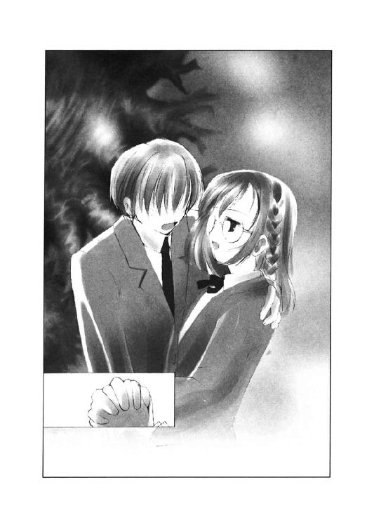
「乃木坂さん......ごめん。俺がちゃんとしてなかったせいで」
そして見つかってしまうなら見つかってしまえと正吾は思った。
そうすれば自分は殺されるだろう。だが殺されればまだチャンスは残っている。
もう二度と秋葉が殺されないような運命に変えるチャンスが──。
「そうだ。まだ二回チャンスがあるんだ」
正吾はもう一回強く乃木坂秋葉を抱きしめると、ゆっくりと離して地面に寝かせる。
「泣いている場合じゃない。俺にはまだできることがあるんだから」
自分に言い聞かせて、正吾は強く立ち上がった。
「乃木坂さん。キミを絶対に助けるよ。例え、俺が何度死ぬことになっても」
正吾はそう言って走り始めた。犯人がいたあの場所、一美が殺されていたあの場所へ。
どう逃げたのかは覚えてなかったが、それでも戻るのは難しいことではなかった。
木々の向こうに会議室の灯が見えたからだ。方向感覚はなくても、そっちに歩いていけばいいのは容易に理解できた。
途中、どこかに犯人が隠れているかもしれない。自分を探しているかもしれない、と彼は考えたが、それが不安につながるということは不思議となかった。
死ぬのは怖くなかった。いや、むしろ望んでさえいたかもしれない。そうすれば、きっとやり直せるはずだと、正吾は思っていた。
灯を目指して歩くと、土が水を吸い込んでグズグズと音を立てるのが聞えた。そんなに大量の雨が降ったわけではなさそうなのに随分と地面が軟らかい。まるで底なし沼に足を踏み入れてしまったような気持ちになって、正吾は止まらず歩き続けた。
ムッとする湿気。そこに葉や植物の香りが混じってつきまとってくるかのようだ。正吾はそんな気分を払うようにさらに足を速める。それでも湿気は追いかけてくる。そんな気分に正吾はさらに駆り立てられて、元の場所へと戻ってきた。
「市ケ谷先輩......」
会議室の中は逃げ出した前と何も変わっていなかった。市ケ谷一美は板ばりの床の上に広がった血の上にうつぶせで寝たままだった。あえて変わったところを見つけるなら、湿気のせいだろうか血の臭いがより強く感じられた。
しかしそれだけだ。正吾は意外に冷静に一美の死体を見ている自分に気づく。秋葉が目の前で死んだせいだろうか、死は怖くても死体は怖くはないらしい。
会議室の入口から見えるところで、一美の死体はうつぶせに倒れていた。
途中、犯人は姿を見せなかった。正吾たちが逃げた方を追いかけて、森の中で迷ったのだろうか？ それとももうこの場を去ったのか？
しかし記憶の中の最初の十月一日では、この場所で正吾は死んでいた。だから、犯人がもう早々に逃げ出したとは思いづらかった。
「写真だよな、やっぱり......」
正吾は側に落ちている写真を拾った。一美の血がべっとりとついていて、何が写っているのか判別しづらい。
「市ケ谷先輩......だよな？」
写真に血が固まっていて全貌を見ることはできなかった。しかし何枚か見るうちに、そこに写っているのは一美だろうと正吾は理解した。
いずれの写真もどうやら下着姿とかそういうものらしい。
「この写真をネタに脅されていたってことかな......」
こんな妙なところに一美がおびき出されたのは、この写真が理由だったのだろうと察しはついた。しかしもしそうなら犯人はなんでちゃんと回収しなかったのだろう？ 正吾はそこに疑問を感じた。
明らかにこれは犯人へと繫がる手がかりだ。こんなものを犯行現場に残す理由はどこにもないはずだ。
「なんでなんだ？」
正吾の疑問の答えはその数秒後にあっけなくわかった。
それはこの部屋を出ようと正吾が扉をくぐった後のことだ。
「ウワアアアアア！」
合成音のような叫び声が聞えると、しばらくして正吾は自分の背中に激痛が走るのを感じた。その場所は夢の中でブレザーに穴が開いてた場所に間違いなかった。
「そうか、犯人は......」
まだ残っていたのだ。現場の片づけはまだしてなかった。それだけだったのだ。
正吾はそのまま力なくうつぶせに地面に倒れた。だがその途中、彼は顔をひねって自分を刺した相手の顔を見ようとする。
悪魔の姿がそこに見えた。
──天使の次は悪魔？
そんな疑問に正吾は半ば呆れてしまった。
そんなことがあるわけはない。悪魔が自分を殺しに来るなんて、そんなことがあるわけがないのだ。
だが自分を見下ろすように、黒い仮面が笑っていた。白い線で形作られた口が不気味に三日月を描いてる。その仮面の下でひらひらした黒い服が動いていた。その動きは何かまとわりつくようであり、服自体が生き物であるかのようにも感じられる。
正吾を刺した凶器が何かは長い袖の下に隠れて見えなかった。凶器に関してわかるのは、自分に十分な傷をおわせるだけの威力があるということだけだった。
「どういう......こと......な......ん......だ？」
何もわからないまま、意識が混濁していく。だがそれでもはっきりとわかったことがある。
──もう立ち上がることはできない
体がもう言うことを聞かなかった。それに気づくと今度は視界が暗くなって、そのまま何も見えなくなる。
そして薄れゆく意識の中、正吾が最後に聞いたのは、今までにないほどの大きな声。目の前の悪魔のあげた悲鳴。正吾にはそれがなぜか泣いているかのように聞えた。
○
「ん？」
正吾が意識を取り戻すと最初に見えたのは白い床。彼はそれで初めてこの世界に来た時のことを思い出した。
彼はうつぶせに白と黒のタイルパターンが敷き詰められた床の上に倒れていた。
それを理解して彼は、少しだけ安心した。
あと二回チャンスがある。それが確かな事実だと理解できたからだ。
「思い出したみたいだね、正吾クン」
今度は起きてうろうろする前に、トーカが現れた。
小学生のような姿をしているが、意外に頭がいいのかもしれない──正吾は起き上がりながらなんとなくそんなことを思った。
「全部思い出した......と思う」
正吾はそれからトーカに向かってはっきりと告げる。
「ゴメン。最初に会ったときは事情がわかってなかったとは言え、色々と失礼なことを言ってたよな」
「別に謝るようなことじゃないよ。事情を理解してくれただけで、私は嬉しいし」
最初に見た時のようにトーカは少しだけ浮かぶと、目の高さを合わせてにっこりと笑って見せた。その顔にどうも今までのは全部営業スマイルか何かだったのではないかと正吾は感じた。
「あと、ありがとう」
「何が？」
「チャンスをくれて」
「そういうのはちゃんと運命を変えてから言うことじゃない？」
トーカは今度は地面に足をつけると、ゆっくりと正吾の周りを歩き始めた。
「それに最初にも言ったけど、間違いを作ってしまったのはこっちが悪いの。むしろ感謝するのはこっちなんだよ」
「でも、俺はトーカに感謝しているから、ありがとうって言うんだ」
「正吾クンはバカみたいに素直なんだね」
子供のようにしか見えないトーカにそんなことを言われると、どうしていいものかという感じだが、正吾は笑うだけだった。
「ダメかな？」
「ううん。ダメじゃない。私はそういうところ好きだよ。うん、すごく大事だと思う、そういう気持ち」
「ありがと」
正吾は屈託のないトーカの笑顔にそう呟くと、真面目な顔をして彼女をじっと見た。
「そろそろ元に戻して欲しいんだけど」
「急いでも急がなくても、戻るのは十月一日だから慌てる必要はないよ」
時間の外にいるからだろうか、やはりトーカの感覚はかなり違うらしい。正吾はなんとなくトーカの言葉にずれを感じた。
「......それはそうなんだけど、今すぐ帰りたい気持ちなんだ」
「それって私と話したくないって意味じゃないよね？」
本気ではないのだろうが不安そうな顔でトーカが尋ねた。正吾は慌ててそれを否定する。
「そういう意味じゃなくて......」
「急いで他の二人を助けたいってことでしょ？」
「わかっているなら聞かなくてもいいと思うんだけど」
「そうだね。でもね、あんまり焦ると大事なことを見落とすかもしれないよ」
トーカはそう言いながら最初の時と同じく指を天に向けてから床を指差した。
「え？」
そしてトーカの意味深な言葉に思わず、疑問符が口から出た。しかしまたしても床が崩れる感覚に襲われた。三角の小さなピースに分かれて白と黒のタイルが巻き上がる。
トーカはまた何か言ったような気はしたが、はっきりとは聞えなかった。だがきっと何か自分を心配して言ってくれたのだろうと思うと、正吾はあまり不安を感じなかった。
正吾くん、頑張ってね──きっと、そんなことを言ったんだろう。正吾がそれだけ考えたところで、彼の意識はこの世界から消え、眠っている朝の彼の元へと飛んだ。
第二章 命に代えても彼女を助けたい
正吾が目を覚ますと時間は六時半だった。寝ぼけて半開きの目でそれを確認する。
──一度目のやり直しの時と同じだ
彼は、それですぐさま起きることにした。一度目は二度寝して酷い目にあったのをしっかりと憶えていたからだ。
「とりあえず朝飯は食べよう」
正吾はそう決心すると、誰もいない薄暗い一階へと移動し、それから朝飯の準備を始めた。メニューは一回目と同じく六つ切りパンだ。ちなみにテレビはつけなかった。集中して考えたいことがあったからだ。
「さて、状況を整理してみよう」
パンがこんがりと焼けた香りを鼻いっぱいに吸い込みながら、正吾は今までの出来事を振り返ることにした。まだ時間は早い。学校に一目散に行ったところで、なんの意味はない。
「まず、誰が市ケ谷先輩を殺したかだけど......それは、まだわからない」
手がかりはあんまりない。
犯人の姿を何度か見かけたというのに、中々に情けない話だった。
はっきりした証拠と言えるのは、あの一美の半裸の写真ぐらいだ。あれを使って一美を脅せた人間。それは一体だれだろうか？
正吾はそれから何人か候補を考えた。
まずは演劇部の関係者。演劇部の関係者には、動機がありそうだった。
特にあの広尾景子。彼女は文化祭でのヒロイン役を巡って一美と争い、負けた。その辺りを根に持っているという可能性は十分考えられる。しかし一美との口論の様子を見ていた限り、どうもかなり冷静なタイプだ。いくらヒロイン役をとられたからといって、殺したりするとは少し考えられなかった。
だが彼女が怪しくないというわけではない。本人はともかく、彼女の関係者の中には彼女ほど冷静ではいられない人間がいたかもしれない。
「たとえば、あの取り囲んでいた像の中の誰かとか」
正吾は夢の中で景子の周りを囲んでいた女の子たちのことを思い出した。あの女の子の中には一美に憎しみを抱いて行動に移すような人間もいるかもしれない。
思えば犯人の恰好は、舞台衣装のような感じだった。いくらなんでも、あれが本物の悪魔だったとは思えない。やはり演劇部の関係者が犯人という線が濃い。
あの一美の半裸写真も関係者なら撮るチャンスはいくらでもあったはずだ。
「でも、なんか変だ」
そこまで考えてから、正吾はなんとなくあの半裸写真から、犯人は男だと考える方が自然だと結論した。女性が好き好んであんな写真を撮るとは思えない。
「まさか......」
正吾は貴博のことを思い出した。
貴博と一美は付き合っていた。少なくとも十月一日の朝までは。そんな貴博になら、彼女の半裸写真を撮るチャンスは何度もあったかもしれない。
でも、どういう理由なのかまではわからないが、二人は別れた。貴博は突然の別れ話を持ちだした一美にかなり腹を立てていたような気もする。
しかしだからといって誘い出して殺したりするだろうか？ 人殺しをする動機としてはいかにも弱いような気がする。
でも──と正吾は思い出す。振られた現場に居あわせた正吾に貴博は普段からは想像もつかない冷たい面を見せた。あれが彼の本性なら、殺すとまでは言わないまでも一美に何か復讐を企てるぐらいは考えるかもしれない。
最初は一美を脅かしてそれで済ませるつもりだったけど、口論になってつい──というぐらいなら十分可能性としては考えられる。一美の強気な性格を考えれば、それが災いしてああいう結果になったというのも、そんなに無理はない気もした。
しかしそんなことを言うと、別に貴博じゃないといけないという理由はあまりない。
例えば、これはまあおよそ考えられないことだが、千尋が犯人という可能性もある。彼女は新聞部だし、何かと写真を撮る癖というか趣味がある。
正吾の知らないところで何かスクープを手に入れて、それをネタに何か交渉するつもりだったが、一美がそれを突っぱねて......。
「いや、やっぱりそれはない」
正吾はあまりにリアリティがないのでその考えを放棄した。
で、冷静に考えてやっぱり今のところ一番怪しいのは演劇部の誰か、しかも広尾景子とその取り巻きたちだろうと結論した。
「犯人の方はこれでいいとして、後は乃木坂さんだな」
正吾はしかし秋葉のことは比較的そんなに難しい問題とは思わなかった。考えてみれば、彼女に心配されるような行動ばかりしたのが原因だったのだから、いつも通り普通に暮らしていればいいはずだ。
せっかく仲良くなれる機会なのにそれを失うのは痛いが、彼女の命には代えられない。仲良くする機会ならいくらでもあるだろうと思った。
「それに、俺だけが死んでしまうって危険もあるからな」
その時、無駄に秋葉と仲良くしているのは避けたいと思っていた。気丈に死んでいった彼女を見てもやっぱり自分と仲良くしていたら、死んだ時、彼女が悲しむだろうと正吾は思っていた。それは儚い願望に過ぎないのかもしれないが、いずれにせよ今日という日に彼女と仲良くした方がいい理由はない。
「よし、そうと決まったら学校に行くか」
正吾は時計を見て随分と長い間、自分が考え事をしていた事実に気づいた。だがそれでも一回目に家を出た時間よりはかなり早い。まだ八時十分前だった。
「この時間なら乃木坂さんと会わないで済むはずだ」
正吾はそう確信して家を出る。
「ん？」
それで、また奇妙な視線を感じた。家の前の通りを歩いていると感じるこの視線。それは一体誰のものなんだろう？ しかし振り返っても、その主らしき人物は見付け出せない。
やり直しの一回目も、謎の視線を感じたのを思い出すが、随分と時間が違うはずだったと気づくだけだった。
「......ということは、違う相手なのかな」
ひょっとしたら犯人かもしれない──そんな考えがまた浮かんだ。
トーカは犯人と自分だけがくり返しの中で変化を作りだせると言っていた。
正吾が作った「少し早く家を出る」という意図的な変化の結果が出るにはまだ早すぎるように思える。ということは、犯人が正吾の動きに気づいて何か手を打とうとしている可能性はある。
それに正吾は向こうが誰か知られたくないと教えるのを拒まれたが、ひょっとすると向こうはすでに正吾がそのくり返しの相棒だと知っているかもしれない。自分は特に聞かれなかったこともあるが、知られたくないと言った覚えがなかった。
そうでなくても、犯人からすれば自分はすでに妙な態度をとっていた可能性はある。向こうは一度目の時点ですでに十分観察するチャンスはあったのだから。
「そう考えると結構、こっちが不利なような気が」
正吾はでも負けるわけにはいかないと思い直して、一路学校を目指した。
○
駅前を過ぎた辺りで、正吾は自分の行動によって結果が変わってきているのを実感した。
「今日の朝練は参加しなくて良かったんですの？」
登校途中に広尾景子とその取り巻きが彼の前を歩いていた。どうやら、彼女たちは電車通学組らしい。彼はその十数人のグループを追いかけることにした。
景子の取り巻きたちがやけに大きなキンキンした声で演劇部の話をしているのが聞えてくる。
「私は練習はちゃんとしてますから、あの娘の自主トレとやらに付き合う必要は感じないわ」
景子の言葉に取り巻きたちがざわざわと何か言いあっているのが、少し離れた正吾から見て取れた。あの娘というのはきっと一美のことだ。
どうやら景子とその取り巻きは、文化祭へ向けて自主トレを始めた一美に対してボイコットをかましているらしい。景子がそれを煽動している、のかどうかはわからないが、ここまで堂堂と敵意を表明しているとなると、やはりあの一団の中に犯人がいるというのが一番真っ当な結論だろう。
「なに、にやにやしてんの、ショーゴ？」
自分の考えに確信を持ったせいだろうか、にやけていたらしい。だがそれを指摘されるよりも、いきなり背中をはたかれたのが痛かった。
もちろん正吾の背中を叩いたのは千尋。彼女以外に正吾にそんなことをする人間はいない。
「勘弁してくれよ、本当」
「なに？ 今日はノリが悪いじゃん。何かあったの？」
「......今日はちょっと事情があって真剣モードなんだよ」
「ふーん」
いかにもそんなことは興味がないと千尋は態度で示すと、正吾が見張っていた連中の方に視線を向けた。
「演劇部の女帝とその取り巻きなんか追跡してどうする気？」
千尋はあっけなく正吾の考えの大半を見抜いたようだった。それを考えると、彼女に協力を依頼するのは悪くないアイデアのような気がした。
千尋はムラッ気はあるが、行動力は正吾よりずっとある方だ。
しかしどう説明すればいいのか、正直わからなかった。素直に言ったら、どう考えても電波系の変なヤツだ。一度目の景子と一美のやりとりを見ていた時の千尋相手ならともかく、今の千尋に言えば何事かと思われるような気がした。
なので、とりあえずは話さないことにする。
「ちょっと気になってね」
「ふーん。ショーゴはああいう派手系の女は嫌いなのかと思ってたけど」
どういう根拠でそう思ったのかはわからないが、千尋の観察眼には驚かされる。
実際、正吾は景子のようなタイプはあんまり好きではなかった。どっちかという地味で大人しい娘の方が好みなのだ。
だが、今はそんなことは論点ではない。
「別にその恋愛とかそういうことじゃないよ」
「じゃあ、実は貴博の彼女に横恋慕しているとか」
「なんで、そうなるんだ？」
まったく筋が見えない。だが千尋には千尋なりの論拠があるらしい。
「最近、貴博の彼女の市ケ谷先輩が色々と妙な事件に巻き込まれているんだよ」
「へえ、それは初耳」
「じゃあ、それを解決して市ケ谷先輩にいいところ見せようとかそういう話でもないと」
「......そういう意味か」
「あれ、そうなの？」
「いや、そうじゃなくて。なんで横恋慕しているという話になるのかと合点がいったってことだよ」
「ふーん。まあ、でもきっと犯人はそう簡単にはわからないと思うよ」
「なんで？」
「実は新聞部でもその件はずっと調べてるんだ。でも犯人は未だ不明」
千尋はそう言って、正吾が聞いたこともないような話を次々に始めた。
一美の周りで事件が起こったのは、やはり彼女がヒロイン役に選ばれてしばらくしてからのことだと言う。
とは言え、それはもう五月の話。もう五か月も前だ。で、その間に千尋が知っているだけでも二十件以上は事件が起こっている。
最初は単なる事故かと思われていたが、途中からは犯人からの脅迫状まで届くようになったという。
内容はまあいずれも大体同じ。
「ヒロインになるのはあきらめろ──って感じなわけ」
「しかしそんなに堂々と事件が起こってるなら、なんでもっと問題にならないんだ？」
「まあ、演劇部の連中が黙っているように言われているってこともあるけど、基本的には未遂で全部終わっているからかな」
「は？」
「『ライトが落っこちてきて、お前は死ぬ』とか脅迫状が来て、実際にライトが落っこちるんだけど、間一髪、市ケ谷先輩は助かるんだって」
「......悪運が強いのかな」
「うちの先輩は、市ケ谷先輩の自作自演なんじゃないかって言ってるよ」
「自作自演？」
「まあ、可能性の一つって話だけど」
そうは言われても、そんなことは有りえないことを正吾は知っていた。この後、殺人事件まで起こるのだから、自作自演であるはずなどないのだ。
「ああ、あと、犯人は一人じゃないんじゃないかとも言ってた」
「は？」
確かにそういう可能性はありそうだ。それに今更気づいて、正吾はちょっと暗い気持ちになる。犯人が何人かで組んでいる可能性は確かにある。
「本物の犯人の犯行に見せかけた、市ケ谷先輩を恨んでいる人の犯行も混じっているかもしれないって。そう考えないとどうも全体としてちぐはぐ過ぎるんだって」
「まあいくら五か月の間とは言え、二十回以上も一人で事件を起こすのは大変そうだ」
しかしそれが事実なら事態はかなりややこしい。怪しい人間が随分多いということになる。殺人事件の犯人を見極めて、一美が殺されるのを防ぎたい正吾にとっては、いきなり暗雲立ちこめてきたという感じである。
それこそ真犯人を見つけたところで、他の犯人が一美を殺すという新展開になるという可能性も捨てきれなくなってきた......。
「それにしても、なんでショーゴはそんなこと気にしているわけ？」
「......まあ色々と事情があって」
「色々ねえ......。ま、いっか別に大したことなさそうだし」
人が三人も死ぬのだから、大したことないはずもない。しかしまだ死んでいないのだから、そう言うわけにもいかない。正吾はこの話題を切り上げようと、別の話題を振ろうとする。
「そう言えば、写真のことだけど......」
しかし言いかけて、途中でマズイと気づいた。
まだ写真のことは知らないはずなのだ。それに千尋も一応、容疑者の一人だ。意外にも事情に詳しいこともある。用心に越したことはない。
しかしマイペースな千尋はそんな彼の考えなどなんの興味もなさそうだ。
「写真？」
「ああ、ほら、なんかこの間も写真をとってたけど、あれはどうなったのかなあ、と」
「この間の写真？ どの写真のこと？ ああ、あの更衣室の写真？」
「なんだ、それ。なんか聞かない方がいいような気がするのはなぜ？」
「あれ、話さなかったけ？ 市ケ谷先輩の着替え中の写真の話」
「......聞いてないけど」
いきなり当たり前のように核心に話が向かい始めているような気がした。色々と家で一人で考えていた時間はなんだったんだろうか......。正吾は頭痛がしてきた。
しかし──。
「新聞部の部室の近くで落ちているのが見つかったんだよ」
「それだけ？」
「うん、それだけ」
意外に話は短かった。でも、犯人がどうやら学校関係者であるらしいことはわかったような気がする。新聞部の部室は演劇部の部室の側なのを考えるとやはり、犯人は演劇部の誰かだという疑惑はさらに深まった。
「その写真、千尋は見たことある？」
「うん。あるよ。今も持ってるし。見たいんだ？」
「いや別に見たいわけじゃなくて、どこで撮られた写真なのか気になっただけ」
「ああ、なるほど。ショーゴなんか今日は鋭いね」
千尋はにやりと笑うとカバンを開けて、ごそごそと中身をいじって一枚の写真をとりだした。
「うーん。女子更衣室じゃないみたいだよ。よくはわからないけど、演劇部の部室とかじゃないのかな。部内の更衣室？」
「部内の更衣室ね」
正吾はやはりと思った。犯人は演劇部の誰かだ。
「それにこの写真。いかにも素人が撮った写真だね。光量が全然足りないしピントも合ってないし......」
「隠し撮りなんだから仕方がないと思うけど」
「そっか。今日はショーゴ、やっぱり鋭いね。えへへ」
千尋はそう言って嬉しそうに笑う。しかし正吾は対照的に真顔にならざるを得なかった。
問題はそれでも十分な数の容疑者がいるということだ。親景子派の演劇部員は十人くらいいるらしいことがわかっている。そのうちの誰かだと今日の夜までに絞るのはかなり無理がありそうだった。
で、そんなことを考えている間に、正吾たちは学校についてしまった。
ついでに千尋と話している間に、景子たちの姿はどこかに消えていた。
○
「早く来すぎたかな......」
教室にはまだ誰も来ていなかった。このままだと他の誰かが来るまで千尋のおしゃべりに付き合わされるのは必定。正吾はそれを避けるためのアイデアとして、演劇部に直接乗り込むことを考えた。
「だから、ついてくるなよ。極秘任務なんだからさ」
しかし結局、千尋をまくことはできなかった。千尋じゃなくても誰もいない教室で一人で残ってろと言われて納得する人間は少ない気がする。
「極秘任務？ ショーゴは実はＣＩＡのシークレットエージェントメン？」
「......まあ、とにかく邪魔はするなよ」
「はいはい」
で、演劇部の部室に行ってみて、自分の行動があんまり意味がないことに気づいた。
そう言えば、景子とその取り巻きは朝練のボイコットをしていたのだ。この時間にいるとしても一美とそれに共感している部員だけ。そこにはそもそも容疑者などいないはずで、しかもよくよく思い出せばわかることだったが、一美は今ごろ貴博を呼びだして別れ話をしている時間帯だった。
「......ぬぅ」
「で、何を調査するつもり？」
正吾が己の間違いに気づいて落ち込んでいるのを理解しているのか、なにやら千尋は鼻高々な態度を見せていた。と、それを見ていて正吾は新しいアイデアを思いつく。
「そうだ、千尋に調べて欲しいものがあるんだ」
「何？」
「さっきの写真の場所が本当にここか調べて欲しいんだけど」
「なるほど。それはそうだ」
千尋はそれだけ呟くと、平気な顔して演劇部の部室に入って行った。部外者なのに堂々としたものである。
「......で、俺は何をするかな」
更衣室の件は千尋に任せるとしてと思ったところで、正吾は踊り場から外を眺めている一人の少女を見つけた。見覚えのあるその女の子は、一美の妹の双海だった。
いつも一美と一緒にいるという印象だったので、双海が一人でいるのはなんだか妙な気がしたがしばらく考えて合点がいった。
「そうか、市ケ谷先輩が一人で貴博に会いに行っているからか」
それに気づくと正吾は双海に興味を持って、彼女に話しかけることにした。階段を駆け降り、彼女の元へと向かう。妹なら一美のことも詳しいだろうという打算もあった。
なんとなく今くらいしか、双海に直接話をする機会もないだろうという気もした。
「えっと、市ケ谷双海さん......だよね」
「あ、はい。そうですけど」
一美とは姉妹とは思えないほど、自信なげな態度で、双海が正吾の方を見た。一美と一緒にいる時も隠れるように立っていたことを考えると、それも無理からぬ気もする。
「えっと......俺、赤井貴博の友達で青山正吾って言うんだけど」
「あ、赤井さんのお友達なんですか？」
貴博の名前を聞いて双海が少し安心したらしい。
「まあ、そんなに極端に仲がいいってわけじゃないけど」
「......そうですよね」
おかしな返答だと思って正吾は思わず首をかしげた。
「ですよね......ってどういう意味？」
「え、あ、あの、その......」
いきなり問い詰められたせいで混乱したらしい。双海はうろたえて言葉を上手く話せなくなってしまった。
「ちょ、ちょっと待ってください」
双海はそれから大きく深呼吸を三回繰り返すと、落ち着いたのかまた話を始めた。
「お姉ちゃんが言ってたんですけど、赤井さんは人と距離を置くタイプなんだそうです」
「......なるほど」
あの貴博が人と距離を置くタイプ？──実感はわかなかったが、つきあっている彼女の一美がそう言っているのだからきっと本当はそうなんだろうと正吾は思うことにした。
「だから友達とは言っても、そんなに真剣な意味での友達じゃないんじゃないかと思って......。すみません」
「いや、謝るようなことじゃないけど......。で、ちょっと聞きたいことがあるんだけど」
「双海には何にも話せるようなことはないと思いますけど」
「えっと、双海ちゃんのことじゃなくて、お姉さんのこと。なんかお姉さんの周りで変な事件が起こっているって聞いたんだけど」
「そのことはお姉ちゃんに誰にも言うなって言われてるんです」
双海は心底申し訳ないと思っているらしく、いつもよりさらに小さな声でそう答えた。
「そっか......。双海ちゃんはお姉ちゃん想いの優しい娘なんだね」
「そそそ、そんなことないです。お姉ちゃんに比べれば、双海は全然いいところないんです」
「そうかな。双海ちゃんの方がずっと優しくていい娘だと思うけど」
「お姉ちゃんを悪く言わないでください！」
珍しく双海の語気が強くなった。それに正吾は気づいて驚く。
「え？」
「お姉ちゃんは双海なんかとは比べ物にならないんです！」
「いや、その別に市ケ谷先輩を悪く言っているんじゃなくて、双海ちゃんを褒めているだけなんだけど......」
「え、そうなんですか？」
双海は急にまた申し訳ないと思ったのか声が小さくなる。正吾はなんだか調子がくるうなあと思った。
「でも、双海とお姉ちゃんを比べるなんてやめてください。お姉ちゃんに申し訳なさすぎて双海、悲しくなります」
「......それはゴメン」
正吾は思わず謝っていた。まあ、彼女の心証を害したのは事実だし謝るべきだといわれれば謝る場面ではあったが。
「お姉ちゃんは、本当に凄くやさしいんですよ～」
双海は急にニコニコして話を始めた。
「演劇部の人はわかってないんです。お姉ちゃんは本当すっごくやさしくて、双海みたいなダメな妹もちゃんと応援してくれるんです」
双海はそれが嬉しくてしょうがないのか、あはっという声で笑って見せた。
「双海ちゃんは......そんなに自分がダメだとか思ってるの？」
「だって双海は上がり性で人見知りが激しいから、お姉ちゃんみたいにヒロイン役なんて絶対無理です。でもお姉ちゃんの側にいたくて演劇部に入ったんですけど、やっぱり人前で話すなんてできなくて......」
「そのわりには、けっこうスラスラと話しているような......」
「あっ！」
正吾の言葉に心底驚いたらしい。その声の大きさに正吾も驚かされた。
「そう言えばそうですね。双海は初対面の人にこんなにスラスラと話せたの初めてなんですよ。なんかすごく嬉しいです」
双海がまたあはっと声を出して笑った。
「そうなんだ。そんな感じはしないけどな」
「あ、双海が噓をついていると思ってますね」
「いや、そういう意味じゃないけど......」
なんとなくやっぱり話しづらい。悪い娘ではないのだが、どうにも自分とは合わないと正吾は思った。
「お、なんと狙いはそっちだったのか」
そこにやってきたのは千尋だった。勝手に状況を見て取って、実は初めから正吾が双海を狙っていたという筋書きだと思ったらしい。
「私に部室を調べにいかせて、その隙に女の子を口説くとは......。ショーゴへの認識を改めた方が良いかな、これは」
「勝手に誤解して、勝手に認識を改められても困るんだけど......」
双海はそんな正吾と千尋の会話についていけないらしく、何を言っていいのかわからずにまた混乱しているようだった。
「双海ちゃん。こいつは俺と貴博の友達で、真鶴千尋って言うヤツ」
正吾は千尋を紹介して双海に助け船を出した。それで落ち着きを取り戻したのか、双海は会釈をしながら自己紹介をする。
「真鶴さんと言うんですか。市ケ谷双海って言います～」
「へえ、なんかけっこう正吾の好みっぽい娘だね」
千尋はいつもの根拠不明な自信を持って断言する。それを聞いて双海が真っ赤になる。
「え、ええ......双海がそんな青山さんの好みなんかなはずないですよぉ」
「いや、そう言う辺りがなんか好みっぽい感じがする」
懸命に否定する双海に対して容赦のカケラもなく、千尋はなんの興味もなさそうにあっさりと追い打ちをかける。
「千尋、真面目な娘をからかうのはやめろよ」
「別にからかっているわけじゃないよ。だって、ショーゴは地味で真面目で健気な女の子が好きでしょ？」
「そうかもしれないけど......ちょっと論点が違う」
正吾は千尋とまともに議論などしてもしょうがないという気がして、ちょっと視線を外した。
時計を見ると、もう八時十八分を過ぎようとしていた。そろそろ一美が貴博との別れ話を終えて戻ってくるかもしれない。それにそろそろ秋葉が教室に来る時間でもあった。
「......そろそろ教室に戻ろう」
「なんで？」
露骨に納得がいかないという態度の千尋を引っ張って正吾はその場を後にしようとする。
「なんででも。あ、双海ちゃん、また今度ね」
「あ、はい。青山さん、また今度です」
双海はそう言うと小さく会釈した。正吾はそれを確認すると千尋の腕を引っ張って急いで教室に戻った。
○
正吾は教室に戻ると、ふと花瓶のことを思い出した。教壇の上の花瓶。これから貴博によって割られてしまう予定の花瓶だ。
「大丈夫かもしれないけど念のため、こっちに移動しておこう」
教壇の上の花瓶を持つと、彼は壁際の棚の一角にそれを移動させる。
あの時は千尋と貴博が暴れていたのが原因だったし、今日は千尋は自分をつけ回しているので心配する必要はないのかもしれない。
でも、運命というのは変えても戻ろうとするものだと聞いていたので、彼は念を押すことにしたのだ。
「なんで花瓶なんて移動させるの？ 風水か何かに凝ってるの？」
正吾の様子が、なんか今日はいつもと違うと千尋は気づいているらしい。しかし彼女の態度は純粋にそれを楽しんでいるようにも見えた。
「まあそんなもんかな。教壇の上だと誰かが暴れるとすぐ割れそうだし」
「そんな小学生みたいなヤツいないよ」
千尋の自信満々な言葉に思わず正吾の目が細くなる。
──お前のせいでもあるんだけどな
しかし言っても無駄なので正吾は自分の席に戻った。ちょうどそこに秋葉がやってきて、自分の席にカバンを置く。それから開いてない窓に気づいてそれを開けるために教室の前の方に移動した。
「あ......」
袖を引っかけたらしい。棚の一画にあった花瓶がそのせいで床に転げ落ちた。
「裏目に出たね、ショーゴ」
その様子を見て、千尋が意地悪そうに笑う。正吾は反論する言葉もなく頭を抱えた。さらにそこに追い打ちをかけるように、貴博が戻ってきた。
「あれ、花瓶割れちゃったの？」
本当なら貴博が割る花瓶のはずだった。しかしそれを知っていじったせいで、そういうことを人に気をつけさせるべき立場の秋葉が割ることになってしまったらしい。
「委員長もそういうことをするんだね。へ～」
貴博はなんだか妙にハイだ。別れ話を切りだされたはずなのに......。
で、そんな貴博とは対照的に黙りこくって、秋葉は花瓶を片づけていた。貴博はそんな秋葉を珍しいものでも見るように見ながら、すでに椅子に座っている正吾の方にやってくる。
「正吾、手伝ってやらないの？」
「なんで俺が？」
正直言うと、秋葉の片づけを手伝いたいという気もした。しかし今日はなるべく秋葉には近づかないようにしようと正吾は遠慮していたのだ。
「いや、困っている人をみたらお前ってすぐ首突っ込むから、今日もそうするのかなあと思っただけ」
「別にそんなに首を突っ込んでいるわけじゃないと思うけどな」
「そっか？ なんか今日のお前はらしくないね」
貴博はなんだかやっぱりハイな感じだ。ヘラヘラを通り越して、ゲラゲラと笑い始めた。それがなんか自分のことをバカにしているみたいに見えて、正吾はちょっと貴博に悪印象を持った。
「らしくないってどういうことだよ？」
「なんとなく思っただけだよ、そんなにムキになるなって」
貴博はそう言って、今度はヘラヘラと笑う。悪意はないらしい。
「でも今日、ショーゴの様子、変だよね」
正吾が憮然としている間に貴博に話しかけたのは千尋だった。そして二人は一回目の時と同様、教室の前で暴れ始めた。
（花瓶は割れる運命で、この二人は暴れる運命なんだな......）
千尋に反論すると秋葉に注目されると思って正吾は一人そんなことを考えて、小さくため息をついて我慢した。
○
午前中の授業中、正吾が考えていたのは、これからどう運命に立ち向かうかということであった。
秋葉の方は一緒に登校しないで済ましたこともあって、正吾はかなり安心していた。花瓶の片づけの手伝いもしなかった。鬱状態でいる時間も少なく、心配そうに話しかけられることもなかった。
正吾は確かに自分の行動の成果をそこに感じていた。
だが、一美を助けるということに関しては、あまり成果が上がっているとは思えなかった。運良く、景子とその取り巻きたちの登校場面に遭遇したものの、千尋からその後聞いた話では、その中にいるであろう犯人を絞ることはできそうにない。
「やっぱり、あの一件かな」
やり直しの一回目のことを思い出し、正吾は一美と景子の喧嘩を止めるとそれなりに効果があるんじゃないかと思った。景子が犯人かどうかはわからないが、一美があそこまで堂々と景子に喧嘩を売ったのが、犯人の神経を逆なでした可能性は十分に考えられる。あれを食い止めるだけでも、殺人事件という結果は避けられそうな気がした。
というわけで、正吾は昼休みになると真っ先に一美を探そうと教室を飛びだした。と言っても秋葉に怪しまれないように、教室の外へ出るまではそんな意志など見せないように十分に気をつかった。千尋は貴博と一緒に何か話しているようなので、その辺りも安心した。
で、演劇部の部室に向かうと、そこには一美の姿があった。
すでにドレスが破れた事実に気づいているらしく怒り心頭に発しているらしい。
「あの女の仕業だわ、絶対」
一美がブツブツとそんなことを言っているのが聞えた。まだ景子を呼びだしたりはしていないらしい。
「間に合ったのかな？」
正吾はいまいち計画通りじゃなかったが、なんとかなりそうだと考えた。一美とは顔見知りだし、話をしてこの昼休みを潰させてしまえば、景子との喧嘩を防げる──そう思ったのだ。
しかし話しはじめてすぐに、正吾は自分の誤算に気づいた。
「えっと......誰だっけ、あなた？」
一美の言葉に、正吾は思い出す。今回は一美と話をしていない。今朝は双海の方と話していた。一美と話したのはやり直しの一回目だ。
つまり一美からすると、正吾は初対面だった。
「あの、お姉ちゃん......双海、この人知ってるよ」
混乱して言葉を失った正吾を助けたのは意外にも双海だった。でもそれもほんの数秒間のこと。いきなり地雷を双海は踏んでくれた。
「赤井さんの友達で、青山正吾さんっていうの」
「へえ。貴博の友達ね」
一美は半眼で正吾を睨む。嫌なヤツのことを思い出させやがって、とでも言ってるかのような視線だった。どうもこの様子からすると、双海は一美と貴博の別れ話を聞かされてはいないらしい。
「た、貴博の使いで来たわけじゃないですよ」
その視線に勝てず、正吾は素直に白状する。
「じゃあ、なんの用件なの？」
一美はやれやれとため息をつくと腕を組み直して正吾の方を見る。
「演劇部で起こっているっていう事件のことなんですけど」
「ああ、それで犯人を探してるってわけ？」
「そんなところです」
一美の強気な態度にどうしてもなんか自分が卑屈になるのを正吾は感じる。
「犯人ならもうわかってるわよ」
一美が自信満々にそんなことを言う。もっとも正吾は一美が誰を犯人だと思っているのかはもうわかっていた。
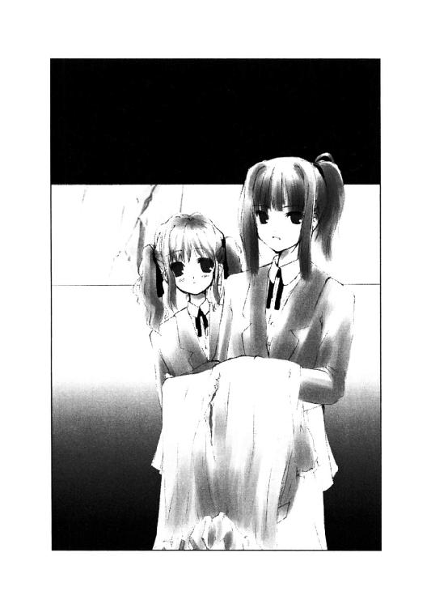
「広尾景子さんですか？」
「よく調べてるじゃない」
一美はいきなり図星をつかれて驚くが、それでも自分の考えが肯定されたみたいで少し笑みを浮かべた。
「でも、きっと広尾さんは犯人じゃないと思います」
しかしそんな笑みも正吾のその一言で消えた。一美は不機嫌そうに眉を寄せる。
「何を根拠にそんなことを言うわけ？ 動機があるのはあの人だけじゃない？」
「動機は、他の人にもあります。広尾さんの取り巻きの人たちなら、誰でも市ケ谷先輩にヒロインを止めて欲しいと思う理由はあるんです」
一美はそう言われて少しだけ考えて、ゆっくりと一回うなずいた。
「そう言えばそうね」
けっこうあっさりと怒りが納まったらしい。
「その、だから広尾さんを問い詰めるのは止めた方がいいと思うんですが」
「景子先輩はともかく、他の連中が黙ってないと？」
「そ、そうです。その通り」
「確かにあなたの言う通りね」
なんだか一美は冷静さを取り戻したらしい。すんなりと正吾の話を受けいれてくれる。正吾はそれに気をよくして、ドレスの話は黙っていた方がいいとも提案する。
「あと、ドレスのことで騒ぎ立てない方がいいと思うんです」
「そうはいかないわよ。双海が頑張って作ってくれたのに」
「いや、だからこそなんです」
正吾はやり直し一回目の景子が言っていた言葉を思い出す。
「そのドレスは双海ちゃんが、責任持って管理するべきものだったんですよね？」
「そうね」
「そのしっかりと管理してあるべきドレスがズタズタにされたとすると、その責任をとらないといけないのは誰です？」
「双海、かな。やっぱり」
一美はそれに思い当たって、正吾が何を言おうとしているか理解したようだった。
「騒ぎ立てれば、逆に犯人の思うツボってわけね」
「そうなんです。最悪、双海ちゃんが演劇部を追いだされるようなことになるかもしれません」
「確かにそうね......。でも、犯人は見つけないと」
「ええ、そのドレスの仇は取るべきだと思います。でも、そのことで騒ぎ立てるのはやっぱり止した方がいいと」
「で、そうしたら、キミが犯人を見つけて仇を取ってくれるってことなの？」
一美はかなり頭が切れるらしい。正吾よりも先に彼が言おうと思っていたことを口にしてくる。
「ええ。その代わり、市ケ谷先輩に協力して欲しいんです」
「......協力ね」
一美は正吾が何を考えているのか怪しんでいるようだった。一美からすれば正吾の行動の動機は理解できるはずがなかった。
殺されるのを防ぎたいなんて正吾が思っているということも、またそう思うに至った経緯も常識的に理解できることではない。一美は頭が切れる分、その辺りに釈然とできる答えが見つからないのが不気味なのだろう。
「具体的に私は何をすればいいわけかな？」
探りを入れるように一美は口元に笑みを浮かべながら、じっと正吾を覗き込んだ。
「とりあえず今日いっぱいだけでいいんですけど、犯人にどんな要求を出されても無視して欲しいんです」
「まあ、そんなの言われるまでもなくそうするつもりだけど」
予想外につまんない要求だと一美は拍子抜けしたようだ。正吾の方もなんだか肩から力が抜けてしまう。
確かに、勝ち気な一美の性格を考えれば、つまらない脅しをかけられたところで、素直に従うとは思えない。しかし事実、犯人はどういう手段を使ったのかわからないが、一美を呼びだすことに成功している。
「でも、なにか弱みを握られたら市ケ谷先輩だって要求を呑まざるを得ないこともあると」
「弱み？ 私にどんな弱みがあるって言うの？」
自信満々な態度で一美は尋ねる。
「例えば写真とか」
正吾はまた口が滑ったとすぐに気づいた。いきなり一美の眉が険しく寄るのが見えた。
「写真？ どんな写真？」
一美の視線に疑いの色が混ざったのが正吾にもわかった。
「......ヌード写真とか」
慌てて適当なことを考えて口にした。
「ヌードねぇ。着替え姿ならまだしも、そんな写真を撮れるとは思えないけど」
「じゃあ着替え写真だったら」
「そんなもん別にどうでもいいわよ」
一美は意外なことを口にした。
それはおかしい──正吾の心がそう告げていた。
確かにおかしい。そんなはずはないのだ。最初の十月一日は確認していないが、少なくともやり直しの一回目、殺害現場には写真があった。一美の着替え中の写真だ。
一美が本当に気にしないなら、どうして彼女は犯人に誘いだされて殺されることになったんだろうか？
「どうでもいいんですか？」
「ええ。学校中に配られたって気にしないと思うわ。本当に配るとも思えないし」
「じゃあ、ヌード写真だったら？」
「それはちょっと困るけど、でもできるもんならしてみろって感じね。絶対に犯人を見つけて償わせてやるわよ」
「......ですよね」
なんだかわけがわからなくなってきた。正吾は世界がぐるぐる回るような錯覚を憶えた。
一美は正吾の手前、強がって見せているだけだろうか？ だが見ている限りそういうわけでもないらしい。
なら、あの写真はなんだったんだろう？ 一美が呼びだされたのは別の理由だったのだろうか？ それともここで正吾が話した結果、一美の頭が冷えたせいで状況が変わってしまったんだろうか？
様々な疑問が浮かんできて、何がなんだかわからなくなってくる。考えることが多くなりすぎてきたようだ。
「とりあえず、何か予想外の弱みを握られても、要求には応えないでください」
「そうね......。約束するわ」
一美はそう言ってちょっとシニカルな笑みを浮かべた。正吾はそれを見て、ちょっと不安は残るがその場を去ることにする。
一美の後ろで懸命に別れの挨拶のために、双海が腕を振っているのが見えた。
「それじゃ市ケ谷先輩と双海ちゃん、また」
「さようならです～」
自分の名前を呼ばれたのが嬉しかったのか、双海が思いっきり大きな声を張り上げる。それに気づいて正吾も手を振ってからその場を去った。
○
午後の授業が始まり、サッカーの試合中になっても正吾はいまいち集中できずにいた。そのせいで、大した活躍もできずに終わってしまった。もっとも、秋葉に注目されないようにするためには、それぐらいの方がいいのも事実。秋葉と千尋の二人がサッカーの試合を観ているのは、特に確かめるまでもなく、正吾はわかっていたからだ。
「俺のミスだから、正吾は気にすんなよ」
試合が終わった時、貴博が正吾に話しかけてきた。正吾の顔が暗いのを自分のせいだと思ったらしい。試合には勝ったのにもかかわらず、浮かないのはミスプレイが原因。そう貴博が思うのは自然なことに違いなかった。
正吾のチームに代わって、他のチームがコートに入っていくのが肩越しに見えた。貴博は正吾の肩をポンと叩いて、そのまま正吾を追い抜いて振り返る。
正吾は集中力を欠いていたこともあって、貴博のパスを受けそこねてしまったのだ。もっともそれは貴博の言う通りミスパス。普通ならそれを取れるわけはない。だが、正吾にはそれが取れたはずだった。少なくとも「一回目」の時は取れたのだから。
「あんまり気にされると、俺も困るんだよ」
ヘラヘラと笑っているが、どこか影がさしているように見える。貴博は浮かれて見せているが、自分のミスを気にしているような態度を感じさせた。
「いや、実は違うことなんだ。それでちょっと考えごとをしてて......」
「そっか。それならいいんだけどさ」
貴博は短くそう呟くと、またいつものヘラヘラとした笑顔に戻った。それから走って乱れた髪を整えるように手ですいた。
それから貴博は正吾から視線を外し、グランドの端の方に歩き出す。その振り向き際の貴博の顔は、どこか寂しげだった。しかし正吾にはその理由もわからず、貴博にならって歩きながら、自分の考えごとに戻った。
彼がずっと気にしていたのは、本当にこれで問題は解決したのかということだった。
殺人事件の引き金になったであろう一美と景子の喧嘩は防げた。
そして一美に犯人の要求に応えないように釘を刺してもおいた。
犯人が誰かは相変わらずわからないが、事件が起こるのは防げるだろう。
まさか堂々と犯人が部活中の一美に襲いかかって人殺しを始めるという、今までとはまったく違う展開になるとは思えない。
おそらく事件はあの神社でしか起きないはずだ──と正吾は大した根拠もなく思っていた。いくら運命とは言え無茶はどうやらできそうにない。なるべく自然に事態を収拾しようとする傾向にあるのだと正吾は考えていた。
いくら一美が死ぬ運命に巻き込まれているとは言え、そんなに派手な形では死ぬはずはないのだ。あくまであの神社のような人のいないところだからこそ、彼女は殺され、そこに巻き込まれる人間が「間違って」出てしまったのだ。
「でも、やっぱり犯人はつきとめないといけないな」
今日、事件を回避しても犯人が残っているかぎり、やはり危険は残る。
そのことを考えると、今日、事件を起きないようにしてしまうと、違う日に起こってしまうことになってしまうかもしれない。
今日なら、まだやり直す機会はあるが、違う日ではどうにもならない──それに気づいて、正吾はため息をついた。
「早まったかな......」
○
特になんの異常もなく放課後になった。それは特に犯人がこっち側に干渉する気がないということなのだろうか？
正吾は一回目のように千尋の手伝いをするのはやめ、演劇部のことを調べることにした。千尋に感謝するようなことは今回は起きなかったというのもあるが、やはり犯人が演劇部にいるという考えが正吾を動かしていた。
朝とは打って変わって大勢の部員たちが集まっていた。全部で五十人以上はいるらしい。その中には景子と朝一緒に登校していた女の子たちの顔があった。
演劇部は、女帝・広尾景子の影響か、女子が圧倒的に多かった。男子もいることはいるが、いずれもあまり覇気のありそうなタイプではなかった。大人しく気弱そうなタイプ。なんとなくこき使われている、という印象を正吾は受けてしまう。
「......あんまり怪しい男ってのはいないな」
正吾はそれこそ広尾景子の彼氏でもいればそれが犯人ではないかと思ったが、考えてみれば十人を超える女の子に囲まれて登校する彼女に男がいるとは思えなかった。景子はどっちかというと女にモテるタイプだ。彼女の熱心な男性ファンもいるかもしれないが、それはこの場所にはいなかった。
そんなことを考えてる間に、ずっとそこにいる正吾に気づいて、部員の一人が出て来て彼に話しかけてきた。
「なんで覗き込んでるの？」
言外に邪魔だから出ていけと言ってるのが露骨にわかった。言うまでもなく自分は招かれざる客だ。そういう態度をとられるのは仕方がないと思った。
でももう時間はない、のんびりしてはいられなかった。
「市ケ谷先輩が巻き込まれている事件について調べててね」
探りを入れるのも面倒だと、正吾は直球で攻めることにした。
「犯人探し？」
「そう。心当たりがある？」
「あるよ」
その少女はそう言うと扉越しに話すのをやめて、廊下まで出てきた。それから部室では話すのがはばかられるらしく、少し離れようと提案してきた。
二人は階段を下りて三階、一年生の教室の前に移動する。
「で、犯人って誰なの？」
「私」
いきなりそう答えて彼女は笑った。からかっているのかと思ったが、どうもそういうわけでもないらしい。
「二十件以上も全部一人で？」
「まさか。私がやったのは一回だけだよ」
「じゃあ、他のは？」
「キヨミとサトコとか......」
彼女は指折り数えながら、次々に名前を口にした。
「まあ、とにかく部員全員が犯人みたい」
「全員でねえ」
「市ケ谷先輩をいじめないと、ハブにされるからって皆で持ち回りでやってるの。広尾先輩のファンはさ、けっこう本気でやっているけど、他の人は恰好だけ。本当に市ケ谷先輩にやめられても困るし」
彼女はまったく悪びれずそんなことを話す。実際、彼女も被害者の一人という感覚なのだろう。
聞いているうちに正吾は、手口がちぐはぐだと千尋が言ってたのを思い出した。
「それを言い出したのは誰なのかな？」
「誰なんだろう？ 私がやった時は、もうなんかそういう雰囲気で止められない感じだったから。それに最初のうちは本当に誰かわからなかったんだけど、先輩たちが良い気味だとか言って、どさくさに紛れてやってたみたい」
そうなるとその最初の誰かも、ここまで話を大きくするつもりはなかったのかもしれない。
一美を殺した犯人はその最初の誰かかもしれないし、それにあおられる形で盛り上がってしまった誰かなのかもしれない。
真相はわかったが、それが知りたい犯人を絞る手がかりとはならなかった。
「犯人は誰でもなく、そういう空気とかそういうことか......」
正吾は結局、これ以上追及してもわかりそうにないと、その少女に礼を告げてその場を去った。
○
結局、良いアイデアが浮かばず、正吾は犯行現場の三河神社へと向かった。
この場所を選んだのには何か理由があるはずだ、と彼は思っていた。それに犯人が下見に来るかもしれないという期待もあった。
人気がない場所がいい、というだけなら別に他にも選択肢はある。ここを犯人が指定するのには何か理由があるのだろう。それを見つけられれば逆に犯人像を絞り込めるかもしれない。
それに犯人がこっちの予想を上回る方法で、一美を呼びだすという危険も考えていた。釘は刺してはいるが、その辺りの謎はまだ解けてないのも事実だった。
まだ日が暮れる前の神社は、随分と印象が変わった。紅葉が近い木々の間を割るように伸びる長い階段は、白い石で作られていた。葉が落ちる季節だが、階段を覆う落ち葉は意外に少ない。誰も来ないと言っても、掃除をしに来る人はいるらしい、と正吾は気づいた。
もちろん暗かろうが明るかろうが階段の数は変わらないので昇るのには骨が折れたが、まあそんなことは大した問題ではない。
「ふぅ」
階段を昇り終えると、意外に敷地が広いのに気づいた。
ここの鳥居は電信柱ほどの高さがあった。正面の本尊を祭る神社もよくよく見るとかなり立派な建物のようだ。
前回は暗い中に一つだけ灯がついた建物があったのでそっちに目が行ってしまったが、会議室のようないかにも仮設らしい建物は全部で四つあった。しかし仮設と言っても、正吾が小さな頃からずっと同じような気がする。要するに本気で作る気がないのだろう。
犯行現場の建物に入ろうとして扉を開けようとするが、カギがかかっていた。力任せに開けようとすると建物自体がきしんで、その力を逃がしてしまうらしい。それに扉自体は意外に頑丈なようだ。三回ほど開けようと試みて、無理だと気づいて正吾は諦める。
「なんか道具でも使ったのかな？」
単にどこからかカギを入手したのかもしれない。しかしそれは逆に足がつくかもしれないと思った。手に入れられる人間を調べれば犯人はすぐにわかるだろう。
そう考えると犯人はきっと正規の方法で侵入したのではないはずだ。そして正吾の考えを裏付けるように、少し歩いただけで答えはすぐにわかった。
壁にけっこう大きな穴が開いていた。とりあえず応急処置なのか段ボールとガムテープで塞いであったが、それも剝がれかけている。まあ祭りの時にちょっと利用するだけの建物だ。この穴にしても、来年までに直せばいいとか、そんな考えじゃないのか、と正吾は思う。
と言っても、屈強な男がそこから入れそうにはなかった。そこまで大きな穴ではない。
「母さんに怒られるな......」
穴は比較的小さい正吾が入るので精いっぱいだった。無理して入ったせいで、冬服が汚れて傷だらけになってしまったぐらいだ。
建物の中はまだ誰もいなかった。木目の床の上には、何にも載っていない。
「犯人はまだ来てない、と」
一度、中に入ってしまうと、扉のカギは中から開けられるのが確認できた。電気もつけられる。使わなくても電気は通ったままらしい。
ということは犯人はあの穴を利用できることを発見して、ここを使う機会をうかがっていたということだろう。正吾はそのことから容疑者の中で一人がシロだと理解した。
赤井貴博。正吾より体が大きい彼にはここに入ることなど到底できない。よってここを選ぶ理由はない。だから彼は犯人ではない。犯人が単独犯である、という前提が成り立てば──だが。
「しかし犯人はなんでここに呼びだしたんだろう？」
正吾は改めて事件のことを考えてみた。
犯人はなぜ一美を殺したのか？ 殺すほどの動機とは何か？
だがその時、彼はそもそも自分が思い違いをしているのではないかという不安に駆られた。
トーカは「事件」ではなく「事故」だと言っていた。最初は殺人事件に自分が巻き込まれたから、それが「事故」だと思った。だが、そうじゃないのかもしれない。
トーカは「三人死んだから、三回やり直せる」とも言っていた。
もし本当に市ケ谷一美が死ぬのが運命なら、トーカの立場からすれば死んだのは三人ということにはならない。
しかしトーカはその辺りに関しては特に語らなかった。
「ということは......」
正吾は、一美が死んだのも「事故」だったのだと考える方が妥当だと思った。
犯人は別に一美を殺すほどの動機などないのだ。殺されたから、そこに理由があると考えていたが、むしろ逆なのだ。
動機がないのに殺してしまった。だから事故だと、トーカは言っていたのかもしれない。
そう考えると犯人が最初のやり直しの時、リトライを希望していたのはある種、当然の流れだったのかもしれない。
殺す気はなかったのだが勢い余って殺してしまった。そしてそこに正吾と秋葉が来てしまったので、口を封じるために殺す羽目になってしまった......。
「でも、そうだとするとますます犯人がわからなくなるな」
大した動機は必要ない。
一美とある程度の関係があって、理由はともかく彼女を脅すことに価値がある人間。
演劇部の広尾景子とその一派が犯人だと思っていたが、犯人はもっと他の場所にいてもなんら不思議はなかった。
それにもう一つ疑問が浮かんだ。
──なぜ、犯人はやり直しの一回目も市ケ谷先輩を殺したんだ？
事故で殺したのなら、やり直した時に殺さずに済ませられそうなものだ。殺したくないなら殺さなければいい。ただ、それだけだ。
なのに、結果的にまた三人とも死んだ。これはどういうことなんだろう？
正吾はその理由をもう自分は知っているような気がしていたが、どうにも思い出せなかった。
「......どうする？」
ふと我に返ると随分と辺りが暗くなっていた。本当ならもう犯人が来ていてもいい時間だった。だが、犯人は来ていない。一美が現れないというのは釘を刺しておいたからわかる。だが犯人が来ないというのは、どうも意外な気がした。自分の行動によって、犯人の行動が変わってしまったのだろうか？ それとも二度目のやり直しであることを利用した犯人の意志による変更が起きているのか？──考えてもわからない。
「雨？」
耳を澄ますと外はもう雨が降っているのがわかった。一度目は雨が降って、それから悲鳴が聞えた。階段を昇ってる途中だったから、降りだしてからそんなに長い時間は経っていないはずだ。つまり、もう事件が起こっていてもいい時間は過ぎている。
これは一美の死は回避できたということだろうか？ それとも、事件が起きる時間が変わってしまっただけか？
いずれにせよ──と、正吾は思った。犯人がここに来ない以上ここにいてもしょうがない。一美のところにでも行った方が良さそうだと正吾は結論して、扉をあけて外に出た。
「青山クン？」
扉の外は当然のように雨が降っていた。それは正吾の予想通り。しかし信じられない光景が目に飛び込んできた。
そこに一人の少女が立っていた。しかも正吾が知っている、ずっと今日、気にしていたクラスメイトだ。それが誰かと正吾は理解して、自分が運命の仕組みを甘く見ていたことに気づいた。
「青山クンよね？」
何も言わずに驚いたまま固まってる正吾に話しかけたのは、他の誰でもない乃木坂秋葉だった。
「なんで、乃木坂さんがここに？」
「私の家はこの近くで......それよりも青山クンこそ、どうして？」
「家が近くだからって、この時間にここに来る理由はないはずだけど」
そんなことがあってはいけない。正吾は目の前の現実を認められず、必死に否定しようとする。
「今日、青山クンの様子がおかしかったから、心配で探してたんですけど......」
秋葉は正吾がそんなに必死になっている理由がわからず、当惑している。
「そんなに俺は変だった？ そもそもなんでそれくらいのことで心配して追いかけてなんて......」
イライラした感じで叫びながら正吾は、
──いや、そんなことを言っている場合じゃない
と思い直した。
「ここを離れないといけない」
「え？」
「逃げるんだ」
「どうして？」
「どうしても！」
我知らず正吾の声が大きくなっていた。それが何を意味するのかも彼は気づいていなかった。
「青山クン？」
正吾はそれでも秋葉の手を摑んで走り始めようとした。この際、秋葉の承諾を得る必要はない。彼女を助けるのが優先だ──そう思った。
だが次の瞬間、正吾は気づいた。
「悪魔だ......」
木々の間にあの不気味な白い線で描いた笑顔が見えた。
犯人だ。正吾がいるのに気づいて帰るまで、そこで様子をうかがっていたらしい。しかし油断して近づき過ぎたのだ。
「悪魔？」
秋葉が心配そうに正吾の視線の先を追う。それに気づいて、犯人が逃げ出した。
「乃木坂さんは逃げるんだ！」
正吾は犯人が走るのを見ると、反射的に追いかけていた。それでも秋葉に逃げるように話しかけることはした。
いずれにせよ、これで秋葉は助けられるだろう──そう正吾は確信した。しかしそれは少し考えが甘かった。
「どこだ？」
すっかり暗くなった林の中で、黒い服を着た犯人を探すのは、決して容易なことではなかった。すぐに追いかけたが、すぐに見失ってしまった。
──どうする？
十月の寒さの中で、正吾は自分が汗をかいているのに気づいた。
相手は凶器を持ってどこかに潜んでいる。しかもこの視界の悪い中に。
木と木の間の闇。そこに悪魔の顔が見えた気がして、正吾はその度に動悸が増すのを憶えた。
──どこだ？ どこにいる？
カッとなって追いかけたのは失敗だった。
犯人が逃げたのを確認した時点で、素直に神社から離れるべきだった。それで良かったんだ。無理して追いかける必要など何もなかった。
追いかけても、ただ自分の身を危険にさらす以上の意味はなかった。
「青山クン」
自分を呼ぶ声が聞えた。最初、その声に正吾は恐怖したが、それは犯人の声ではなかった。
「乃木坂さん？」
聞き覚えのある声。それは乃木坂秋葉の声だった。正吾は声のする方を振り返り、そこに彼女を見つけた。
「逃げろって言ったのに......」
正吾のその言葉は消えそうになるほど小さな声だった。一人で不安だったのは事実だったが、それでも確実にヤバイ方向に向かっているという予感があった。
この場所に秋葉が来るのはマズイ。絶対にマズイ──正吾の心が告げる。
「ウワアアアアア！」
耳をつんざく悲鳴のような叫びが聞えた。もう何度となく聞いた犯人の割れた悲鳴だ。
犯人はもう彼の側まで近寄っていた。いやそれは正確ではない。秋葉の背後に迫っていたのだ。
「乃木坂さん！」
正吾は秋葉を横に突き飛ばし、犯人と自分の間からどかせた。
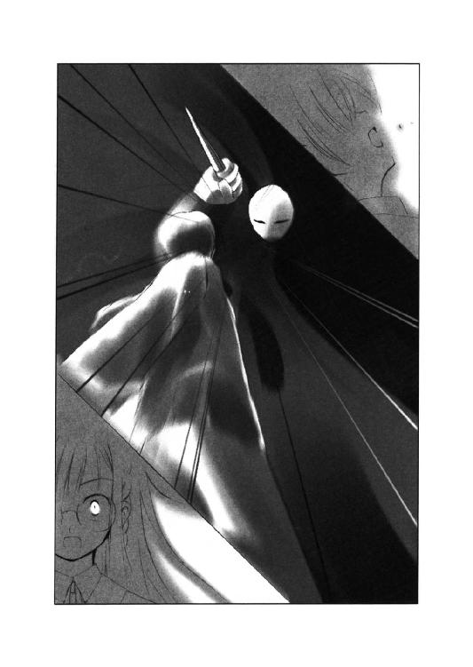
まっすぐ秋葉を狙っていた凶器が目標を失い、そのまま正吾に襲いかかる。
踏み込みは浅かったのかもしれない。だが腹にじわりと痛みが走った。
「きゃあああああ！」
秋葉の悲鳴が聞えた。それは彼女が襲われたからではない。正吾が刺されたのを見たからだ。
「うわああ！」
正吾は力いっぱい犯人に殴りかかる。鈍い一撃で犯人はひるんだ。その隙を見逃さず、正吾は秋葉を引っ張り起こすと、そのままさらに林の中へと逃げ出した。
「青山クン？」
ケガをしたはずの正吾が走っているのに、秋葉は疑問を感じたらしい。しかしもう少し離れるまでは走らないといけないと、彼はもう何も考えずに走った。
「青山クン！」
でも、秋葉はそんなことに素直に従えるような心境ではなかった。足に力をこめて立ちどまろうとする。
「ケガしたまま走ったら死んでしまうわ」
「俺はいいんだ。乃木坂さんが無事でいてくれれば」
そう答えた瞬間、正吾は足がもつれてそのまま地面に転がった。秋葉はそんな正吾を抱え起こすと、腹の傷に触れた。
「なんで、こんな無茶をするの？」
秋葉の表情から正吾は自分のケガの具合を理解できたような気がした。
「乃木坂さんには死んでもらいたくなかったから」
「だからって......」
「俺はもう走れない。だから乃木坂さんだけで逃げてくれ」
できるはずだ。自分はできなかったが、秋葉ならできるはずだと正吾は思った。
自分が死に直面したのに、それをクールに受け止めた彼女なら、できるはずだ。
冷静に判断して、助かるために行動してくれるはずだ。
正吾はそう思っていた。しかし──。
「できません、そんなこと」
だが、秋葉はそれを真っ向から否定した。
「どうして？」
秋葉の言葉を聞きながらも、正吾はその言葉を信じることはできなかった。
「青山クンを見捨てて逃げるくらいなら、私はここで一緒に死ぬのを選びます」
そんなことを彼女が言い出すとは、正吾は想像もつかなかった。
過去二度の十月一日で、彼女はそんなことを言うような人間だとは少しも思えなかった。立場が逆になっただけなのに、どうしてこうも状況が変わるんだろう。
自分が死んだら泣くか？ と聞いた時のことを思い出す。
その時の彼女はこんなことを言う人間ではなかったはずだ。
割れた花瓶の片づけを手伝った時、彼女はなんと言っただろう。
その時の彼女はこんなことを言う人間ではなかったはずだ。
「乃木坂さんまで死んだら、俺は死んでも死にきれないんだ」
彼女を逃がすために立ち上がろうとしたが、もう足に力が入らなかった。下半身の感覚がもうない。
「なら、死なないで......お願い」
気づくとメガネの奥で秋葉は泣いていた。
泣いていた？──秋葉が泣くなんて、正吾は想像したこともなかった。
自分が死ぬ時だって、取り乱して泣いたりしなかった彼女が、今泣いている。
「どうして、泣いているの？」
正吾の呟きに秋葉はその時、初めて自分が泣いているのに気づいたようだった。
「私も他の人のために泣くこと、あるんですね」
「......乃木坂さん？」
もう顔もよくわからない。意識が定まらなくなってきた。そんな彼に向かって秋葉は昔の話を始めた。
それは、中三の時の文化祭の時の話だった。誰も文化祭の準備をする気がなく、それでも学級委員長であり、責任感を感じていた彼女は一人でも準備をしようとしていた。
「ああ、そんなこともあったね」
正吾は話を聞きながら、その意識は過去を旅しているような気分になっていた。
「あの時、本当はね、私も止めたかった。でも、止められなかった。だから、誰か手伝って欲しい、手伝って欲しいって思ってたの」
「そうだったんだ」
「そうしたらある日、青山クンが手伝ってくれるって言い出してくれて。私凄く嬉しかった。青山クンからはそうは見えなかったかもしれないけど......」
「乃木坂さんは手際がよくて、俺は邪魔ばっかりして申し訳ないなあって思ってた」
「青山クンはいつもそう言って謝ってたよね。その度、私、そんなことない。青山クンのおかげで、すごく助かっているし、すごく嬉しいってずっと言いたいと思ってた。でも言えなかった。今でもそう、自分が思っていることを全然言葉にできない」
「じゃあ、俺、役に立ってたんだ。なんか嬉しいな」
もう意識がはっきりとしてない。ふわふわした気持ちで正吾は呟いた。
「いつかお礼を言おうって、ずっと思ってたの。作業している時は、明日言おうって思ってた。そのうち、文化祭が終わった時にまとめて言おうって思って、それでも言えなかった時は、また明日言うんだ。明日言うんだって」
もうよく見えないが、秋葉は涙を拭いながら話をしているらしかった。
「今日は機会がないから仕方がない。学校の帰りの道はそう思って自分を誤魔化すのが日課みたいになってた。でも、学校に行く前はいつも思うの。今日こそ言うって。でも、言えないまま、中学を卒業してしまって、高校でも一緒のクラスになれたのに、やっぱり私は言えないままだった」
「そんなに真剣にお礼を言おうって思ってくれてたんだ」
「思ってただけ。そんなの意味がない。今日だって言おうと思ってた。青山クンが様子がおかしいと気づいて、なんか今日はその機会がくるかもしれないって、勝手に心躍らせて......バカよね。その機会がこんな形でくるなんて、想像もせずに勝手に浮かれて」
「そんなことない。乃木坂さんはバカじゃないよ。すごく真剣で立派で、俺はずっと尊敬してた。不真面目でやる気のない自分が恰好悪いっていつも思ってたよ」
正吾は感覚が残っている右腕を伸ばして秋葉を探す。しかし目が見えなくて、手は宙をさまようだけだった。それに気づいて秋葉は彼の手を捕らえて自分の頰に触れさせる。
「正吾クン......って呼んでいい？」
「いいよ。いくらでも呼んでよ」
「言ってしまえばスゴイ簡単なことなのね。でもこんなことすら言えずに私はずっと、心の中だけで、正吾クンって呼んでた」
「......なんか恰好良いな、俺」
へへへと静かに正吾は笑った。本当はにっこりと笑いたかったが、もうそんな元気は残っていなかった。秋葉はそれを見て、決意を固める。
「正吾クンは、少しも気づいてなかったと思うけど──」
秋葉は頰の正吾の手をぎゅっと握りしめながら、言葉を続ける。
「準備を手伝ってくれたあの日から、私、乃木坂秋葉は、ずっとずっと正吾クンのことが好きでした」
それが正吾が最後に聞いた言葉だった。その後、もう耳からは何も聞えなかった。
握りしめている手の感覚も次第に薄れていく中、ぎゅっと自分を抱きしめる秋葉のぬくもりを感じる。そして正吾は自分の唇に触れた秋葉のやわらかい唇の感覚を最後にそのまま完全に意識を失った。
○
三度目のその世界の訪問は、今までと違っていた。
気づくと青い空が見えた。いつもの白と黒のタイルは背中に冷たさと固さを感じさせているだけだった。
「泣いているのかな？」
正吾は目が覚めると泣いていた。それからその理由、乃木坂秋葉の涙のわけを思いだし、彼女は結局、どうなったんだろうかと思った。
助かったのだろうか？ それともやっぱり死んでしまったんだろうか？──そのことを考えている間に、時とは無縁のこの世界で時間は流れ続ける。
「大丈夫？」
トーカが現れて寝たままでいる正吾の顔を覗き込んだ。
「なあ、トーカ。乃木坂さんは助かったのかな？」
正吾は寝転がったままトーカに尋ねた。返事を期待してはいなかった。今までのことを考えても答えてくれないだろうとおぼろげに思っていた。
「助かったよ」
しかしトーカはあっさりと答えを教えてくれる。
「助かった？」
「うん。正吾クンのおかげで、死なずに済んだの」
「そっか。それは良かった」
その言葉に噓はなかった。でも、心の底では、本当にそうかと自問している自分にも気づいた。
「市ケ谷先輩は？」
「助かったよ。これも正吾クンのおかげ」
「そっか」
「それとね、相手の人は三度目はもういいって言ってるらしいよ」
トーカはいい加減寝たままの正吾のほっぺたを引っ張りながら、静かに爆弾発言を告げる。
「ってことは、俺が望めば、このままでいいってこと？」
「そういうことになるね」
トーカは相変わらず、意見らしい意見は言わない。彼女はただ事実を告げるための伝言係のようなものなのだろう、と正吾は理解していた。彼女に意志がないのではなく、意志を発揮しないようにしているのだ。
「トーカ。あのさあ」
「なに？」
「俺、女の子に告白されたことなんて初めてなんだ」
「みたいだね」
トーカは自分の人生の全てを知っているのかもしれない。今までだけどころか、これからの未来さえも。だから何も言おうとしないんだろう。それは運命を管理する立場の存在の言うことではないからだ。
「あの言葉、思い出すだけで今でもドキドキする」
正吾はそう言って彼女の頰に触れていたはずの右手を握り直した。
「あの日から、私、乃木坂秋葉は、ずっとずっと正吾クンのことが好きでした」
トーカは正吾が思い出している言葉をそっくり口にした。
「でもさ、わからないんだ」
「何が？」
「なんで彼女は今になって気持ちを告白したんだろう？」
「機会がなくて言えなかった......って言ってなかった？」
「それはそうなんだけど、やり直しの一回目とかだって、同じような機会はあったじゃないか。死ぬ前に気持ちを打ち明けることだってできた......気がする」
「そうかもしれないね」
トーカはそういうことは難しくてわからないというような表情をして腕を組んで考え事をするようなポーズをとった。
「でも、あの時彼女ははっきりと、俺のことなんか好きじゃないって言った気がする。それで死ぬ前に一回キスがしたいからって言った」
「そうだったね」
「もし、あの時、告白していれば俺は迷わず、彼女とキスをしていたと思う。なのになんで言わなかったんだろう？」
「なんでだろうね？」
トーカは知ってか知らずか、やはり答えようとはしなかった。
だから正吾は相変わらず寝たまま空を見つめて考えるしかなかった。
雲もない本当に真っ青な空。それをじっと見ていると距離感覚を失っていくのを感じた。
「なんでなんだろう？」
そう呟いて自分なら言うだろうかと思った。
ずっと実は好きだった人に見取られて死ぬ時、自分は言うだろうか？
好きだったと言うだろうか？
「......言わない気がする」
でもどうして？──彼は新しい疑問を自分に尋ねる。
「言って断られたら辛すぎるから？」
違うな、そんなことじゃない──正吾の心が否定する。
あの時のことを正吾は思い出した。
だから、泣いたりしないで──彼女は言っていた。自分が死んでも悲しまないで欲しいと。
「好きじゃないなら、泣く理由はないです」
これも秋葉の言葉だった。
「好きじゃないなら、泣く理由はないです」
もう一度、繰り返す。それから自然と秋葉の言葉が思い出されて、そのまま口から出てきた。
「だから、泣いたりしないで」
「あの日から、私、乃木坂秋葉は、ずっとずっと正吾クンのことが好きでした」
矛盾に満ちた秋葉の言ったことを何度も何度も正吾は繰り返す。
そして正吾は不意に自分の言葉を発した。
「好きな人が死んだら悲しい」
「そうだね」
トーカが彼の言葉を素直に肯定するのが聞えた。
「だから、乃木坂さんは言わなかったんじゃないかな？」
「そうかもしれないね」
「俺が乃木坂さんを好きだったら、もっと泣いてたと思う。乃木坂さんは俺を悲しませたくなかった。そんな気がする」
「たぶん、そうだよ」
口にすれば、それは本当のような気がした。
死に行く自分の気持ちより、生きて残る相手の気持ちを大切にした。そんな秋葉の気持ちに気づいて、正吾の心は激しく揺れた。
そしてまた涙が出た。今度は静かにゆっくりと、一筋だけ。
「昔は......いや、昨日はともかく、俺は乃木坂さんに泣いて欲しくない」
「うん」
「彼女を助けたいって思った。そのためなら自分が死んでもいいって思った」
「そうだね。だから正吾クンは頑張った」
「でも、その結果、俺は乃木坂さんを泣かしてしまった。こんなはずじゃなかったんだ」
──私も他の人のために泣くこと、あるんですね
死ぬときにすら泣かなかった秋葉を、自分は泣かしてしまった。
助けるために頑張った結果がそれだ。
確かに彼女の命は救われた。でも、本当にそれが自分の望む結果だと言えるのか？
「そんなの違う。俺は納得できない」
それを口にすると、体中にエネルギーが戻ってくるのを正吾は感じた。勢いづいて跳ねるように起き上がる。
「トーカ！」
「何？」
「俺、わがままかもしれないけど、乃木坂さんを悲しませたまま終わらせたくない」
「うん」
トーカはそう答えると元気よくうなずいてみせた。くりくりした大きい黒目が輝いているように見えた。
「運命は変えられるんだよな」
「あと一回はね」
「乃木坂さんも、市ケ谷先輩も、俺も死なない、そんな運命もあるんだよな」
「うん」
「だったら、俺はそれを探して見つけてみせる。だから......」
「正吾クンだったら、きっと大丈夫だよ」
トーカは今までで一番嬉しそうな笑みを浮かべるとまた天空に指を向ける。
「きっと、もっと多くの人がハッピーになれる運命に変えられるよ」
そして指が床を差した。それを合図に白と黒の三角のピースが空へと舞って、世界は崩れていく。
「ありがと、トーカっ！」
闇へと落ちながら正吾は有らん限りの声で叫んだ。トーカがそれに手を振って応えるのが見える。顔はよく見えなかったが、きっとにっこりと笑っているに違いないと正吾は確信していた。
第三章 最後の十月一日に見つけた答え
「犯人は誰だ？」
目を覚ました時、すでに正吾は興奮状態にあった。おかげでバッチリと目が覚めた。
階段を下りながら、正吾ははっきりと犯人の姿を思い出していた。
やり直しの二回目で確認した通り、犯人は華奢で小さい。正吾よりも小さい。いやひょっとしなくても、秋葉よりも小さかった気がする。
「そうだ、確かにそうだ」
刺されて逃げる時だって、冷静に考えてみれば実に簡単に自分は犯人を払いのけていた。それは相手が殺す気がなかったこともある。しかし純粋に物理的に弱かったからだ。
しかも犯人は単独犯だ。少なくとも実行犯は。
「ということは、やっぱり貴博ということはありえない」
そう結論して、正吾は急にいたたまれぬ気持ちになった。きっと向こうはなんとも思ってない。思う理由など元からない、でも正吾は謝りたいという気持ちになった。
友達を疑っていたということを謝らずにはいられなかった。だから正吾は朝ご飯も食べず、いきなり出かけることにした。
「ん？」
家の外に出て感じる視線が今回はないことに気づいた。家を出る時に見た時計を思い出し、まだ七時にすらなってないと改めて意識した。
──こんな早くに人の家に行っていいものだろうか？
そんな疑問も浮かんだが、考えてみると貴博の家に遊びにいったことはなかったので、それを探すだけでも時間がかかるだろうと、気にせずでかけることにした。
貴博の家は時輪台一丁目にあるらしい。時輪台の駅前の周辺だ。正吾の住んでいる南時輪台一丁目とは線路を挟んですぐの場所にある。
時輪台一丁目は、比較的大きな家の多い場所らしい。住所を頼りに貴博の家を探す正吾にとってはそれはありがたかった。そして貴博の家は意外に早く見つかる。赤茶色のレンガの外壁のかなりオシャレな洋風の造りの一軒家だ。
「なんだよ、こんなに朝早くから」
まだ寝ていたらしく眠そうに貴博は急にやってきた正吾の行動に理解できないという顔をしていた。
しかし顔よりも正吾を驚かせたのは、貴博の服装だった。普段のおしゃれなイメージとは打って変わって、灰色のトレーナーの上にどてらを着込んだスタイルだった。しかも冴えないイメージの黒縁のメガネまでかけていた。
「貴博って目が悪かったんだ」
「普段はコンタクトなんだよ。で、なんの用なんだ？」
貴博があくびをしながら、正吾の返答を待っている。
「ちょっとした事件に巻き込まれてさ、その犯人が貴博なんじゃないかと疑ってた」
「......なんだよ、それ」
「だけど、やっぱり貴博は犯人じゃなかった。だから、ごめん」
「......そんだけ？」
「それだけ......かな」
貴博はあごが外れそうなくらい大きな口をあけて、それからじっと正吾の顔を見る。かなり疑わしいという気持ちが視線にも現れていた。
「そんだけのことのために、なんでわざわざ俺の家まで来たわけ？ 言う必要もないと思うし、例え必要があるとしても学校で言えばいいんじゃん」
「まあ、そうなんだけど、言えるチャンスって限られているからさ」
言いたい時に言わなければいけない。後でと言っていたら、いつまでも言えなくなってしまう。正吾はそう思っていた。
「......なあ」
貴博がさっきまでの眠そうな顔を不意にやめた。真剣なまなざしで正吾の反応をうかがう。
「なに？」
「まさかと思うけど、自殺するとかそういうんじゃないよな？」
「いや、自殺はしないけど......」
「けど、なんだ？」
貴博の顔の真剣さがさらにましていた。答えない正吾を見て、貴博はガッとその両腕を摑んだ。
「けど、なんなんだ？」
そのあまりの真剣なまなざしに下手な噓をつくのも難しいと正吾は思って、こんなことを言って答える。
「よく当たる占師に、自分が死ぬって言われた......という感じの話で」
「占師か......なら、いいんだけど」
急にほっとしたように貴博の全身の力が緩んだ。そのあまりのギャップに今度は正吾が逆に真剣に彼を見始める。
「一体どうしたわけ？ なんか気に障ることでも言ったのかな」
「いつもヘラヘラしてる癖に、急にマジになったから驚いた？」
「......正直に言うと」
「正直過ぎだぜ、本当」
貴博は悪態をつきながらも顔には笑みを浮かべる。
「せっかく来てくれたんだ、上がれよ」
貴博はそう言って自分の部屋に正吾を招き入れた。家の中も外見にたがわず、オシャレな作りだった。玄関も広く、貴博の部屋へ続くらしい階段も幅が広かった。踊り場には、きっと有名な作家の作であろう絵画や花瓶が飾られていた。
「......おじゃまします」
貴博の部屋は、正吾のマンガやゲームばかりの部屋とは違って、ファッションセンスに厳しい彼の生活を形にしたような部屋だった。もちろん家が大きいだけあって、彼の部屋も広い。自分の部屋の三倍はあるんじゃないかと、正吾は思った。
ハンガーにかけられた色とりどりの冬用の私服。それに正吾の部屋とは置いてある本の種類が明らかに違った。正吾の部屋にあるのはゲーム雑誌だったが、彼の部屋にはファッション雑誌とそして参考書が多かった。
そんな中にメガネをかけ、どてらを着ている貴博がいるのは実に違和感があった。
「こいつだ」
貴博は本棚の上の段から一冊のアルバムをとりだした。それで突っ立っているままの正吾に気づいて、その辺に座れよと椅子を指差した。
「このページのこの写真のこれ、誰だと思う？」
正吾は貴博が指差した写真の相手と貴博の顔を見比べた。真面目な優等生っぽいメガネをかけた中学生だった。普段の貴博なら気づかなかった気がするが、今の彼とは少なからず共通点がある。正吾はそれに気づいて、確信なげに答えた。
「......貴博だろ？」
「その通り。で、この隣のヤツが、俺の親友。いかにも仲良さそうに写っているだろ」
確かに昔の貴博と肩を組んで笑っている男は実に仲良さそうに見える。その行動がどうにもやり直しの一回目の時の自分と千尋のような間抜けさも感じさせた。あえて強調しすぎてて、どこか噓くさいという印象だったのかもしれない。
「で、その親友とは今も交流があるわけ？」
「今はもうないよ」
「どうして？ 親友なんだろ？」
正吾の質問に貴博はしばらく沈黙したままだった。それから重そうに口を開く。
「死んだんだよ。しかも自殺した。ある日、突然に」
貴博はそこまで言いきるとまた沈黙した。正吾も何と言ったらいいかわからず沈黙を守る。
「ショックだったぜ」
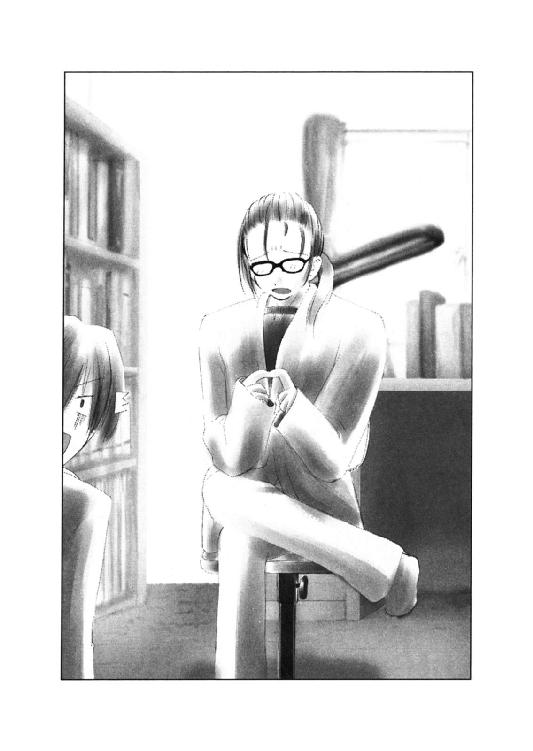
正吾は貴博の真剣なまなざしの意味を少しだけ理解できた気がした。貴博にはきっとさっきの自分は、その死んだ友達に見えたのだろう。
「でもショックだったのはそいつが死んだことじゃないんだ」
「え？」
「本当にショックだったのは、そいつが何にも相談してくれなかったことなんだ」
貴博はそう言って、また押し黙った。当時のことを色々と思い出しているらしいのが、正吾の目から見て取れた。
「俺とそいつはさ、何でも話して、何でも理解しあえる友達だった。少なくとも俺はそう思ってた。でも、あいつはさ、悩んでいることを俺に教えてくれさえしなかったんだ」
「どうして？」
「わかるわけないだろ。何も言わずに死んじまったんだから」
そりゃそうだ──貴博が一番聞きたいことを尋ねるなんて、自分の浅はかな行動が恨めしく思えた。
「いや、そうなんだ。本当にどうして？──なんだよ」
貴博はそう言いながらアルバムをゆっくりと閉じて、また本棚に戻した。
「受験ノイローゼだったらしい。俺は成績がいい方だったから、そいつが成績で苦しんでいるのに気づけなかったんだ。そう考えると俺は嫌なヤツだったんだって気づいた。俺はアイツから見たら上から見下ろしているように見えたんだろうな。だから、相談できなかったんだよ、きっと」
「......そうだったんだ」
「だからさ、高校に入ってからはキャラを変えたんだよ。インテリになりたくなかったし、友達付き合いを真剣にするのも止めた。でも、やっぱりあんまり楽しくなかったな。昔の自分をほっぽり投げてしまったんじゃないかって、何度も何度も振り返って、それでずっと立ち往生するだけだった」
「貴博。あのさ──」
自嘲的に沈む貴博に正吾はなんか言えることがないかと探した。でも考えても言葉は出てこない。だから思う通りに正吾は口にする。
「仲がいいとさ、逆に本当に悩んでいることとか相談しづらいってことあると思う」
「本当に悩んでいること？」
「俺はその貴博の親友のこと知らないから、わからない。でもさ、わかって欲しいことほど、わかってくれない時の辛さで、言えなくなってしまうことってあるんじゃないかな。本当はきっと、貴博に一番に相談したかったんだと思う」
「そうかな」
「一番に相談したかったけど、それができなくて、それで誰にも相談できなくなって......それでどうしようもなくなってしまったんじゃないかな」
本当にそうかなんて、もう誰にもわからない。正吾は自分ならそうなってしまうかもしれないと思って、ただそれを言葉にした。
「そうかもしれないな」
言いながらグスッと音を立てて貴博は鼻をすすった。気づくと貴博は泣きそうになっている。こらえているせいで涙がたまって鼻をすする羽目になったのだ。
「でも、だからこそ、俺は相談して欲しかった。それにアイツが悩んでいることに気づいてやりたかった。アイツから相談できないなら、俺が気づいて『いつでも相談してくれよ』って言ってやりたかったんだ」
友達を恨んで済まそうとしたのは、自分のそんな鈍さから逃れるためだったのだと気づいて、今まで抑えていた気持ちがあふれ出したらしい。
そんな貴博を正吾はじっと見つめることしかできず、貴博の涙をこらえてすする鼻の音だけが部屋に響いた。
「......悪ぃ。いきなり変な話しちまったな」
貴博がそんな風にやっと落ち着きを取り戻したところで、正吾はずっと考えていた思いを口にする。
「貴博。俺、相談したいことがあるんだ、聞いてくれるかな？ 正直、自分でも信じられなかったから、バカにしてんのかって思うかもしれないけど」
「なんだよ。俺で良ければ聞いてやるけど」
「実は、俺さ、自分が死んでもどうなることもないって思ってたんだ──」
貴博の言葉を待って、正吾は今日が四度目の十月一日であり、誰かが一美を殺すのを自分は止めたいといったことを素直に打ち明けた。
「やっぱり信じられないかな」
次第に理解に苦しむという表情に変わる貴博を見ながら、最後に正吾は確認の意味で彼にそう尋ねた。貴博はしばらく答えず、考えに考えてから返事をする。
「まあ、信じられないな」
正吾はじっとその言葉を聞いた。しかし言葉はそれだけでは終わらなかった。
「普通のヤツならって話。でも、俺は別だ。俺と親友の話をした後に、冗談でもこんな話をお前がするとは思えない」
「それじゃ」
正吾は心がぱっと明るくなるのを感じた。
「俺は信じるぜ。とりあえず、一美のことは俺に任せてくれ。そうすればお前だってずっと楽になるだろ？」
「ありがとう。助かる」
「俺もお前のおかげで救われた気持ちだぜ。ありがとな」
それから正吾は貴博が準備するのを待って、一緒に学校へと向かう。
「あ、あのさ......」
途中、正吾は言わなければいけないことを思い出した。一美と貴博の別れ話のことだ。あまり言いたくはなかったが、事実は事実だし、知っておいた方がショックは少ないんじゃないかという気もした。
「え？ 俺と一美は今日、別れるの？」
しかしショックはショックのようだ。いかにも貴博は弱ったように眉を寄せる。だが、それも逆に貴博にとっては、正吾の言葉を信用する気にさせたようだった。貴博は肩掛けカバンを背負い直すとそのまま歩くスピードを上げる。
「まあいいさ。ふられようが、あいつは俺が守る。それは変わらない」
いつも真剣味のない言葉しか言わない貴博とは思えないその言葉。正吾は素直に感心してしまった。
「貴博って......なんか恰好いいな」
「な、なに言ってんだよ、まったく」
貴博は照れ臭いらしく歩く速度を上げる。
「しかしそうなると、誰か女の味方をつけた方がいいな」
女の味方──言われて思いつくのは正吾にはあいにく一人くらいしかいない。
「千尋？」
「千尋はダメだろう。あんまり役に立たない気がする。もっと頼りになりそうなヤツ」
貴博も友達がいのないことを言い出すが、正直、正吾も千尋に女としての役割を期待するのは無理なような気はしていた。
「乃木坂さん？」
「委員長か」
貴博が一瞬渋い顔を見せるが、急に考え直したらしく、明るい声で提案する。
「乃木坂秋葉は適任だと思う。彼女を引き込もう」
「貴博は乃木坂さんのこと嫌いなのかと思ってたけどな」
「ああ、嫌いだったよ」
貴博はこれまたなんとも爽やかに肯定した。しかし過去形ではあった。
「嫌いだった？」
「そう。なんか乃木坂見てるとさ、中学の時の俺を見てるみたいでさ。すっげーイライラしてたんだ。思えば悪いことをしたな」
「そうだったのか」
友達を死においやった自分。それを秋葉に見て、貴博は何かと目の仇にしていた、というわけらしい。
「乃木坂も助けるんだろ？ だったら下手に遠ざけるより、素直に味方になってもらおうぜ」
「そう上手く行くかな」
「大丈夫だよ」
なんだか貴博と千尋のキャラが重なって見えた。根拠のない自信を感じる。
「お前ならきっとなんとかできるさ」
「......まあ、やるしかないか」
覚悟を決めると正吾は時計を見て時間を確認した。そしてやり直しの一回目、秋葉と遭遇した時間と場所へと駆け出した。
○
「信じられないですね」
秋葉の反応はいたって普通と言って良かった。正直、自分だって最初は信じてなかったのだ。それを信じてくれる方がかなり奇特と言って良かった。
だが秋葉も貴博同様、その一言で終わらなかったのが、正吾にとっての救いだった。
「市ケ谷先輩の件は気になりますから、お二人から聞きづらいと言うなら協力はしますけど」
「あ、ありがとう」
ダメかと思った反動もあって、正吾は秋葉の申し出に心底感謝した。思わず手を握り、じっと彼女の目を見つめていた。
「絶対にキミを助ける。俺を信じたことを後悔させない。そう約束するよ」
正吾が熱っぽく語るが、秋葉の方は黙って固まってしまっていた。
「......あの」
正吾はそんな自分の行動に気づいて、手を離すととりあえずちょっと距離を置いた。
「これでかなり希望が見えてきた。初めっからこうしていれば良かったんだよな」
「話を聞くかぎり、最初からこうするのは無理だったと思います。最初は憶えてなかったんですよね？」
「......そ、そうだね、うん」
どうにも普段の秋葉と思い出の中の秋葉に違和感があって、やりづらいと正吾は感じる。いっそ、彼女が自分の気持ちをうちあけたことも話してしまおうとも思ったが、それは無事に終わるまで黙っていた方がいいと彼は思っていた。それは自分の気持ちに関しても一緒だった。
死に行く自分の気持ちを語ってはいけない。それは秋葉が命をかけて示してくれた優しさを裏切ることになる。
正吾はもう一度、それを心に刻んで三人で学校へと向かい始めた。
三人はそして歩道橋にさしかかり、階段を昇る。その時、正吾は頰に当たる強い風に、これから起こることをにわかに思い出した。
「あっ、あれなんだろう？」
突然、正吾は空を指差した。貴博と秋葉がその指の先を探す。
「え？」
「なに？」
しかしそこには何もなく、ただその瞬間、突風が吹くだけだった。
「きゃっ」
短く秋葉が悲鳴をあげた。風が吹いて彼女のスカートがめくれたのだ。
だが、空を見ていた貴博はそれに気づかなかった。
「......何もないぞ」
「うん。何にもない」
正吾はそう答えながら、秋葉の方を見た。彼女は少し驚いた様子を見せていた。
「見えました？」
「いや、今回は見ませんでした」
「今回は？」
秋葉は少し考えて、その意味を理解したようだった。少し顔をあからめた彼女の顔を見て、貴博も状況を理解して笑みを浮かべる。
「なるほど。俄然、お前の言ってたことも真実味をましてきたね」
「......もう少しマシな方法で証明したかったけどね」
「何言ってんだよ。委員長のパンツだぜ、オイオイ。で、どんなのだったわけ？」
貴博は正吾と肩を組むとぐっと顔を近づけて小声で尋ねる。
「え？」
「パンツだよ、パンツ。見たんだろ？」
「いや、それは......」
野郎二人が後ろで囁きあっているのが気になったのか、秋葉はじっと二人を睨んだ。
「もし言ったら、協力しませんからね」
「......だってよ、貴博？」
正吾は貴博の顔を見ると、前を向いて元気よく歩き続けた。口元には笑みが浮かんでいたかもしれない。
○
校門をくぐると、一美が待ち受けていた。かなり不機嫌そうだ。ツリ目がつり上がっている。
そう言えば、一回目の時は貴博は正吾より先に学校に来ていた。それを考えると、一美は本来よりかなり待たされていることになる。
「貴博、ちょっと良いかしら」
多くの生徒たちが登校する時間帯に入っているので、一美は場所を変えようと思っていたらしい。しかし貴博はその場でいきなり話題を切りだした。
「別れ話か？」
一美はさすがにその言葉には面食らった。そんな話、おくびにも出したことはなかったはずなのに、どうして貴博は言い当てられたのだろうか？──彼女の視線はそんな驚きを感じさせていた。
「わかってるなら、話は早いわ」
「やっぱり、そうか」
貴博は一瞬だけ正吾の方を見て、それから真顔で一美に向き直る。
「一美が、俺と別れたいというなら、好きにしろ」
堂々とはっきりとした口調で貴博は答えた。道行く生徒たちがその言葉に思わず振り返って貴博の行動を見守るのが感じられた。
「だけど、俺はそれでもお前を守る、絶対に」
それだけ言うと、一美の反応を待たず、貴博はそのまま彼女を抱きしめた。
「な、なにすんのよ！」
ひっぺがそうと一美が慌てるが、時すでに遅く生徒たちが一斉に笑い始めた。
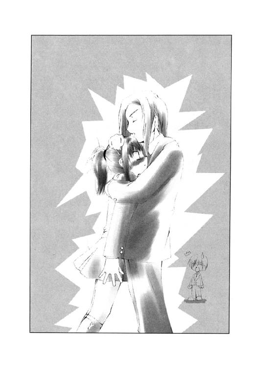
「貴博。あんまり話をややこしくしないでくれよ」
正吾はこんなに大々的に予定外のことを起こした反動を予想しかねてそんなことを言った。だが貴博は一美にひっぱたかれようとも反省などしていない。
「一度きりの人生だ。俺はもう後悔しないで生きると心に決めた」
大変真剣で素晴らしい言葉だが、さすがに時と場所を選んだ方がいいと、正吾と秋葉の二人は仲良く頭を抱える。それでも秋葉は持ち前の責任感からか行動を開始する。
「すみません。市ケ谷先輩、お話があります」
「なに？ 愛の告白ならもっと人気のないところでしてくれると嬉しいわ」
「......そうですね、ちょっと移動した方が良さそうですね」
秋葉は、もちろん愛の告白などではないのだが、状況を考えて体育館裏へと移動することにした。
そこは奇しくも、一美と貴博が別れ話をした場所であった。特に教えていなくても、そうなるのは、やはり運命の仕業だろうか。
「で、話って？」
ぞろぞろと貴博たちもついてきたこともあって、一美はイライラした口調をしていた。
「市ケ谷先輩が演劇部内で嫌がらせを受けているというのは本当ですか？」
貴博も直球すぎる直球だったが、そのあたり秋葉も負けていなかった。
「犯人がわからないから演劇部内かどうかはわからないけど」
しかし一美も回りくどいのは好きじゃないらしい。あっさり素直に答えた。
「今まで何件くらいです？」
「さあ、大小色々あったから」
「じゃあ、大きなところでは？」
「大道具に細工がしてあって、私が下敷きになりそうになったとか、照明が落ちてきて死にかけたっていうのが十回くらい」
「十回!?」
思わず正吾は声に出した。
演劇部の女の子の話ではもっとつまらない悪戯レベルなのかと思っていた、一歩間違えれば大事故になるようなものもあったとは......。
「よくケガしなかったな。まったく悪運の強い女だな」
貴博がなにやら悪態をつくような口調でそんなことを言った。
「私はそんな間抜けな嫌がらせでケガするほど鈍くないの」
「鈍いとか素早いとか以前に、照明が落下してきたらどうにもならないと思いますけど」
秋葉の冷静なツッコミ。確かにそうだと正吾もうなずく。
「......まあ、もちろん私だけの力じゃないわよ。双海がそういうのに鋭くて、何度か助けられたのも事実」
「双海ちゃんが？」
なんだかちょっと意外な気がした。おっとりした感じの彼女が、姉の危機を感じ取ってそれを助けていたとは。
しかし、なんか第六感とかは強いタイプかもしれない──という気もした。
「あとは、まあそもそも大したことないのもあったわね。下らないガセネタで脅しをかけるとか」
「ガセネタ......例えばどんな？」
秋葉が真面目に聞くのを見て、一美はちょっと意地悪く笑って見せた。それから鋭い視線を貴博に送る。
「私と貴博の本番ビデオを流出させるとか」
一美は面白かったらしいが、他の三人はあっさりと言葉を失った。
「そんなビデオあるわけないのにね、まったく」
「あるわけないって......」
正吾は一美の自信満々の態度と、急に沈黙した貴博を見てなんとなく察してしまった。
「私たち、本番どころかキスだってしてないんだもん」
「......なるほど」
嬉しそうな一美の声に反して、急に貴博は壊れたようにウゥゥゥと低い声を上げはじめた。何かまたトラウマでも直撃したらしい。動きもなんだかカクカクとしてぎこちなくなった。
秋葉はそんな貴博を一度見てから、特にそれを気にする様子は見せず、話題を切りだす。
「で、これからが本題なんですけど──」
秋葉の口調は強い。しきり直す意味があるのをしっかりと自覚しているに違いなかった。
「今日、市ケ谷先輩は、誰か──それはわからないんですが──に、このままだと殺されることになります」
「え？」
「市ケ谷先輩は誰かに今日殺されます」
さっきは信じないと言っていたが秋葉の言葉には何の疑いもない。そのせいだろうか、内容はおよそ信じがたいのだが、妙な説得力を持っていた。
「どうして？」
一美も秋葉の迫力に気圧されたらしい。
「おそらく市ケ谷先輩が文化祭でヒロイン役をやるのを心良く思ってない人の犯行です。と言っても、殺す気があるのではなく、脅しが目的なんです。犯人は市ケ谷先輩の着替え写真を持っていて、それで先輩を三河神社に誘い出すんです」
「でも脅しても聞く耳持たないので、実力行使に出られてしまう、とまあそういうことかな」
一美はそんなことあるわけないと思っているのだろうが、相変わらずの頭の冴えを見せた。
「ええ。多分」
「実にお前らしい結末じゃないか」
壊れたままの貴博が不気味な笑みを浮かべながら呟いた。
「あんたね......と言いたいところだけど、何となくからくりがわかってきたわ」
一美はそれから意外にも冷静に、自分の話を続けた。
「貴博のいきなりの行動と言い、およそそんな馬鹿げた話を信じなさそうなインテリ娘さんの行動と言い、実際に起こるかどうかはともかくも、二人とも信じているのは確かみたいね。で、まあということは、原因はあなたでしょ？」
一美は特に行動をしていない正吾のことを指差した。
「え、ええ。どうしてそう思ったんです」
「そりゃ、残り二人が怪しくないんだから、あなたしかいないでしょ」
それは自分が変なヤツに見えるという意味だろうか？──そうは思ったが、正吾は一美が話を信じてくれているようなので、思いきって本当のことを話すことにした。
「しかし、変な話ね」
自分に関する話の部分を一通り聞いた一美がそう呟いた。
「どの辺が？」
「そうね。まず私が殺されるって件。着替え中の写真なんかで私が血相を変えて、ノコノコそんな場所に行くってのが変」
「いや、そんなこと言われても」
「あと、ノコノコ出かけて行った揚げ句、あっさり殺されるってのも変。私、鍛えてるし、運動神経だって良い方よ」
「確かに言われてみると」
変な話だった。特に鍛えてもいない正吾相手に不覚をとり続けている犯人に、一美が黙って殺されるとは思えなかった。だが、現場にはあまり暴れた跡はなかったような気がする。
「どういうことなんでしょ？」
結局わけがわかわらず、正吾は一美に尋ね返した。
「なんか犯人が考えたとっておきの策でもあるのかしら？」
とりあえずその場の誰も思い浮かばなかった。
「市ケ谷先輩は犯人に心当たりはないんですか？」
「景子先輩は怪しいと思うけど、その取り巻きが犯人ということはないと思う」
「それはどうして？」
「だって、あいつら一人じゃ何もできないもの。私に一人で立ち向かう元気があるのは演劇部じゃ景子先輩だから。くだらない悪戯ならともかく、呼びだして直接脅すなんて絶対にできないわよ」
一美がそういうならそうなんだろうと、正吾は思うと、しばらく言いよどんでずっと気にしていたことをあえて尋ねた。
「ところで市ケ谷先輩。どうして、貴博と別れることにしたんです？」
その言葉に急に一美は取り乱し始めた。
「ど、どうしてって......」
「それは是非、俺も聞きたいな」
急にさっきまで壊れていたはずの貴博が元気になった。意地悪そうに、うろたえている一美の顔を覗き込む。貴博はもうこれ以上、ダメージなど受けるはずがないという開き直った強さを感じさせていた。
「こういう状況になっちゃうと意味がなくなっちゃったんだけどね──」
一美は正吾と貴博の視線に観念したように、その口を開いた。
「貴博にまで嫌がらせの手が伸びたら嫌だなって思ったからよ」
「なんだよ、それ？」
すっとんきょうな声をあげて、貴博が尋ねた。
「女同士ってのはけっこう陰険なのよ。私が演劇部で活躍しようとするせいで、貴博がケガしたりしたら、私、辛いのよ」
一美は頭をくしゃくしゃにするほどかきむしる。言っててどうしようもないほど恥ずかしくなったらしい。
「なんだ、お前、ちゃんと俺に惚れてたんだ」
貴博が我ながら驚きだという感慨を込めて言った。
「な、なにそれ？ 私からつきあってくれって言ったんでしょ。なのに、どうしてそんな風に思うのよ」
急に恥ずかしさを忘れたのか、一美は貴博に食ってかかる。
「まあ、それはそうなんだけどな。そうか、俺ってちゃんと惚れられてたのか」
「ちょ、調子にのるんじゃないわよ、貴博。第一、あんたなんかちょっと人格変わってるんじゃない？」
「変わったんじゃない。元の通りの自分に戻っただけだ」
なにやら誇りを取り戻して、貴博は堂々とした態度で一美の方を見つめた。
「なんで、こんな男に惚れたんだか」
呆れながらも一美はそんなに悪い気分ではないらしく、口元だけは笑っていた。
「とにかく別れ話の一件はナシ。あんたは私のことを命がけで守りなさい」
「言われるまでもなく、そうするつもりだったがね」
ニヤリと笑って貴博が一美をまた見つめ返した。
「やっぱり人格変わったんじゃないかな......」
正吾はそんな貴博を見て、素直な感想を述べた。よく見ると秋葉もその隣で小さくだがうなずいていた。
○
始業時間が近づいていたので、正吾たちは一美と別れて教室へと向かった。
途中、三人の話題は、犯人は一体、誰なのだろうか？──ということだった。
その疑問の答えは、未だに出ていない。それでも貴博はもう勝手に広尾景子が犯人だと決めつけているらしい。
「演劇部の中で行動力のある人間しかない。それを考えれば広尾景子以外にいないだろ」
「私もそう考えるのが妥当だと思う」
秋葉もそれに賛同した。しかし表情は暗かった。
「俺はそうとは思えないんだ」
正吾は、どうも何か忘れているという気がずっとした。おかげで胸騒ぎが納まらない。
「なんか忘れてるような気がするんだよな。なんだろう？」
「それは犯人に関係あること？ それとも......」
正吾は秋葉の言葉を聞いて、犯人以外のことを考え、不意に思い当たった。
「あ、そう言えば、花瓶......」
一美との話で夢中になっていたが、あのなんとしても割れてしまう花瓶のことをしっかり忘れていた。
「花瓶？」
「あの教壇の上の花瓶。あれ、朝のうちに割れるんだ、なぜか」
しかしそう言ってから、以前に割ったことのある二人が教室にいなかったので、もしかしたら割れなかったかもしれないとも思った。
二人を味方につけることで、運命を変えることができた。もしそれが本当なら、花瓶が割れるという運命だって......。
──変わるはずだ
そう期待して教室に戻ってきたのだが。
「あ、委員長～」
やってきた秋葉に困った顔でクラスメイトが話しかけてきた。
「花瓶が割れちゃったから、片づけてよ」
「......割れてたね」
秋葉は正吾が暗い顔をしているのを見て、そんなことを呟くと、彼女らしくない笑みを浮かべた。それは空元気でもいいから持った方がいいという彼女なりの励ましの行動だったのかもしれない。
「うひゃああ、ヤバイヤバイ」
そんなところにドタドタと走って現れたのは千尋だった。なにやらかなり真剣に息を切らしている。
「何がヤバイの？」
貴博が千尋のボサボサになった髪を見ながら尋ねるのが聞えた。
「いや、あやうく遅刻するところだったから」
「千尋が遅刻しかけるなんて珍しいな」
貴博のそんな言葉が、正吾の心に残った。しかしその時の正吾にはそれがどうしてなのかはわからない。彼はまたある重要なルールを忘れていたからだ。
○
午前中、正吾は自分がなぜ不安を憶えているのかをずっと考えていた。しかし答えは見つからない。それが彼を焦らせる。
正吾の抱える不安に特に理由などないのかもしれない。今回は貴博も秋葉も一美も味方なのだ。犯人がわからなかったとしても、事件を未然に防ぐくらいはできる気がした。
しかし運命はどこかで牙を剝いてくるかもしれない。
放っておけば三人が死ぬ。その運命にあらがうのは決して簡単ではないのだ。
二回目のやり直しの時、何もされないように遠ざけていたのに、秋葉が現場に来てしまった。その時のことを考えると、宿命には変えられない部分と変えられる部分があるのだと思えてならない。
そしてなんの光明も見いだせないまま、昼休みを迎えた。
「貴博、ちょっと！」
ほどなくして一美がやってきて、教室の前の方の扉から貴博を呼ぶ声が聞えた。貴博は正吾と秋葉も連れ立って一美の話を聞きに行く。そこに千尋も続いた。
「......なんで、みんないきなり仲良くなってんの？」
「お前が遅刻しかけている間に、ちょっとしたイベントがあってね」
貴博はふふふと笑うと一美の方を見た。
「ふーん。まあいいけど」
千尋はまあワイワイとしていれば、それで良かったらしい。
「で、話というのはこれなんだけど」
一美はそう言って、ズタズタに引き裂かれたドレスを取りだした。
「青山クンの言った通りになったってことかな」
「ですね」
正吾はふとドレスに関する疑問を思いついた。
「先輩、そのドレス、いつまでは無事でした？」
「朝練の時はまだ無事だったけど──」
一美は言われて、何か重要な質問のような気がしてこめかみに指を当てながら、じっくりと考え始めた。
「授業中に関してはわからないわ」
「そのドレスの異常に気づいたのは誰です？」
「それは双海よ。双海は衣装係だから、衣装の管理の仕事もしてる関係で」
「まあ、そうですよね」
正吾はそれから、実に短い時間でドレスを切り裂いているという事実に気づいた。
だが奇妙な話である。一回目の昼休みに広尾景子が言っていた通り、衣装の管理は衣装係の仕事である。部室である美術室は確かに授業中も開いており、入ることは誰にだってできる。しかし衣装箱をあけて衣装を出せるのは限られた人間だけだ。
まあ、それも演劇部そうぐるみの嫌がらせだと考えれば、特定できないのをいいことに悪さしたというだけかもしれない。衣装係は双海以外にも三人はいるらしい。その誰かが協力すれば、そんなに難しい話じゃないのだろう。
「ん？」
ふと衣装の間から紙切れが舞い落ちた。本当に紙切れで、ノートのキレはしのような小さくてみすぼらしいものだった。
それを拾ったのは貴博だった。かなり字が読みづらいのか彼は難儀しながら読む。
「六時半に三河神社まで来い。さもないと、お前の他人に見られたくない写真をばらまかせてもらう」
読み終わる前に貴博が怒りに支配されていくのが傍目にもわかった。
「なんだ、この写真ってのは？」
「ああ、きっと市ケ谷先輩が着替えている写真。えっと......」
千尋はいつもカバンを持ち歩いているらしい。ごそごそとカバンの中を探して、問題の写真を取りだした。
「む」
じっと貴博が見ているのだが、ふとその異常さに気づいて、一美がさっと取り上げた。
「まったく、なんであんたが堂々と見ているのよ」
「まあ、それはそれとしてだ。なんで、千尋が持ってるんだ？」
「新聞部の先輩が部室の近くで拾ったからもらったんだ」
千尋はいまいち状況を把握していないらしい。のん気な態度を崩さない。
「新聞部の部室って言うと、演劇部の近くだよな」
「うん」
千尋と貴博が話している間に、またドレスの間から紙が抜け落ちた。今度は写真だった。脅迫文の内容を補強するための材料に違いなかった。今度は一美がいち早く拾う。
「写真の感じが似てるから、同一犯の仕業ね」
「場所は部内の更衣室ですよね？」
改めて確認する意味で正吾が尋ねる。
「え、えっと。うん、そうね。この辺りももう調査済みってわけ？」
「まあ、もう四度目ですからね」
正吾が苦笑したところで、貴博はガッと大声を上げる。
「とにかく、もう広尾景子を締め上げるしかないだろう！」
「無駄よ」
しかしあっけなく一美はそれを却下する。
「どうせ口を割ったりしないわよ。そこまであの人だってバカじゃないわ」
「じゃあ、どうするんだよ」
「尾行でもしなさいよ」
「......地味だな」
「捜査ってのはそもそも地味なものよ」
貴博をそう言ってなだめると一美は、正吾と秋葉の方を見た。
「で、私たちは今日は現場に近づかなければオッケーなわけでしょ？」
「いいんですか？」
秋葉が心配そうに尋ねる。
「何が？」
「言う通りにしないと写真が......」
「いいんじゃないの、別に」
一美はあまり気にしてもいない様子を見せた。だが貴博は大変憤慨している。
「俺は嫌だぞ。自分の彼女の半裸写真など配られたくない」
「まあ、本当にそこまでする気が犯人にあるとは限らないし」
一美は貴博をなだめるようにそう言うと、にっこり笑って、それから貴博のオデコにキスをした。
「もし写真が配られるようなことがあったら、その日のうちに貴博には全裸でもなんでも見せてあげるわよ」
「いや、そういうことじゃなくてだな。俺以外のヤツに見られたくないって話をしてるんだ」
「ふーん」
一美はニマッと笑みを浮かべる。
「あんたもちゃんと私に惚れてたんだ」
「いや、これは別に愛とか恋とかそう言う話ではなく、単なる男の欲望の一つ、独占欲の話で......」
「まあ、言い訳はしなくていいから」
一美はそれから貴博にちゃんと景子を見張れと命令して、一旦、部室の方に戻ると言い残してその場を去った。
「あ、そう言えば......」
そしてそんな一美をぼーっと見送った正吾はふと思い出し、千尋の方を振り返った。
「千尋。次の授業はカメラを持ってた方がいいかもしれないぜ」
「なんで？」
千尋はそう反射的に尋ねてみたものの、特に正吾の返事は待たなかった。別に言われるまでもなくカメラはいつでも持っていたかったからだ。
○
千尋のカメラがシュートの瞬間を捕えたのは、もちろん次の授業中のことだ。
「これは良い写真が撮れたみたいね」
千尋は貴博の二本のシュートの後の正吾のシュートの写真まで撮るとニコニコと笑わずにはいられない様子だった。それを体育館の外に向かった扉、千尋の隣で見ていた秋葉は、そんな彼女とは違って少し曇った表情を見せていた。
「真鶴さん、さっきのもちゃんと撮った？」
秋葉が何も言えないでいるうちに、他のクラスメイトが千尋に尋ねる声がした。
「あ、うん。バッチシ」
「じゃあ、赤井くんのも含めて焼き増ししてよ」
「お望みならいくらでも」
千尋がそう言うと、さらに他のクラスメイトたちも写真の焼き増しを頼み始める。秋葉はそれになんだか取り残された形で、千尋の横に立っているだけだった。
「乃木坂さんはいらないの？」
一通り注文を受け終えて、千尋は秋葉に無邪気に尋ねる。秋葉は自分の名前に驚いたように、一度止まるとゆっくりと千尋の方を振り返った。
「私は別にいいです」
「なんで？ 別に法外なお金とか取らないよ。乃木坂さんは実費だけでいいから」
千尋は途中から秋葉の耳元で囁くようにそう言った。他のクラスメイトからはまるで法外な料金を取るつもりでいるように秋葉は感じる。
「クラスメイトの写真を集める趣味なんてないですから」
「......そうなんだ」
千尋は秋葉の答えがいかにも不満であるように、目を伏せる。それがあまりに突然だったので秋葉は驚いてしまう。
「乃木坂さん、ショーゴや貴博と仲良くなったのかと思ってたのに、別にそういうわけじゃなかったんだね」
視線を落としたまま千尋が呟くのが聞えた。突然、周りの空気が冷えたように感じる。
「ど、どういう意味？」
わけがわからず秋葉がそう言うと、千尋はぐっと目線を上げて秋葉を睨むように見つめた。
「私、乃木坂さんと友達になれるかなって、ちょっと嬉しかったの。でも乃木坂さんはそういうつもりじゃないんだなとわかったから、悲しいと思った。それだけ」
「......私は別にそんなつもりじゃ」
「でも、ショーゴや貴博は友達だと思ってないんでしょ？ クラスメイトの写真だからいらないって言ったんだから、そうなんだよね？」
「そう......ですね」
秋葉は千尋がなんだか酷く怒っていることに気づき始めた。千尋はいつもマイペースでニコニコしているイメージだった。秋葉は、そのギャップの意味を理解できない。
「乃木坂さんはズルイ」
「ズルイって、何がですか？」
「だって、そうだよ？ 私が知らないところで、市ケ谷先輩の相談に乗るってことは、乃木坂さん、私より信頼されてるってことだもん。私はショーゴや貴博と友達、でも乃木坂さんはただのクラスメイト。なのに、なんで乃木坂さんの方が信頼されてるんだろ」
途中から千尋の声はしぼむように小さくなっていった。秋葉は彼女の言葉に返事ができず、彼女を見つめていることさえ辛いと感じ始める。
──そんなつもりじゃなかったんです
秋葉は口にできない言葉を心で呟いていた。しかしそれでは千尋には届かない。
「ご、ごめんなさい」
気づくと秋葉はそんなことを口にしていた。今度は驚いたのは千尋の方だ。
「なんで謝るの？」
「私、その......真鶴さんと友達になりたいです」
秋葉は真剣な顔をしていたに違いなかった。それが自分でもわかる。千尋の顔が見る間に変わっていく。怒っている顔から笑顔に。
「本当？」
「本当です。でも、ちょっと仲良く話したくらいで、友達とか言うと馴れ馴れしいかなって思って。本当は青山クンや赤井クンの写真も欲しかったんだけど......」
「恥ずかしかった？」
「あ、はい」
秋葉は指摘されて何だか改めて恥ずかしくなった。それが顔に出たらしく、千尋が気づいて笑いをこぼした。
「乃木坂さんってカワイイよね」
「え？」
「うん。なんかいかにも女の子ってカンジ。ショーゴの好みのタイプかな。そんなこと言われても嬉しくないかもしれないけど」
ニヒヒというカンジで千尋は笑うとくるりと秋葉の前で回って見せた。
「そ、そうなんですか？」
「うん。あんまり話したことなかったから気づかなかったけど。私なんか話せば話すほど、男っぽいって思われる方だから、ちょっと羨ましいな」
「そうなんですか？」
「残念ながら、そういうことなんだよね。ショーゴも貴博も私のこと女だなんて思ってないもん。まあ、だからあの二人といると楽しいってこともあるけどさ。えへへ」
秋葉は千尋が無邪気に笑っているのを見て、少し安心している自分に気づく。それでチクリと胸が痛むのを感じた。
それから二人は教師がさっさと戻って来いと自分たちを呼ぶ声を聞いた。だから話を切り上げて、バレーコートに戻ることにした。
○
──何か忘れてるルールがある
正吾はそんな気分をずっと引きずったまま放課後になってしまった。
ルール。トーカがそんな言葉を言っていたような気がするが、正吾には思い出せなかった。大事だから憶えておけ、と言われたのに、それが何だったか忘れていたらしい。
秋葉は一美の方に張り付き、正吾と貴博は景子の尾行をしていた。
「なんだか少しも怪しくないぞ。大丈夫なのか？」
貴博は何にも起きないのでイライラしているのを少しも隠そうとしない。尾行と言っても景子はずっと部室で練習しているだけなのだ。外に出るヤツを見張って、彼女が出て来てどこかに行こうものなら追跡する。それだけである。
しかし景子は大変練習熱心で、ずっと部室で頑張っている。追跡する必要さえなかった。
そして結局、何も起きず二時間が過ぎてしまった。
「俺たちが動いているのに気づいて計画を変えたのかもしれない」
正吾はそう答えてから、やっと一つのルールを思い出した。
正吾と犯人だけが十月一日を繰り返していると自覚しており、自分の意志で変えられるのはこの二人だけ。
このシンプルにして明快なルール。これは逆に考えれば、自分以外の人間が運命を変えていれば、それは相手が犯人だということを意味していた。
「それが、なんの意味があるんだ？」
貴博は理解できないという顔をしていた。確かにそれは無理もない。実際に繰り返している人間でもなければそれに気づく余地もないのだから。
「今日の朝、不思議なことが起こったんだ。およそありえないことが」
「朝？ なんだっけ？」
「千尋が遅刻しかけた」
正吾がそれを言った瞬間、貴博が顔を引きつらせた。
「千尋が犯人だってのか？」
「千尋は一回目は俺が乃木坂さんと一緒に歩いているところに追いかけてやってきた」
「パンチラの前、後？」
貴博が話の腰を折るようなことを尋ねる。しかし時間の確認のためには必要な質問ではあった。その時、今回は貴博は側にいたからだ。
「後。というか直後だった」
「それで？」
「二回目は乃木坂さんと会うまいとして家を早く出た時、広尾景子とその取り巻きを見かけた後だった。一回目は八時過ぎ、でも二度目は八時十分前ぐらいだった。なのに、すぐに千尋に会った。この時点でおかしいと気づくべきだった。明らかに千尋は登校時間が変わってる」
「それで、今日は遅刻寸前で登場。確かに三回とも時間が違うな。でも、なんで千尋が一美を殺したり、乃木坂やお前を殺すんだ？」
「それはわからない。でもルールに従えば、千尋が犯人としか思えない」
正吾はそう言うと、その場を離れる覚悟を決めた。広尾景子はシロなのだ。そこにいる理由などもう何もない。
そのはずだった。
○
千尋のいる新聞部の部室は、演劇部の部室から極めて近い。同じ四階の書道室だったから。
「千尋、いるか？」
謎を解いたのは正吾だが、そう叫んで部室に走り込んだのは貴博の方だった。
一美の手前なんとかして活躍したいと思っているらしい。正吾はと言えば、事件が解決さえすればそれでいいので、それぐらいは譲ってもいいと思っていた。
「どうしたの、二人して、おっかない顔しちゃって。写真ならまだ現像できてないけど......」
千尋は入口からほんの数メートルの距離にいた。貴博は問答無用で千尋を捕まえるとそのまま廊下に引っぱりだした。
「そんなに急いで現像して欲しかったの？」
千尋は貴博の剣幕に驚きながらも、静かに尋ねる。しかし貴博はいかにもそんなことは興味がないという様子で千尋を睨んでいた。
「全ての謎は解けたんだよ、千尋」
貴博が少し声のトーンを落としてそう呟いた。
「謎って、どの謎？」
しかし千尋はまったくマイペースであった。
「市ケ谷一美、乃木坂秋葉、青山正吾の三人を連続して殺した犯人が誰かという謎だ」
「え？ ショーゴ死んだのッ......って、ここに生きているじゃん」
「トボけるな、千尋。もうネタは上がってるんだ！」
なんだか刑事っぽいキャラが入っているらしい。今朝からどうも貴博は精神が実は不安定になっているんじゃないかと、正吾はいらぬ心配を覚えた。
「......新手のギャグなの？」
「ギャグじゃない。真面目な話だ」
「でも、さっきからなんか無茶苦茶だし」
「うぅ。お前に冷静にツッコマれると大いに不安になるなあ......」
あまりに手ごたえがないので貴博は、正吾に水を向ける。
「大丈夫なんだろうな、本当に」
「いや、大丈夫なはずなんだけど」
しかし正吾もさすがに不安を憶えた。千尋がマイペースなのはいつものことだが、ここまでとぼける理由がわからない。
そもそも三人の死は、事故なのだということは知ってるはずだ。これで全てが解決するなら協力を惜しむ道理もわからない。
仕方がないので、千尋にもルールを説明をすることにした。もしかしたら、何かのショックで記憶を失っているという可能性もあったからだ。犯人という自覚もなく、運命に導かれて殺人を繰り返しているという考え方も十分にありえた。
いや、むしろ──正吾はそこまで考えて気づく。犯人はひょっとしなくても、憶えてないんじゃないだろうか？
望まぬ殺人を繰り返すのはその自覚がなく、結局、運命通りに人を殺してしまっているだけなんじゃないだろうか？
一度目の正吾がそうであったように。憶えていたくないから忘れており、同じ経緯で一美と秋葉と自分が死ぬことになってしまった時のように......。
千尋はただ無意識にそれから逃れたくて、あがいているだけ、なのかもしれない。
「千尋はどうして今日、遅刻したんだ？」
「そ、それは......」
さっきまでの千尋のペースが急に乱れるのを正吾は感じた。それは貴博も一緒だった。ついに謎の核心に迫ったという緊張感が二人を包む。
「実は癖毛が爆発して、大変なことになってたから」
単に恥ずかしかっただけらしい。貴博はまたしても肩透かしを食らった、と思った。
しかし正吾はそうは思わなかった。これこそ動かぬ証拠だと、確信する。
「それはおかしいんだ。そんなことが起こるはずがないんだ」
正吾は千尋を睨んでいた。
「どうして？」
「俺と犯人以外は自分の意志で運命を変えることはできない。というよりすでにえらんだ運命通りに同じことを繰り返すんだ」
「それは聞いたけど」
「俺が最初のやり直しをした時、千尋は癖毛が爆発したりはしなかったし、遅刻しそうにもならなかった。俺と乃木坂さんと一緒にちゃんと登校したんだ。それはつまり俺の行動によって影響を受けないかぎり、千尋は乃木坂さんと一緒の時間にちゃんと登校する運命を進んでいるってことだ」
「そういうことになるかな」
「もし、運命通りに進まず、自分の意志で動いてるなら、それは犯人以外にありえない。だから三日続けて行動が違う、千尋、お前が犯人なんだ」
「えっと、そうなの？」
千尋はそう言われてもなんの驚きも変化も見せなかった。
「実はね......」
おかしいと思って彼女をじっと見つめたとき、ついに千尋は衝撃の告白を始めた。
「私、ショーゴと一緒に登校したくて、今日はショーゴの家まで行ったんだ。ほら、衣替えが嬉しくてさ、最初にショーゴに見せてあげようかな～っと思って」
「は？」
風向きがおかしくなってきた。正吾は千尋の言葉を聞き逃すまいとして、意識を集中する。
「けっこう早い時間に出かけたんだけど、全然ショーゴが出てこないんだよ。で、待っている間に時間がなくなって、遅刻しかけたわけ」
「......ってことは」
正吾は、そう言えばと思い当たる節があった。一度目と二度目、家を出た時、誰かがこっちを見ている気配を感じた。だが三度目は感じなかった。
あれは千尋の視線だったのだ。
「でも、きっとショーゴが出てきても、一緒に行こうとは言えなかったんじゃないかな。だから出てこないで良かった～とか思ってたんだ」
千尋は邪気のない笑顔でテレながら話を続けていた。
つまり一度目も二度目も、千尋は家の前で待っていたが話しかけるチャンスを持てず偶然を装って正吾に合流したということらしい。
だから彼女の登校時間は三回ともバラバラだったのだ。これは彼女の意志ではなく、正吾の行動の結果だ。
だから千尋は犯人ではないが、登校時間を変えることができたのだ。
「おい、じゃあ犯人は誰なんだよ？」
貴博が素に戻っていた。外を見ると暗くなりかけていた。危険な時間帯にさしかかっている。
「まさか？」
二人は嫌な予感を憶えて演劇部の部室に戻る。
広尾景子はいた。しかし一美も秋葉も、そして双海もいなかった。
「どういうことだ？」
「あの......」
二人の剣幕に驚いて、演劇部の部員の一人が一枚の紙切れを見せてくれた。
そこにはこう記されていた。
大事な妹を帰して欲しければ、例の場所に今すぐ来い。
「大事な妹......」
正吾の頭の中で謎のいくつかが一気に解決した。
「写真でもどんな脅しにも屈しなかった市ケ谷先輩の弱み。それは......」
「双海ちゃん、か」
貴博と正吾はそれを確認すると、階段を駆け降りて神社を目指した。
「大事な妹を帰して欲しければ、例の場所に今すぐ来い......」
正吾はその文面を反すうした。
──今すぐ来い
この文面を見た時、一美は本当にすぐに向かったはずだ。途中で自分たちが見つかる位置にいれば話しかけたかもしれないが、相手を刺激することを恐れて一人で行って全部一人でなんとかしようと考えそうな気がした。
「それじゃダメなんだ、それじゃ......」
──きっと、もっと多くの人がハッピーになれる運命に変えられるよ
走る速度を上げながら、正吾はトーカの言葉を思い出す。どうしてトーカがそんなことを言ったのか、正吾はやっと理解した。
今日を無事に乗りきって、それからも頑張れる──そんな応援のメッセージかと思っていた。しかしそうではない。
この言葉は、トーカの精いっぱいのヒントだったのだ。
──きっと、もっと多くの人がハッピーになれる運命に変えられるよ
正吾や秋葉、一美だけでなく、他の人たちも助けること。それが本当の答えだったのだ。それを見つけてくれと、トーカは言ってくれたんだ。
「......雨だ」
昇降口から外に出た正吾と貴博にパラパラと雨が降ってきた。
「一美っ！」
それは二人に一美の死を予感させる雨だった。
○
「双海！」
正吾と貴博が昇降口を出た頃、一美はもう現場にたどり着いてた。
灯のついたその建物の扉をバンッと開いて、そのまま中に入る。秋葉はその後を息を切らしながら追いかけるのがやっとだった。演劇部のヒロインを張るだけあって、一美の体力は特に鍛えていない秋葉とは比べ物にならない。
「ソコデ、止マレ！」
部屋の奥から不自然な声が聞えた。かなり大きな声だ。ヴォイスチェンジャーだろうか。電子的に変換された声だった。調整が甘いのか時々、割れて耳障りな音をたてる。
「双海は無事なんでしょうね？」
一美が立ち止まるのが見えた。暗がりの中にいる秋葉から見ると、部屋の照明のせいで一美は逆光に見える。
「無事ダ。オ前ガ、コッチノ言ウ通リニシテイル限リナ」
「......そう」
一美が少しだけ安心した顔を見せた。これから犯人に立ち向かうにしては堂々とした態度だった。秋葉からは犯人の姿は見えない。しかし一美が視線を動かさないところを見ると、犯人を注視しているのかもしれない、と秋葉は思った。
「随分と小さいのね。こんな下品な手を使うから男かと思ってたけど」
一美は秋葉の考えを察したのだろうか、そんなことを話す。そして入口の方の右手で──おそらく死角になっているのだろう──秋葉に離れろと合図を出した。
秋葉はその仕草を見て躊躇する。彼女を一人にしていいのだろうか？ 犯人を刺激しないためには自分の存在は知られない方がいい。しかし、事件が起きたのと同じ状況に近づけるのはもっと危険な気もした。
「どうすればいいの、正吾クン」
秋葉は静かに正吾に尋ねる。もちろん答えが返ってくるはずもない。正吾はここにはいないのだから。
「男ジャナイノニ、コンナ写真ヲ嬉シソウニ撮ルカナ？」
部屋の中から、割れた声が聞えた。一美の指摘に不満を覚えたのだろうか。しかし感情はあまり伝わってこない。
しばらく静かになった。どうやら犯人はその写真を秋葉の前にばらまいて見せているらしい。
「まあ、背が低い男って考えることもできるけど」
対して一美の声には冷静さが感じられた。状況的にはともかくも一美が優勢な気がする。
「誰カイルノカ？」
不意に犯人の声が響いた。
秋葉はドキリとして、入口から死角になっている方へと移動しようとする。水がたまって柔らかくなり始めた土が少し音を立てた。
──聞かれた？
秋葉が不安に顔をゆがめる。それを知ってか、一美が口を開いた。もう秋葉のいる場所からは一美は見えない。
「さあね。気になる？」
「言ッテオクガ、俺ヲ、ドウコウシヨウタッテ無駄ダカラナ」
犯人は一美の質問には答えず、いっそう低い声でそう告げた。
「自分が無事に帰らなかったら、仲間が双海にひどい目にあわせるから──かしら？」
一美は双海が見当たらないことから、それを推理したらしい。秋葉は彼女の頭の回転に驚かされた。
「で、言う通りにしろって言うけど、どうすればいいわけ？」
一美がゆっくりと尋ねた。双海が人質にとられている以上、一美としては全面降伏ということらしい。秋葉はそれに気づいて、双海を探しだすことが先決だと思う。しかし手がかりらしい手がかりが何もない。正吾の話の中にもそれらしいヒントは何もなかった。犯人に双海が人質にとられたことや、仲間がいたことを正吾は知る機会はなかったのだから無理もない。
「ソウダナ......」
犯人の無意味に大きな声が響く。
「トリアエズ、二人デすとりっぷデモシテモラオウカ」
秋葉はその言葉に恐怖した。思わず息を飲む。
犯人ははっきりと『二人』と言った。犯人は自分の存在に気づいているのだろうか？
「二人？ って、ことは双海も近くにいるのかしら」
しかし一美の言葉に、そういう可能性もあることを思い出す。それならこの状況を回避するチャンスになるかもしれない。しかし──。
「俺ガ言ッテイルノハ、ソコニ隠レテイルやつノコトダ」
秋葉は今度はあまり驚かなかった。逆に不安の理由が消えてすっきりしたという感じだ。
無論、これから自分が何をさせられるのかと思えば、恐いと言えば恐い。でも、それでも何をすればいいのか悩んでいるままよりは、ずっとマシのような気がした。
「隠れているヤツ？」
秋葉の考えよりも先に一美は次の一手を打つ。犯人がブラフをしかけている可能性はあった。それを一美はさらなるハッタリで返そうとする。
「眼鏡ヲカケタ女ダ。入口ノトコロニ隠レテイルンダロ？」
だが犯人はすぐにブラフじゃないことをハッキリと告げた。どうやって知ったのかはわからないが、秋葉の特徴もしっかりと摑んでいる。名前を言わないところを見ると、秋葉とはあまり面識のない人間らしい。
「乃木坂さん。悪いけど、入ってきてくれる？」
一美が言った。逃げてしまえば逃げられるかもしれない。しかしそうなると犯人を刺激してしまう。双海の居場所がわからない以上、素直に言う通りにするしかない。
「......わかりました」
それでも秋葉はなるべくゆっくり移動しようと努める。時間を稼いでいれば、正吾が異常に気づいてきてくれると思っていた。来たところで、今の自分同様に何もできず犯人に言われるままにされるだけかもしれない。
でも正吾が来ればなんとかなる──秋葉はそう思っていた。
「ごめんなさいね、乃木坂さん」
彼女の顔が見える場所に移動すると、一美が申し訳なさそうな顔をしているのが見えた。一美の性格を考えれば、人に迷惑をかけるなんて望むところではないだろう。しかし、それでも双海を助けるためにはそれを辞さない覚悟なのだ。そう秋葉は感じた。
「サッサトシロ！」
犯人がまたいっそう低い声をあげる。
「わ、わかりました」
秋葉はそう言うと足を速めた。また水たまりを踏んで音がする。
それから秋葉は犯人のいる建物の中に入った。一美のいる場所へと歩いたところで、犯人は一美にもう少し横に移動するように命令する。秋葉が自分の死角にいるのが気になるのだろう。
「せっかくなら、もう少し近くで見た方がいいんじゃないの？」
「コノ距離デ十分ダ」
犯人のそんな声が聞えた。
一美に合わせて移動すると、犯人の姿が秋葉にも見える。
犯人は演劇部の部室で見た劇用の悪魔の衣装を着ていた。ひらひらと袖や裾の長い服だ。あまり動くことを考えると適切とは思えない。体格や顔を隠すためのものだろう。
秋葉がその衣装を記憶しているということは、今日の放課後まではあの部室にあったことを意味していた。つまり双海を連れ去る時にでも好都合だと思って持ち出したのだろう。
背も一美が言うようにかなり小さい人物のように見えた。女だとしても小さい方かもしれないとさえ思えた。
「裁ちバサミ......？」
秋葉は犯人が脅すために持っているゴツイはさみに気づいた。人を脅すためにはあまり適切な凶器とは思えなかった。無論、刺されれば十分に致命傷を負うが、それを直感させるにはあまり良いとは思えない。双海を連れ出してまで一美を脅す以上、それなりの計画的な行動なはずなのに、なぜ凶器はそれを選んだのだろう？
一美もその言葉に秋葉と同じことを思ったらしい。
「ところで、入口は閉めてもいいかしら。関係のない人が通りかかったら、ちょっと目立ち過ぎじゃないかしら？」
「ソウダナ......オ前ガ閉メロ」
犯人は一美を指さした。秋葉の方が出口に近かったが、あえて一美にさせたということは何か意図があるのかもしれない。
秋葉はきっと自分が逃げるのを防ぎたいと思ったに違いないと考えた。一美は双海のために逃げることはできない。だが秋葉は他人だ。犯人の姿を見た秋葉が突然逃げ出したくなる危険を考えたのかもしれない。
「そうか」
秋葉は小さく呟いた。犯人は双海を人質にとってはいるが、それでも捕まる恐怖と戦っている。それに彼女は気づいた。
だが、ドアを閉めて振り返った一美の顔を見ると、やはり自分だけ逃げることは秋葉にはできそうになかった。悲壮な決意をした表情が見えた。しかも一美はそれに気づかれたと思ってすぐにいつもの笑顔に戻る。
一美も不安なのだ。強気な態度は見せているが、それでも本心は不安なのだろう。彼女もその不安と戦っているのだ。
秋葉はしっかりと一美を見て、小さくうなずいた。
──大丈夫です
そう言いたかった。でも言わずに視線にそれをこめた。
「サア、脱ゲ」
犯人は一美が戻ってくるのを確認して、そう言った。ハサミをつきだし、脅しをかける。
「そんな脅さなくても、ちゃんと脱ぐわよ」
一美は言うが早いかブレザーの前ボタンを外した。秋葉もそれにならう。
「ごめんなさいね」
脱いだブレザーを床に落としながら、一美が小声で秋葉に呟いた。
「気にしないでください」
秋葉もそれにならう。
「きっと、なんとかなります」
小さな声だが迷いはなかった。それを自分の耳で聞きながら、秋葉は意外に自分が冷静なのに気づいた。
犯人は一人。双海のことは気にはなるが、この場で二人が刺されて死ぬというのは、およそありえないと感じた。犯人に殺意がないのは、正吾から聞いているから知っている。それを一美だって知っているはずだ。
「ソレ以上ハ脱グナ」
一美が下着姿になったところで、犯人が急に叫んだ。秋葉はスカートは脱いだが、まだワイシャツはまだ脱いでいなかった。
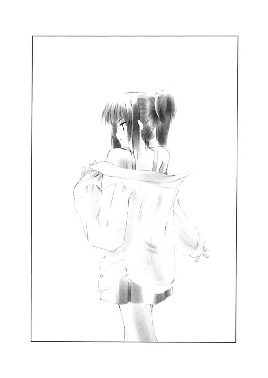
「下着マニアなのかしらね、この人は？」
一美はじっと犯人の方を見返した。しかし犯人は今度は秋葉の方を見て、低くうめくように命令する。
「オ前ハ、マダ脱ゲ」
「はい」
秋葉は一美の言ったことが気になっていた。
──下着マニアなのかしらね、この人は？
おそらく自分も下着姿になったら、もう脱ぐなと言われる。そんな気がした。
「ソレ以上ハ脱グナ」
そして案の上、犯人はそうして、服の下から出したカメラで二人の写真を撮り始める。幾度となくフラッシュがたかれるが、なんとなく他人事のような気さえした。犯人の行動が事務的に感じられたからかもしれない。
「コレヲ、バラマカレタク無ケレバ、ひろいん役ヲ降リロ」
犯人はじっと一美の方を睨んだ。一美はしばらく黙っていたが、それでもはっきりと否定の言葉を口にする。
「それには従えない」
「ドウイウ、ツモリダ？」
「双海だって、それを望んでいるはずよ。写真をばらまきたいならばらまけばいいわ。ばらまかれたら、きっと私はヒロインの座を奪われるでしょうけどね」
一美はじっと犯人を睨む。それに犯人はビクリと震えたように、秋葉には思えた。女二人を下着姿にして、写真まで撮ったというのに、立場はむしろ逆転しているように思えた。
「ドウセ、ひろいんノ座ヲ奪ワレルノナラ、ココデ降リルト言ッタ方ガイイト思ウガナ」
それでも犯人は低い割れた大きな声を響かせた。
「かもしれない。でもね、脅されたくらいで諦めたんじゃ、双海に会わせる顔がない」
「言ウ通リニシナケレバ、ソンナ心配スルダケ無駄ニナルンダゾ」
犯人は改めてハサミをつきだし、一美を脅す。
「そうね。でもそうなったら何があっても、私はあなたたちを追い込むわよ。どうせそんな大した勇気はないんでしょ？」
「ナ、ナンダト？」
犯人は一美の挑発的な台詞に過敏に反応した。
「それにさっきから観察させてもらったけど、やっぱりアナタ、男じゃないわね」
一美の言葉に犯人はビクリとまた震えた。
「もし男なら全部脱がせるはずだわ。その方が私たちの自由を奪えるし、写真をばらまくという脅しだって効果的なはずよ。私の下着姿の写真くらい、あなたはもう何枚も持っているんでしょ？ わざわざ途中で止めたのも怪しすぎる」
一美がそう言いきると、沈黙が広がった。
秋葉も一美の言葉通りだと思った。一美を脅すなら、今まで以上の弱みを握る必要がある。秋葉の下着姿がそんなに効果のあるネタとは思えない。秋葉と一美がさほど親しくないと知っているからこそ、ドアを一美に閉めさせたはず。
それに双海をさらったなら、彼女の写真を撮って、それを一美に見せた方が効果的だろうと秋葉は思った。自分の写真よりも、きっと双海の写真をばらまかれることを一美なら気にするはずだ──犯人はそれに気づかないほど、一美のことを知らない人物であるとは思えなかった。
「モノゴトニハ順序ガ、アル。ソレダケダ」
だが犯人はそう言うだけだった。動揺しているのかは、音質が悪くて伝わってこない。
「次ハ裸ニナレ」
ジリジリと犯人が近づいてくるのが見えた。秋葉は犯人の言葉とその行動にさすがに恐怖を覚えた。
「あなた、仲間と連絡をとる方法がないみたいね」
だが一美はそんな犯人を冷静に観察していたようだ。一美の言葉に犯人の動きが止まる。
「ナニヲ根拠ニソンナコトヲ言ウ？」
「私は自分の写真なんかばらまかれても平気なの。そう言ったでしょ？ 乃木坂さんには悪いけど、彼女の写真がまかれても同じ。私が気にしているのは双海の安否だけよ」
「ダカラ、ドウシタ」
「だからよ」
一美はもう犯人を恐れる姿勢は少しも見せていなかった。
「私を脅すなら、双海をひどい目にあわす以外に方法はない。だから連絡できるなら、すぐにでも連絡するべきだった。でも、あなたはそれよりも『自分が実は男だ』と思わせる方を気にした。それはいかにも不自然な行動だわ」
「......そう言えば」
秋葉が呟く。彼女の目も犯人を冷静に観察し始めた。
「あなたはやっぱり女ね。そして仲間がいるみたいに言っているけど、それも怪しい」
一美がさらに駄目押しをするようにはっきりと告げた。犯人はその言葉に固まり、何も答えようとしない。
「双海はきっとその辺の別の建物の中にでも隠しているだけなんでしょ？」
一美はそう言うと犯人に近づき始めた。犯人が何も言わないところを見ると、それが事実らしいことを示していた。
そうなれば一美としては何も黙って言うことを聞く必要はない。
「警察に突き出したりしないから、あなたが誰か言ってくれないかしら？」
一美はまた一歩、犯人に近づいた。その時──
「キャアアア」
じっと黙っていた犯人が悲鳴のような声をあげた。あまりの声に耳が割れそうに痛んだ。
「......な」
一美が短い驚きの声をあげた。しかしそれは秋葉の耳には届かなかった。犯人の悲鳴のせいで耳がじんと来ていた。
一美は音にひるんで反応が遅れたらしい。犯人がハサミを握り直すのが秋葉には見えた。でも一美は動かない。
「市ケ谷先輩！」
秋葉が思わず叫んだ。だが、一美は動かなかった。
犯人のハサミが動いた。一美の露出した腹部に向かってまっすぐ。少し上向き加減に。犯人が一美より随分と背が低いのが改めてわかる。
秋葉が手を伸ばそうとした。だが、驚くほどゆっくりとしか動かない。
さっきの音で体が硬直していた。
──届かない！
秋葉の体より、心の方が早く動いていた。もどかしいくらいに体が遅い。
──正吾クン！
秋葉の心が助けを求めて悲鳴をあげた。自分には無理だと諦めたくはなかった。
このまま一美が刺されれば、死んでしまう。そんな気がした。そうなれば正吾はどう思うだろう？──そんなことは考えられても、体は動かない。信じられないほどゆっくりとしか。
──正吾クン！
もう一回、秋葉は心の中で叫んだ。だが、それは声にもならず、犯人の凶器は肉を刺して血を噴き出させた。
「......青山クン？」
それは一美の声だった。
秋葉が気づくと、誰かの手が秋葉の手を追い抜いていた。
「間に合った......かな......？」
息を切らしたまま、そんな独り言を呟いたのは正吾だった。
空いていた左手で犯人の凶器を持った手首をつかむと、正吾はハサミを握ったままの右手をほどく。ハサミの刃が食い込んでいた手の平からまた血が流れる。それが犯人が逃れようと動くせいで飛び散る。しかし正吾は気にせず、ケガした右手で犯人からハサミをもぎ取った。
「もう、やめよう。こんなこと誰も望んでないんだから」
正吾がそう言うと犯人はもう観念したのか動きが止まった。
「正吾クン！」
秋葉は正吾の顔を見て思わずそう叫んでいた。正吾はそれになんの違和感も感じなかったようだった。
「だ、大丈夫？」
「......まあ、なんとか。とりあえず乃木坂さんが服を着てくれれば、なお」
「え、え？」
秋葉は急に自分が下着姿なのに気づくと、慌てて落ちている制服を拾う。正吾は秋葉の方を見るのをやめて犯人の方を睨んだ。
「市ケ谷先輩も服を着てくれませんか？」
「あ、そうね......」
一美も服を着はじめていた。しかし秋葉とは違って犯人の方に興味があるようだ。
「そいつか、犯人は！」
そこに息を切らして走ってきたのは貴博だった。露骨に怪しい恰好をしている犯人を見つけると、そのまま殴りかかった。
「ぐっ」
しかし貴博が殴ったのは正吾だった。正吾が犯人と貴博の間に割って入ったのだ。
「正吾？」
「ダメだ、貴博。彼女を殴っちゃいけない」
「彼女？」
貴博が不思議そうな顔をする。犯人が女なのはなんとなくわかっていた。でも、ここまでして正吾がかばう相手というのがピンとこなかったのだ。
「青山クン。その顔はもう犯人が誰かわかっているみたいね」
一美がそう言って、犯人の方に近づいてきた。まだ服は全部着ていない。とりあえずスカートをはいて、ブレザーの上着だけを羽織っていた。
「犯人が誰かはもう学校を出る頃にはわかってました」
「え、じゃあなんで教えてくれなかったんだよ？」
正吾の言葉に驚いて貴博が尋ねる。
「できれば、誰が犯人かは知らない方がいいと思ってたんだ」
意味がわからない──貴博がそんな顔をした。
「青山クンがそういうなら、もう忘れることにしませんか？」
秋葉はもう服を着終わったようだ。そう言って話に加わる。
「そうはいかないわ」
しかし一美ははっきりとそう答えた。
「双海がさらわれたのよ。もう二度とそんなことしないように、はっきりとさせておいた方がいいと思う。双海だって、そんなことをした女と同じ部活にいるのを嫌がるわ」
「......それはきっと心配ないと思います」
正吾がそう言うと一美が感情的に叫んだ。
「なんで、あなたにそんなことがわかるのよ！」
「もう、二度とこんな事件は起きません。それは確かです。双海ちゃんも大丈夫です」
正吾は苦しげにそう告げた。迷いはななかった。噓をついている気もない。でも、これ以上、一美と話せば、彼女に気づかれるのが恐かった。
「だから、なんであんたにそんなことがわかるのよっ！」
「もういいです」
一美と正吾の言い争いを砕くように不自然な割れる声が響いた。犯人の声だ。
「もういいです。私なんて、かばわれる資格なんかないんです」
「よくない。俺はキミをかばいたい」
犯人がそうは言っても、正吾は一美と言い争う姿勢を崩す気はなかった。だが、それも犯人が自分で覆面を外すまでのことだった。
「もういいんです。私は許されないことをしたんですから......」
覆面を外すと犯人の顔が現われた。見覚えのある顔。いや、あり過ぎる顔だった。
「......そんなわけ」
一美がそこまで言って絶句した。覆面の下の犯人の顔が信じられなかったからだ。
「どういうことだ？」
貴博は理解できず、やはり言葉を失う。
「双海ちゃん？」
犯人の名を口にできたのは秋葉だけだった。その声に一美と貴博が自分が見たものが正しいことを否応なく理解させられる。
「......犯人は、双海ちゃんだったんだ」
正吾はそして振り返らず、すでにわかっていた犯人の名を繰り返した。
「でも、どうして？ どうして双海が犯人なのよ！」
それでも信じられず一美が尋ねる。彼女からすれば、自分を刺して殺そうとした相手が双海だと聞かされて納得できるわけもなかった。
「しかも、何度も何度も私を殺そうとした？ そんなことあるわけないじゃない！」
「それはきっと......憶えてなかったからだと思います」
正吾は、自信なげにそう言ったが、その実、もうかなり確信めいていた。
「どうして犯人は何度も殺人を繰り返すのか？ それは疑問の一つでした。でも、思い出したんです。望まない限り、一回前のことは忘れてしまうんです。双海ちゃんが、一美さんや他の人を殺したことを憶えていたいなんて思うはずはなかったんです」
「それはそうかもしれない。でも最初はどうして？ なんで私を殺そうなんて？」
「イジメがあったんです」
正吾は、今度ははっきりと答えた。
「イジメ？」
「市ケ谷先輩がヒロイン役に決まってから、何度も嫌がらせがありましたよね」
「ええ」
「あれは演劇部の人たちが持ち回りでやってたんです」
「それは、なんとなくは知っていたけど」
「双海ちゃんもその中に入ってたんです」
「......双海が私への嫌がらせに参加してたってこと？」
信じられないという顔で一美は、正吾を見てそれから双海に視線を移した。双海は姉の顔を見ていられず、視線を外して下を向く。
「本当なの？」
一美の質問に答えはない。でもそれは、それが本当だということを意味していた。
「本当なのね」
一美も肩を落として下を向いた。
「イジメがあったんです」
正吾はまたそれを繰り返した。
「市ケ谷先輩をイジメない人はイジメられる。そんな空気が演劇部の中にはあるんです。双海ちゃんだけじゃないんです。市ケ谷先輩を尊敬している人間だって、その嫌がらせに関わっていたはずです」
「そんなことどうでもいい。なんで、双海がなの？ よりによって双海がなの？」
一美は普段からは考えられないほど、わめくように大きな声で叫んだ。正吾はそれを受けてしばらく答える言葉が出なかった。それでさらに一美は大きな声で叫んだ。
「だって、双海は応援してくれてたじゃない。さっきまでだって、私、双海が応援してくれてるのに犯人の脅しに屈してたまるかって思ってたのよ？ 服を脱げって命令されて、それに乃木坂さんまでつきあわされて。写真を撮られて、ばらまくと脅されて。恐くて逃げたいって思ってた。でも、双海のために負けちゃダメだって、何度も心の中で叫んでた」
一美の声は次第に小さくなっていた。周りの人間に言っているというよりは、ただの独り言のようだ。しかし、それが急に大きな声に戻る。
「なのに、そうやって脅していたのが双海本人って、どういうことなのよ！」
一美は不意に顔をあげると正吾を睨んで、彼の胸ぐらをつかんだ。
「どういうことなのよ！」
「それは、きっと──」
一美の顔を見ていられず、正吾は意を決して話し始めた。
「双海ちゃんは、本当は市ケ谷先輩にヒロイン役をやって欲しくなかったんだと思います」
「な、何言ってるのよ！」
一美は反射的に叫ぶとそのまま正吾を押すと壁にぶつけた。正吾は息がつまり、ぐっと短い声をあげる。
「そんなわけないでしょ！」
「一美、いい加減にしろよ！」
二人の間に割って入ったのは貴博だった。
「なによ、貴博。あなたには関係ないでしょ！」
「関係ないことあるかっ！ 正吾は俺のダチだ。それが理不尽な攻撃を受けてて黙ってられるかよ」
「理不尽？ 理不尽なのは青山クンの方でしょ？」
「いい加減にしろよ──」
貴博が一美の手首をつかんで彼女をにらみつけた。
「正吾は何も悪くない。悪いのは双海ちゃんの方だ。なのに、正吾はそれをかばってるんだぜ。お前がそうやってわめくから」
「な、なに言ってるのよ。あんたどっちの味方なの？」
一美が言い終えて息を大きく吸った。そして空いてる手で貴博をはたこうとする。
「な......」
しかし、ぶたれたのは貴博ではなく、一美の方だった。しかも、ぶったのは貴博ではなく、秋葉だった。
「いい加減にしてくれませんか、市ケ谷先輩」
秋葉はゆっくりと、しかしはっきりとした口調で続けた。
「こんな風に争う結果になるのが嫌で、犯人のことを追及するのをやめようと言っていた、そんな青山クンの気持ちを察してあげてください」
「......そうね」
一美は力を込めていた手から力を抜いて、息をはいた。
「私が知りたがったのよね。犯人が双海だって」
正吾は一美が落ち着くのを確認すると、話を続けた。
「市ケ谷先輩は知らないかもしれませんけど、双海ちゃんは先輩が一緒にいないとダメなんです。先輩が貴博と別れ話をしている時、踊り場で双海ちゃんは本当に寂しそうにしてました」
「......そうなの？」
「先輩は先輩と一緒で、先輩を慕っている双海ちゃんしか見たことがない。だからわからなかったかもしれません。でも、双海ちゃんは、先輩とただ一緒にいられればそれで良かったんです」
「そうだとして、どうして嫌がらせに参加するわけ？ 私がいないところでいじめられるのが恐かったって言うならわかるけど......」
一美はやはり解せないという顔をしたままだった。
「最初はそうだったかもしれません。正確にはいじめられることより、いじめられたという事実が発覚する方だったかもしれませんが」
正吾の言葉に双海がうなずいた。そしてずっと黙っていた口を開く。
「ふ、双海、別にいじめられるのは恐くなかった。でも、双海がいじめられたってわかったら、きっとお姉ちゃんがすごく怒ると思った」
「そりゃ、怒るわよ。そんなこと許せるわけない」
「でも、そうなったら、お姉ちゃん、きっとヒロイン役を辞めさせられることになると思ったの。だって、もうその時には演劇部のほとんどの人がお姉ちゃんに嫌がらせを済ませてたから。双海をいじめようとした人は一人や二人じゃなかったんだよ」
双海は意外にも泣いたりもせず、淡々と言葉を続ける。
「だから、嫌がらせに参加したの。でも、そうしたら急に恐くなった。これがバレたら、きっとお姉ちゃんに嫌われる。当たり前だよね。双海、お姉ちゃんに嫌がらせしたんだもん」
「そんなことないよ。私のためを思ってのことなら、私、双海を責めたりしない」
「......そうだったらいいって思ったけど、でもそれを確かめるのが恐かった。お姉ちゃんは双海を許してくれる。だから正直に言おうって思った。でも、頑張ってるお姉ちゃんを見ると恐くて言えなくなった」
「どうして？ だって、私、言ってたでしょ？ 頑張れるのは双海のおかげだって」
「お姉ちゃんは、双海なんていらない。頑張ってヒロイン役をもらって、それで演劇部でもみんなにその実力を認めてもらってる。なのに、双海は何にもできない。お姉ちゃんはこのまま頑張って、双海が手の届かないところに行ってしまうんだ──そう思えてきたの」
「どういうこと？」
正吾は双海が言葉を続けられず黙ったのを見て、二人の間に割って入った。
「市ケ谷先輩が言っていた大きな嫌がらせありますよね？」
「え、ええ。大道具が壊れたり、照明が落ちたりしたヤツのこと？」
「そうです。それは──」
正吾は一度、双海を見てから、一美の方に言葉を続けた。
「全部、双海ちゃんの仕業なんです」
「え？」
「細かい小さな嫌がらせは、演劇部の持ち回りです。でも、大きな方は双海ちゃんの仕業だったんです」
双海は何も言わず、それが結果的に全てを肯定する。
「だって、私、その度に双海に......」
一美は言いかけて止まった。
「そうです。双海ちゃんの仕業だから、先輩はケガせずに済んだんです」
「自分で仕掛けて、自分でその邪魔を？ そんなことして何になるの？」
「多分、その時は双海ちゃんは、もう続けるのに反対したんじゃないですか？」
「え......」
一美が静かになった。その時のことを思い出しているらしい。
「そうね。そう言っていたと思う」
「でも、先輩はその言葉を聞かなかった」
「そんなこと言わないで。私、双海が応援してくれるから頑張れるのよ──そう言って、双海の言葉を否定していた」
「双海ちゃんは、先輩がヒロイン役に没頭していくのが恐かったんです。でも、気づいた時にはもう先輩は十分没頭していた」
「そうだったの」
一美は啞然とした顔をして覇気のない無感情な声で呟いていた。
「私は、双海のためって思うことで単に自分の望むことをしていただけなのね」
「......そんなことはないと思います」
正吾はそう言って、双海の方を見た。
「双海ちゃんだって、寂しいとは思ってたけど、先輩がヒロイン役として頑張るのは応援してたはずです」
「あなた言っていること、矛盾しているわ」
「そうですね。矛盾してますね」
正吾はあっさりそれを認めると、そのまま続ける。
「でも、それはしょうがないんです。人間なんてそんなもんです」
「......は？」
「双海ちゃんは矛盾してたんです。先輩に頑張って欲しい。でも一緒にいられなくなるのは寂しい。邪魔したら一緒にいられるかもしれない。でも、それがわかってしまったら一緒にいられなくなる──そんな風に矛盾をどうにかしようと揺れ動いていたんです」
「そうね」
「いつもなら、先輩に相談して解決してたでしょう。でも問題が問題だけに、解決できずに苦しんで、こんなことになってしまった。それだけなんです。本当に相談したい相手に相談できない。それだけのことなのに、こんなことになってしまったんです」
正吾のそんな言葉に貴博がうなずくのが見えた。自殺した友人のことを思い出しているのだと正吾は感じた。
「わかってやれるチャンスに恵まれたんだ。わかってやれよ、一美」
貴博の言葉に一美もうなずく。
「責められるべきは私の方だものね」
一美はそう呟くと、双海の頭にやさしく触れてそれをなでた。
「ごめんなさい。双海の気持ちに気づいてあげられなくて。私、お姉ちゃん失格ね」
双海はそれを聞いて必死に首を左右に振って否定した。
「お姉ちゃんは悪くない。お姉ちゃんはとっても優しい最高のお姉ちゃんなの」
「双海？」
さっきまで静かだった双海が急に泣き始めた。
「だから、そんなこと言わないで。ダメな双海のために傷ついたり、自分のことダメだなんて言わないで。双海のせいで、お姉ちゃんがダメになったりしたら、双海、どうしていいかわからない」
「......お姉ちゃんだって、ダメなところなんていくらだってあるわよ」
「そんなことない。お姉ちゃんは最高のお姉ちゃんなの。双海のせいで、ダメになって欲しくないの。だから......」
双海はそう言うと体から力が抜けたのか膝を折って倒れた。一美は慌ててそんな彼女を支える。そして結果的に一美が双海を抱きかかえる形になった。
「双海が生まれる前から私はダメなところがたくさんあったの。でも、私、双海に嫌われたくなくて、それをずっと隠してきた。でも、それが双海を苦しめてたのね」
「......お姉ちゃん？」
「私、双海に嫌われたくなくて頑張ってたんだよ。双海のためとか言いながら、本当は自分のためだったの。ひどい話だよね」
「そんなことない。双海も同じ。ううん、もっともっとひどいよ。だって、お姉ちゃんの邪魔をするのが正しいって思ってた。それなのに、お姉ちゃんに聞かれると『頑張って』って噓をついてた。本当は頑張って欲しくなかったんだよ。ひどいよね。ひどすぎるよね。なのに、嫌われたくないから『頑張って』って言うの。ひどいよね。本当にひどいよ」
双海は一美に抱かれている安心感からか、もう泣くのを我慢しなかった。
「こんな双海、お姉ちゃんじゃなくたって、嫌って当然なの」
「そんなことない」
一美はそんな双海をぎゅっと抱きしめる。
「そんなことない。たとえ、皆がそんな双海が嫌いだって言ったって、私は双海を好きでいてあげる。双海が望むなら、いつまでだってそうしてあげる。私はずっと双海の味方だよ。だから、もう一人で悩んだりしないで。ね、約束よ」
「......お姉ちゃん。ありがとう」
双海はさらにオイオイと泣き始めた。何を言ってももう言葉にならない。それでも彼女は必死に言葉を伝えようとしていた。
「双海、恐かったの。犯人だってわかったら、お姉ちゃんに嫌われる。そう思ったら、もう何がなんだかわからなくなってた」
「うん。わかってるよ、双海。双海は恐かっただけ。何も悪くない」
「でも、でもね。気づいたら、お姉ちゃんを刺そうとしてた。殺そうとしてたの。恐かった。青山クンが来てなかったら双海、きっとお姉ちゃんを殺してたよね」
「そうね。でも、それでも──」
一美はさらにぎゅっと双海を抱きしめてつづけた。
「それでも、お姉ちゃんは双海の味方だよ」
もう双海は何も言わなかった。ただ泣き続けた。そしてそれがもう十分な答えだった。
「良かったですね。青山クン」
一美と双海を見ながら、秋葉が正吾の側に寄ってきていた。
「あんまり活躍できなかったけどね」
正吾はそうは言いながら、満面の笑みを浮かべていた。一人不満そうなのは、貴博だ。
「ちょっと、こう、彼氏としては立場のない展開だよな、実際」
「......かもね」
正吾の言葉に秋葉がくすりと笑った。
「あ、委員長まで......」
貴博はかなりショックを受けた様子を見せて、それから抱きあったままの一美たちに話しかける。
「いい加減帰ろうぜ。どうせ姉妹なんだから、続きは家に帰ってからにしてくれ。衣装を返すとか安否の報告とかは俺がしておくからさ」
「......それくらい自分でするわよ」
一美が双海をなだめながら、離れて貴博に向き直る。そんな一美の手を双海が引いた。
「双海、謝りに行きたい」
「......謝る？ 誰に？」
「演劇部の人に」
双海の答えに驚いて声をあげたのは一美じゃなく貴博の方だった。
「双海ちゃんは一美と違って素直でいい娘なんだな」
「あのねえ......何を言い出すわけ？」
一美が半眼で睨む。
「だって、そうだろ？ 本当は惚れてるくせに、黙って別れろと言うような女のどこが素直なわけだ？」
「ちょ、調子に乗るんじゃないわよ。言っとくけどね、私はあんたに惚れてるけど、あんたの方がそれの三倍は惚れてんだから」
「なんだそりゃ？ 何を根拠にそんなに堂々と言えるかね。第一、俺はお前がつきあってくれって言うから、つきあってるんだぜ。本当はお前みたいなのより、双海ちゃんみたいに優しくて、素直な子の方が好みなんだよ」
「な、なんですって!?」
「双海ちゃんは俺みたいのは好みじゃないかな？」
正吾から見ても、貴博のそれは明らかに冗談だった。でも一美はそうは思わなかったらしい。
「あんたねえ。私を捨てるのは百歩譲って許すけど、もし双海に手を出したら殺すわよ！」
「おもしれえ、やってみろ！」
二人が白熱してケンカにでも突入しそうになった。
「あはは」
そんな状況に不似合いな笑いが起こって、二人の動きが止まる。
「あん？」
「ん？」
笑っていたのは双海だった。
「お姉ちゃん、変なの」
笑っているのは双海だった。その様子に貴博も一美も毒気を抜かれた形になった。
「お姉ちゃん、恰好悪い」
「......そうね。恰好悪いかもしれない」
「でも、なんていうか、そんなお姉ちゃんも双海は好きだよ」
そう言うと双海は貴博と一美の手をとって握らせた。それから一美の空いている方の手を握る。
「......じゃ、戻りますか？」
もう素直に納得するしかないという顔で、貴博が呟く。一美と双海は黙ってうなずいた。
「でも、その前にちゃんと服着ろよ」
「あ......」
一美は犯人のことが気になっていて、ちゃんと服を着直さなかったことを思い出した。慌てて服を着直す。それを貴博は見ていて一美に怒られるのが、視線をそらしていた正吾の耳に届いた。
「あ、そうそう、委員長」
貴博はそれから荷物をまとめ、ふと秋葉に話しかけた。
「なに？」
「悪いんだけど、正吾のケガの治療してやってくれよ。救急箱はその辺にあると思うから」
「そ、そうですね」
秋葉は言われて慌てて、部屋の隅の引き出しを探し始めた。正吾はそんなに慌てなくてもと思いながら、それを手伝う。
「じゃ、俺たち先、戻るからさ」
「あ、うん」
正吾はケガした方の手を振って別れを告げる。
「じゃあね、青山クン」
「バイバイ」
一美と双海もそう言ってその場を去った。
「ゴメンね、青山クン」
やっと救急箱を見つけて、申し訳なさそうに秋葉がそんなことを言う。正吾としてはそんな大したケガじゃないし......と思うのだが、本当に申し訳なさそうに秋葉が言うので、どう答えていいかわからなくなってしまう。
「いや、うん。別に自分でできるよ」
秋葉はそう言われて、包帯を渡そうとするが、そこでちょっと止まった。
「乃木坂さん？」
「ねえ、私に包帯を巻かせてくれませんか？」
「え？ まあ、いいけど......」
なんかいつもと違う雰囲気の言葉遣いに正吾は戸惑ってしまう。何を考えているのかわからないのは、まあいつものことなのだが。
「私、さっき、良かったですねって言いましたよね？」
秋葉は手慣れた手つきで正吾の右手に包帯を巻きながら、そんな風に話題を始めた。
「うん」
「でも、私、その一方ですごく悲しいなって思ってた」
「悲しい？ どうして？」
「気持ちを伝えるのは、本当に難しいし、思っているだけじゃやっぱりダメなんだなって思ったの。思いあっているだけじゃすれ違う。それが悲しいなって」
「そう言われると悲しい気がするね」
正吾は言われて、一回目の朝のことを思い出す。秋葉が死んだら悲しくて葬式に出ないだろうと言った自分に、彼女は「随分と感傷的だ」と言っていたような気がする。でも、今は彼女の方がよっぽど感傷的だ。
「市ケ谷先輩と双海さんは、結果的には良かった。でもそれまでの二人は、本当にお互いを大事にしていたのに傷つけあってた。私や青山クンが巻き込まれなかったら、あの二人の想いはすれ違ったまま、悲劇で終わってたのよね」
正吾は言われて返す言葉がなかった。当事者の自分ですら忘れていたことを、秋葉は指摘していた。
「でも、きっとこれは偶然じゃないと思うんだ。二人の想いを無駄にしたくないから、俺や乃木坂さんが巻き込まれて、こうなったんだと思う」
「......そうだといいね。想いがいつか叶う方がいいよね」
秋葉は包帯を巻き終えて、箱に片づけ始める。
「ありがとう。乃木坂さん」
「そんな、お礼を言われるようなことじゃないですよ。包帯だって勝手に巻かせてくれって言ったんですし......」
秋葉はそう言って何か言いかけた。でも正吾はそれに気づかず、急に思い出したことを口にする。
「そういえば、ゴメン」
「え？」
「ほら。絶対助けるからって言ってたのに、危ない目にあわせてしまったから。俺の無茶な話を信じてくれたのに......本当に危機一髪だった」
「で、でも、うん、そんなこと気にしないで」
「いや、でも」
正吾がそう言って謝ろうとするのを、秋葉は止めた。
「ちゃんと、青山クンは助けに来てくれた。それに危ない目にはあわせないとまでは約束はしてない。だから問題なしです」
「いや、それはそうだけど......」
「それに──」
秋葉はメガネをかけ直して、ちょっとはにかむ笑みを浮かべた。
「私ね、実はワクワクしてたの」
「ワクワク？ あんな目にあってたのに？」
「そう。私、なんかこういうすごい目にあったことがなくて、普通の人生送ってるのが、けっこうコンプレックスなの。もう同じ目にあいたいとは思わないけど」
正吾はどこまで本気で言ってるんだろうと思った。自分のために秋葉は気を利かしているのかもしれない。それだけ、かもしれない。
でも、なんか秋葉の顔に浮かぶ表情を見るとまんざら噓ということもないのかもしれない──そうとも思える。
秋葉は笑ってた。照れるように。でも正吾の顔を見ながら。
「ピンチのまま終わるわけない。そう思ってたから。きっと、しょ......青山クンが助けに来てくれるって信じてたから」
「どうして、そんなに信じてもらえたのか、正直、わからないんだけど......」
正吾がそう言った途端、秋葉は露骨にうろたえた顔をして、顔をそらして赤面しているのを隠そうとした。
「そ、それは......」
そして秋葉が何か言いかけた時、正吾はいきなり意識が遠くなって、そのまま倒れた......らしい。
「また死んだのか？」
雲のない青い空が見えた。視線を動かすと右も左も、白と黒のタイルパターンが広がっている。上と下はよくわからない。なんだか脱力してしまい起き上がる気になれない。
正吾はだから仰向けに倒れたまま、じっとしていた。
「死んではいないから安心して」
例によって例のごとく、どこから近づいてきたかわからないがトーカが現れた。
「......死んでない？」
「うん、死んでない。正吾クンは無事に宿命を修正し終えたの」
それを聞くと正吾は俄然、元気になっていきなり立ち上がる。トーカはそれを見て、最初に会った時のように、彼の周りをぐるぐると歩き始めた。
「今回はその報告とちょっとした演出のため」
「......なんだ、それ？」
「まあ、というわけだから、もう私と会うのはこれで最後。寂しい？」
トーカは冗談まじりで笑って尋ねたが、正吾はけっこう本気だった。
「寂しいな、やっぱり」
「そっか。ありがと」
「え？ あ、ありがと......って、それはこっちの台詞だよ」
「何が？」
「だって、トーカのおかげで、俺、貴博と本当に友達になれたし、一美先輩や双海ちゃんも助けることができたんだぜ」
「それは全部、正吾クンがしたことでしょう？ 私はきっかけを与えただけ。それも間違いが起きたから、それをなんとかしてって頼んだだけ」
トーカは笑顔で告げるが、正吾は対照的に真面目な顔をしていた。
「本当は違うんじゃないかって、途中から思ってた」
「え？」
「本当はさ、これ、死んだ市ケ谷先輩のせいなんだろ？」
「な、なんで......そんな風に思うわけ？」
「思えば最初から変なルールだった。三人死んだから三回。そう言ってたけど、だったら俺じゃなくてもいいんだよ。いや、むしろ市ケ谷先輩本人の方が自然だ。部外者の俺より、一美先輩の方が真相に近いし、何より頭がいいし、度胸もある」
「それで？」
トーカは否定も肯定もせず、黙って聞いている。
「この世界でのルールってのはよくわからない。でも、トーカは三度目のやり直しの前にこう言ったよな──きっと、もっと多くの人がハッピーになれる運命に変えられるよ」
「そうだったね」
「双海ちゃんが一美先輩を殺すのは、事故というより必然だった。悲しいことではあるけど、理由がないというほどのことじゃない。間違いだから修正しないといけないというほどの、理由のない事故なんかじゃないと思う。だから、あれはやっぱり事件だったんだ」
「ふむ。それで？」
「でも、そこで事故が起きた。俺が一美先輩の事情に必要もないのに首を突っ込んだ。その結果、乃木坂さんもそれに巻き込まれた。事故を防ぐだけなら、俺がじっとしていれば良かったんだ。それで乃木坂さんはきっと神社にはいかなかった」
「でも、正吾クンだから、こういう結果になったんでしょ？」
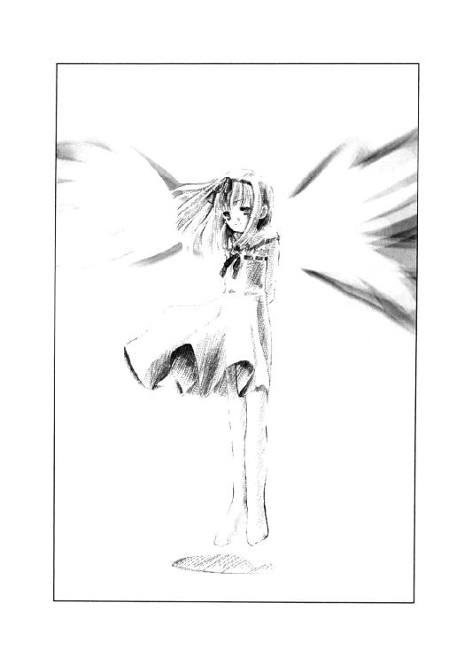
「......それはそうかもしれない」
「首を突っ込む正吾クンがいて、それが原因で事故が起きて、そして事故が解決したらこういう結果になっていた。ただそれだけのこと。それをどう考えるかは、正吾クンたちの自由。人生や運命の意味なんて、その人が自由に決めていいものなんだから」
トーカはそんなことを言うと、もう話を打ち切った。
それで特に否定も肯定もしないが、正吾は自分の考えが正しいのだろうと思うことにする。自由に決めていいならそう考えた方がいいとしか思えなかった。
「なあ、もう本当に会えないのかな？」
「会ったこと自体、事故みたいなものだし」
そう言ってまたトーカは笑う。
「だったら、もう少し話そう。ここでの時間は関係ないんだろ？」
「今回はちょっと事情が違うから。ここでの時間は向こうでの時間なの」
「じゃあ、何？ 俺は魂を失って死んでる状態だったりするの？」
「......まあ、そんなところ」
ちょっと言いよどんだのが怪しい気がした。何かスゴイことになっているんじゃないかと不安がよぎる。
「残念だな。せっかくだから、ちゃんと恩返しもしたかったのに......」
「まあ、また死んだら会えるかもしれないけどね。でも、それはちょっと複雑だな」
「......そうだね」
「恩返しに関しては、私じゃなくてお姉ちゃんの方にしてあげて」
トーカはそう言って天高く指を伸ばした。元の世界に戻すための準備動作だ。
「お姉ちゃん？」
そんな話聞いたことないぞ？──正吾が慌てて、尋ねる。しかし十分な説明を聞く時間はなさそうだった。
「そんなに難しいことじゃなくていいから。お姉ちゃんと仲良くしてあげてね」
トーカはそう言って床の方を指差した。
途端、床が割れて空へと舞い上がり、正吾は闇の中に落ちていく。
「だから、それは誰なんだよ？」
「すぐにわかるよ、すぐにね。じゃあねー！」
トーカがそう言って手を振るのが見えた。そしてそれが正吾が意識を失う前の最後の映像。
正吾はそれでも気を失う前に気力を振り絞った。
そして彼女に手を振った。きっとそれにトーカがよりいっそうの笑顔を浮かべたと信じて。
「正吾クン？」
随分と長い間、自分の名前を呼んでいてくれたらしい。
「乃木坂さん？」
正吾は秋葉が泣きながら自分の名前を呼んでいるのに気づいた。まだ自分はあの部屋にいた。きっとここは一美が殺されて死んでいた場所と同じなんだろう。そんなことを正吾は漠然と思ったりもした。
「あ、青山クン、だ、大丈夫なの？」
「うん......たぶん、大丈夫」
正吾は起き上がると、泣いている秋葉を見て、余計な心配をさせてしまったと済まない気持ちになった。
ごめん──そう言おうとして、また秋葉に止められる。
「謝らなくていいです。私が勝手にしたことだから」
「......勝手にしたこと、か」
なんか寂しい物言いだなと正吾は思った。なんで秋葉はそういういい方をするんだろう。それが正吾にはわからない。
「意識を失っていた間、また、あの変な世界に行ってたんだ」
だから、正吾は話題を変えた。
「天使がいるっていうあの世界？」
「そう。その天使がね、もう修復は完了したから、さようならだって。なんかすごく一方的な話で、ちょっと寂しかった」
正吾のその言葉に秋葉は、じっと黙っていたが、それからこんなことを尋ねた。
「その天使って、美人なんですか？」
「美人？」
正吾は反射的にそう呟きながら、まさかと思って笑いだした。
「美人......かもしれないな。あと何年か経てば」
なぜ正吾が笑っているのかわからず秋葉が眉を寄せる。
「えっと......」
「天使って言っても、小学生みたいな感じで、年齢は十歳くらいなんだ。でも妙に小難しいことも言ったりする変な女の子だった」
「小学生......くらい？」
秋葉はなんだか呆れたような顔をしている。
「うん。そう、で、名前がトーカ。そう言えば......お姉ちゃんを探さないといけないんだ」
「え？」
秋葉がその言葉に驚いてる間に、正吾は勝手に思い出して盛り上がる。
「そうだ。トーカのお姉ちゃん。トーカにお礼を言いたいって言ったらさ、自分は良いから、お姉ちゃんにって。他に天使に知り合いなんていないんだけど、どうすればいいんだろう？」
「それ......誰かわかりますよ」
秋葉はイマイチ確信がないのかおずおずとそんなことを言った。
「本当に？ そうか、トーカがすぐにわかるって言ってたのは、この事だったんだな」
「それもそうですけど、きっと意味がちょっと違うと思います」
「え？」
正吾が意味がわからず尋ね返した。
「私なんです」
「乃木坂さん......が、トーカのお姉さんなの？」
「多分」
秋葉はそう言って、自分の妹の話を始めた。
「私、秋の葉と書いて『あきは』って言う名前なんです。で、一つ下に、冬の華と書いて『とうか』って名前の妹がいたんです」
「......いたんです？」
正吾はそのいい方が気になった。なぜ、過去形なのか。それは少し考えればわかった。
「冬華は死んだんです。私が小学六年生の時に」
「......死んだ？」
「きっと小学生みたいな恰好をしてたのは、冬華が死んだときのままの姿だからだと思います」
「そうだったのか......。そう言われるとそんな気がする」
「私、ずっと冬華を恨んでました」
突然、秋葉はそんなことを打ち明け、泣き始める。正吾が死んだと思って泣いてた時の涙がまた戻ってきたようだった。
「私、青山クンも知ってるでしょうけど、人付き合いが上手い方じゃないんです。だから、一緒にいられるのは冬華くらいでした。冬華は逆に人懐っこいというか、誰とでもすぐに打ち解けられる子だったんです」
「そんな感じだった気もする」
「冬華は、そんな私に『ずっと一緒だから寂しがらないでいいんだよ』って、いつも言ってました。いつもです。だからきっと、私はいつも寂しがってたんですね、きっと」
秋葉は小学生の頃のことを思い出して、泣きながらでも、嬉しいことを思い出したのか口元に笑みを浮かべた。
「でも、冬華は死んでしまった。交通事故です。私、それで独りぼっちになって、本当は自分が悪いのに、ずっと冬華のせいにして、そのまま人付き合いが下手なまま今まで来たんです」
「......そう、だったんだ」
なんとなく、正吾は一美と双海の話に秋葉と冬華を重ねていた。姉と妹の関係は逆かもしれないが似ているような気がする。
「私がこうやって恨み続けていたのに、冬華はずっと一緒にいてくれたんですよね？ 私が寂しがるから、ずっといてくれたんですよね？」
また笑うのをやめて、秋葉は苦しそうに泣き始めた。なんて自分はバカだったんだろう。そう言っているように正吾には見えた。だから、自然に口から出た。
「大丈夫だよ」
「え？」
「トーカはちゃんとわかってる。乃木坂さんのことわかってる。そうじゃなきゃ、お姉ちゃんと仲良くしてくれなんて言わないと思う」
「でも、私、ずっと恨んでたんです。私のことをずっと心配してくれてた妹を......」
「じゃあ、これは復讐なのかな？」
「復讐？」
「本当は俺がすごく嫌なやつで、乃木坂さんを苦しめるために、トーカがしくんだ罠」
正吾はそう言ってわざとらしく意地悪に笑って見せた。
「そ、そんなことないと思います」
秋葉は泣くのも忘れて、急に激しく否定し始めた。
「冬華だって、青山クンだって、そんなひどいことをするわけない」
「わからないよ。乃木坂さんがそう思っているだけかもしれないじゃないか」
冗談半分に言ったつもりだった。でも秋葉は本気で反論する。
「絶対、そんなことないです」
「......じゃあ、それでいいと思うけど」
あまりの剣幕に正吾は自分ももう少し真剣になろうと反省する。
「乃木坂さんが恨んでいたかもしれないけど、トーカはそれでも乃木坂さんの味方。だから謝るようなことじゃない。もし悪いと思うなら......そうだな......」
「青山クンと仲良くしろ？」
特に考えなしに言ったらしい。でも、二人ともそれが正しい答えだと気づいてしまい、なんだか二人ともうろたえてしまう。
「あ、そうだ」
秋葉が慌てて話題を変えた。
「な、なに？」
「ありがとう。助けてくれて」
秋葉は自分で驚いている様子を見せた。無理もない今までずっと言えなかった言葉だ。
「いいよ。そんなに感謝されるようなことじゃないし」
「今日のことだけじゃないんです。去年の文化祭の時も本当にすぐにお礼を言おうと思ってたんです。でも私言い出せなくて......」
「あ、いや。うん、嬉しいよ」
そう言いながら、正吾は別のことを考えていた。二度目のやり直しの時、自分が死ぬ時に、秋葉に聞いた話のことだ。
「......よかった」
正吾の言葉に秋葉はにっこりと笑った。あまり見たこともない表情で、正吾はそれを見て頭の中が真っ白になるほどのショックを受けた。
──乃木坂さんは笑うとこんな顔をするんだ
そんな間抜けな考えだけが頭の中に響いていた。
「今更そんな話されても......とか言われたらどうしようって、思ってた。ずっと言えなかったのに、なんだかあっけなく言えちゃったな。きっと、冬華のおかげだな」
秋葉はそれからじっと正吾を見つめた。正吾はまだショックから抜けきれず、小さくうなずいて返事をするのが精いっぱいだった。
「きっと、そうだね」
秋葉はその返事が嬉しいらしく、また笑って見せた。そして──
「なんか今なら私、言えるかもしれない。うん、言っちゃおう」
秋葉はそんな独り言を呟いた。しかし正吾はその先を瞬時に理解して、慌てて秋葉を止める。
「ちょ、ちょ、ちょっと待って」
「え？」
「その先は俺の話を聞いてからにして欲しいんだけど」
正吾は思い出していた。無事に宿命を修正できたら、秋葉に告げようと思っていた想いを。秋葉はそのことはわからず、不安そうに正吾の方を見ていた。
「やり直しの途中でね、乃木坂さんがそのことをずっと気にしていたって、実は聞いたんだ」
正吾の言葉に秋葉は少し驚いて表情を固くした。彼女にも話の先が見えたらしい。
「で、その時、その先のことも聞いたんだ。つまり、乃木坂さんがさっき言おうとしたこと」
「そ、そそ、それって......」
表情を固くしたのは自分の心を悟られぬようにするためのものだったらしい。しかしさすがの秋葉ももう表情を隠しきれなかった。露骨にうろたえて顔を真っ赤にしている。
「そ、そんなのズルい。だったら、なんでずっと黙ってたの？」
「それは乃木坂さんにも、そうされたから」
「え？」
「一度目のやり直しの時、乃木坂さんが先に死んだんだ。その時、乃木坂さんは、死ぬ自分のために泣くなって、好きでもない人のために泣くなって言ったんだ」
「......私、そ、そんなことを？」
「そう。だから俺、乃木坂さんって、すっげークールな人だなって思った。でも二度目のやり直しの時は、今度は俺が先に死ぬことになった。で、乃木坂さんには死んで欲しくなかったから逃げてくれって言った。俺は、乃木坂さんは冷静に納得してくれると思ってた。でも、実際には違ったんだ」
「......その時、私、全部話したんですね」
「そう。俺が助からないとしても見捨てて逃げるくらいなら、自分はここで死ぬって。それで、文化祭のことを乃木坂さんは話してくれた。今までずっと言えなかったって。俺はそれ聞いて、なんかすごく嬉しかった。自分にお礼を言うためにそんなにずっと悩んでくれてる人がいるなんて思ってもいなかったんだ」
「言えない方に問題があるんだと思いますけど」
「俺は言えなかったら、きっと三日で忘れるよ。だから、いつもその場で言うようにしてるんだ。でも、乃木坂さんがね、自分が死ぬときは黙ってたから、俺は無事に生き残るまでは黙っていようと思ったんだ。無責任に告白して、乃木坂さんを悲しませたら、失礼だと思ったから」
正吾はそう言って、秋葉のことを見つめた。秋葉はもう驚いたり慌てたり赤面したりはしていなかった。真剣に正吾の方を見て、話を聞いてくれている。
「乃木坂さんの告白はもう聞いたんだ。それをもう一回聞きたい気もするけど、こういうのって、男からした方がいいと思うから、俺に言わせて欲しいんだ」
「はい」
秋葉は静かにうなずいた。視線が正吾の方に戻ると、またさっきも見た笑顔を浮かべていた。
正吾はその表情にクラクラする想いを感じながら、それでも優しく彼女の髪に触れた。それから頰に優しくキスをした。
「青山正吾は、この長い十月一日の間に──」
去り際、秋葉が驚いてる間に、正吾がそんな告白をした。
それが噓偽りない想いだった。
昨日、寝るまではこんなことは思っていなかった。でも、あの天使のくれた『今日』という時間のおかげで、その気持ちは確信に変わっていた。
だから、正吾は素直にそれを口にする。
「乃木坂秋葉を好きになりました」
そして返事は──正吾はもう知っていた。でも、それを聞くのはやはり嬉しかった。
「準備を手伝ってくれたあの日から、私、乃木坂秋葉は、ずっとずっと正吾クンのことが好きでした」
エピローグ そして俺は本当の〈天使〉に出会った
次の日の朝、正吾は一緒に登校するために、秋葉を待っていた。
十月二日の朝は夢を見なかった。それでも不安で、彼は朝起きて、今日が何日なのかあえて確認した。昨日と同じく家に家族はいないので、その辺りも不安の原因だったのかもしれない。
いずれにせよ正吾は例によって例のごとく六つ切りパンを食べて、それから家を出ると、駅前のロータリーのところまで来た。秋葉の家がその近くにあるから、昨日の帰り道、ここで会うと決めたからだ。
そして秋葉はすぐに来なかった。正吾が約束より早く来たからかもしれない。それでもそんなに早い時間ではないのか、駅からバス乗り場に向かう生徒たちや、駅に向かう会社員の姿がかなり見える。電車も慌ただしく上下線とも走っているようだ。遠目に見るとそれがなんとも滑稽な気分にさせる。
それでも五分くらい待つと寒いし止まっているのもなんだかつまらない気がする。だったらいっそ迎えに行くかと──そう考えた時だった。
「あれ......？」
それで、やっと正吾が気づいたことがある。それは彼女の家の所在である。彼の記憶が確かなら、秋葉は確かに学校裏の神社の近くに家があったはずだ。だが、考えてみると一回目の十月一日、彼女と一緒に登校したし、今待っている場所も全然方角が違う。
「そうか、ということは......」
あれはきっと噓だったのだ。たまたま秋葉が正吾を見かけたわけじゃない。秋葉はどこかで正吾を探しており、追いかけていたのだ。それで彼女は適当な理由が思いつかず、あんな噓を言ったのだ。自分はそんなにもちゃんと気にしてもらっていたのだ。それに気づかず、距離を遠ざければ大丈夫だと思った自分が情けなく感じる。
と、その時だった。
「なに、にやにやしてんの、ショーゴ？」
背中をバチンッと叩かれた。この容赦のない挨拶をする人間を、正吾は一人しか知らず、それはつまり新たに現れたのがその人物に違いないということであった。
真鶴千尋。短い黒髪のボーイッシュな雰囲気の少女だった。走って追いかけてきたのか少し息が上がっているようだった。
「朝から勘弁してくれよ。背中にアザができるだろ？」
そう言って、ふと、こんなことを以前も言ったような気がして正吾の動きが止まった。
「どうしたの？」
「いや、別に......」
そこに間が良いのか悪いのか、秋葉がやってきた。いつもと同じように見える。昨日見た笑顔は浮かべておらず、正吾はそれがちょっと残念だと思う。
「おはようございます」
「お、おはよう」
千尋がいかにも様子を探っているように正吾を見て、それから秋葉の方に視線を移す。
「なんか、意外なツーショットかも」
千尋のこの言葉も聞いたことがあった。やり直しの一回目の時、結局は運命が変わって聞くことのなかった言葉だ。それを思い出し、正吾はそれから何を言うのかわかった気がした。
「ねえ、写真撮っていい？」
千尋は返答など待つ気がないらしく、カバンの中からカメラをとりだした。
──やっぱりだ
正吾は自分の予感が的中して、なんだか笑ってしまう。
「もう少し近づいてくれるかな。仲良く歩いてるところを撮りたいんだけど」
もう正吾は驚かない。千尋は昨日の朝、しそこねたことをやり直しているかのようだった。
「......どうして？」
秋葉が千尋に尋ねるのが聞えた。これも同じだった。
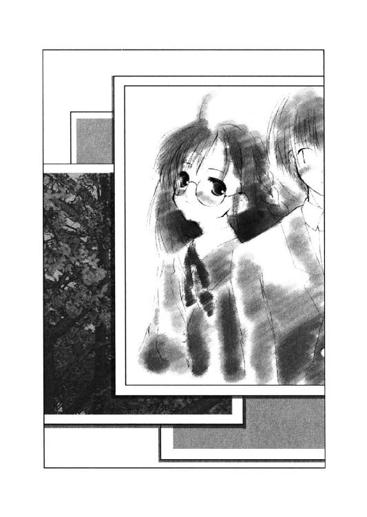
「いや、意外なツーショットなんでせっかくだから」
千尋はあいも変わらずマイペースで二人に注文をつけている。しかし正吾も秋葉もそれに応えようとはしてくれないのに気づいたらしい。
「しょうがないなあ。このことは私の胸にしまっておいてあげる」
そう言うと、千尋はカメラをしまった。
「別に秘密にするようなことじゃないですから」
秋葉が千尋に話しかけると、千尋は急に目を輝かせた。
「ということは、二人がつきあっていることはもう世間に公表していい──つまり、学校新聞で発表してもいいってこと？」
千尋がそう言うまでは本当に同じだった。でも、この先の秋葉の言葉はまったく違うものだった。
「正吾クンさえ良ければ、それでもいいですよ」
秋葉の返答はこうだった。それはそう──『昨日』までの秋葉からは、到底考えられないことに違いなかった。でも今日の彼女は確かにそう言って笑ったのだ。
正吾はそんな秋葉を見ながら、また『昨日』のことを思い出した。あの天使がくれた三日分の『昨日』を。そしてまた、ひとつ心が温かくなるのを感じて、驚く千尋を気にせず笑ってしまったのだった。
あとがき
みなさん、はじめまして。新井輝です。
もし以前からのファンの方がいらっしゃるとすれば、実に久し振りの本となりました。前回の本が出たのは他社さんの方から一九九七年の十月にということですから、三年と五か月ぶりということになります。短編でいいということであれば、ドラゴンマガジンの方で『オーバーロード大作戦！』というの書かせていただきました。これも昨年の九月号に掲載されたわけなので、八か月ほど経っているという計算になります。
というわけで、もう十分忘れられてもいい時間が経っているわけなので、新しくデビューした人くらいに思ってください。でも、以後はよろしくお見知りおきを。
この作品の根幹をなす「同じ日（事例）がくり返される」というネタは、その元がなんであったのか、わからないほど繰り返されているネタであるようです。
僕自身はあまり大量には本を読まない人間なので書くまで知らなかったのですが、新本格ミステリーの名著『七回死んだ男』（作者は西澤保彦先生。講談社ノベルズより一九九五年に刊行）なども、そんな作品の一つであったりします。しかもそのあとがきで語られているように、そのアイデアの元はまた別の作品であったりするのです。
ネタ自体は実にありふれているし、なんの目新しさもない話なのかもしれません。ひょっとすると、この作品とまったく同じ話も、すでに世に出ているのではないかと不安さえあります。
しかしそれでもあえてこの本を出す気になったのは、もしかすると少しは今までにない新しいものではないかという一縷の期待と、そして何より、
「すっきりとハッピーエンドで終わることのできる作品を書きたい！」
という僕の希望を実現できるからでした。
やはりハッピーエンドが良かった──というのは、以前、他の出版社さんで展開していたシリーズへの感想の中で一番多かったものでした。なので、今回は素直にハッピーエンドとわかる話にするというのが僕にとっての前提というか課題だったのです。
ミステリーにも色々なタイプがあるので、もっと楽にそれを実現する方法はあったかもしれませんが、あえて僕は「殺人事件が起こって、その謎を解く」という王道とも言えるタイプを選択しました。
殺人事件とハッピーエンド。その矛盾を克服しようと考えた結果、生まれたのがトーカであり、この作品です。作者の思惑通り、この作品がミステリーとなり、ハッピーエンドとなったのか？ そしてなにより皆さんにとって面白いものであったのか？ その辺りは、こっちでいくら考えても解りません。ですので、皆さんの答えを聞かせて欲しいと思っております。
特に感想やキャラクターの似顔絵などいただけると、床を転げ回って喜んでしまう人間なので「こんなつまらない感想を送ったら逆に失礼かな？」なんて思わず、どんどん送ってください。反響というのはどういう形であれ、作者にとっては嬉しいものなんです。
で、その返事の代わりと言ってはなんですが『オーバーロード大作戦！』の時にもしたように、今回も小新聞のようなものを用意して、制作の裏話やらを皆さんに送りたいと思っています。興味ある方はぜひ編集部まで。でも「その新聞みたいの下さい」だけだと切ないので、一言でもいいのです。感想をいただければ、と思います。
さて、いつものことではありますが、今回も大変多くの人にお世話になりました。本来なら全員の名前をあげたいのですが、さすがに多すぎてどうにもなりません。ほんの一部の方だけになりますが、ここで感謝の気持ちを述べさせていただきたいと思います。
いつも貴重かつ的確なアドバイスを下さる担当のＫ藤さん。
ヴィジュアル的にぱっとしない本作に素敵なイラストを描いて素晴らしいものにしてくれたイラストレーターの久瀬たかし先生。
『オーバーロード大作戦！』の時に、一番最初にファンレターをくれた富士見書房でのファン第壱号の刻樹月下さん（この本は読まれてますか？（笑））。
似た作品が色々あると教えてくれた後藤さん。
「あなたはもう少し本を読んだ方がいいですよ」など的確なアドバイスをいつも僕にくれるミステリー文庫では先輩でもある水城正太郎先生。
とにかく色々とお世話になった皆さん。本当にありがとうございます。そしてこれからも、よろしくお願いします。
ＰＳ なんと驚くべきことに来月にはまた別の出版社さんから僕の新作が発売されます。
本作とはまた毛色の違った作品ですが、興味ある方はぜひどうぞ。
二〇〇一年 二月 新井 輝
DEAR
少女がくれた木曜日
新井 輝
平成24年7月12日 発行
発行者 山下直久
発行所 株式会社富士見書房
〒102-8144 東京都千代田区富士見1-12-14
http://www.fujimishobo.co.jp/
(C)2001 Teru Arai, Takashi Kuze/Fujimishobo